Linux: Docker
TAGS: Linux
内容概述
docker 基本操作
容器镜像制作和管理
数据卷管理
网络管理
镜像仓库管理
容器编排管理工具docker compose
容器资源限制
可视化容器管理工具Portainer
容器多进程管理
容器排查
镜像加速
docker 基本操作
Container 即容器，但今天我们所说的容器是一种 IT 技术。容器其实是一种沙盒技术。顾名思义，沙盒就是能够像一个集装箱一样，把你的应用装起来。这样，应用与应用之间就有了边界而不会相互干扰;同时装在沙盒里面的应用，也可以很方便的被搬来搬去，这也是 PaaS 想要的最理想的状态(可移植性,标准化,隔离性)。
Docker 介绍
容器历史
docker八卦
虽然 docker 把容器技术推向了巅峰，但容器技术却不是从 docker 诞生的。实际上，容器技术连新技术都算不上，因为它的诞生和使用确实有些年头了。下面的一串名称可能有的你都没有听说过，但它们的确都是容器技术的应用:
- 1、Chroot Jail
就是我们常见的 chroot 命令的用法。它在 1979 年的时候就出现了，被认为是最早的容器化技术之一。它可以把一个进程的文件系统隔离起来。
- 2、The FreeBSD Jail
Freebsd Jail (监狱)实现了操作系统级别的虚拟化，它是操作系统级别虚拟化技术的先驱之一。2000年，伴随FreeBSD4.0版的发布
- 3、Linux VServer
使用添加到 Linux 内核的系统级别的虚拟化功能实现的专用虚拟服务器。允许创建许多独立的虚拟专用服务器（VPS），这些虚拟专用服务器在单个物理服务器上全速同时运行，从而有效地共享硬件资源。VPS提供与传统Linux服务器几乎相同的操作环境。可以在这样的VPS上启动所有服务（例如ssh，邮件，Web和数据库服务器），而无需（或者在特殊情况下只需进行很少的修改），就像在任何真实服务器上一样。
每个VPS都有自己的用户帐户数据库和root密码，并且与其他虚拟服务器隔离，但它们共享相同的硬件资源
2003年11月1日 VServer 1.0 发布官网:http://linux-vserver.org/
- 4、Solaris Containers
它也是操作系统级别的虚拟化技术，专为 X86 和 SPARC 系统设计。Solaris 容器是系统资源控制和通过"区域" 提供边界隔离的组合。
- 5、OpenVZ
OpenVZ 是一种 Linux 中操作系统级别的虚拟化技术。 它允许创建多个安全隔离的 Linux 容器，即VPS。
- 6、Process Containers
Process 容器由 Google 的工程师开发，一般被称为 cgroups。
- 7、LXC
LXC为Linux Container的简写。可以提供轻量级的虚拟化，以便隔离进程和资源，而且不需要提供指令解释机制以及全虚拟化的其他复杂性。容器有效地将由单个操作系统管理的资源划分到孤立的组中，以更好地在孤立的组之间平衡有冲突的资源使用需求。
Linux Container提供了在单一可控主机节点上支持多个相互隔离的server container同时执行的机制。
Linux Container有点像chroot，提供了一个拥有自己进程和网络空间的虚拟环境，但又有别于虚拟机，因为lxc是一种操作系统层次上的资源的虚拟化。
- 8、Warden
在最初阶段，Warden 使用 LXC 作为容器运行时。 如今已被 CloudFoundy 取代。
- 9、LMCTFY
LMCTY 是 Let me contain that for you 的缩写。它是 Google 的容器技术栈的开源版本。Google 的工程师一直在与 docker 的 libertainer 团队合作，并将 libertainer 的核心概念进行抽象并移植到此项目中。该项目的进展不明，估计会被 libcontainer 取代。
- 10、Docker
Docker 是一个可以将应用程序及其依赖打包到几乎可以在任何服务器上运行的容器的工具。
- 11、RKT
RKT 是 Rocket 的缩写，它是一个专注于安全和开放标准的应用程序容器引擎。
综上所述正如我们所看到的，docker 并不是第一个容器化技术，但它的确是最知名的一个。
Docker 是什么
Docker （码头工人）是一个开源项目，诞生于 2013 年初，最初是 dotCloud 公司（后由于 Docker 开源后大受欢迎就将公司改名为 Docker Inc ，总部位于美国加州的旧金山）内部的一个开源的 PAAS 服
务 (Platform as a ServiceService )的业余项目。它基于 Google 公司推出的 Go 语言实现。 项目后来加入了 Linux 基金会，遵从了 Apache 2.0 协议，项目代码在 GitHub 上进行维护。
Docker 是基于 linux 内核实现，Docker 最早采用 LXC 技术 ，LXC 是 Linux 原生支持的容器技术 ，可以提供轻量级的虚拟化 ，可以说 docker 就是基于 LXC 发展起来 的，提供 LXC 的高级封装，标准的配置方法，在LXC的基础之上，docker提供了一系列更强大的功能。而虚拟化技术 KVM(KernelKernelbased Virtual Machine Machine) 基于 模块实现， 后来Docker 改为自己研发并开源的 runc 技术运行
容器，彻底抛弃了LXC。
Docker 相比虚拟机的交付速度更快，资源消耗更低，Docker 采用客户端/服务端架构，使用远程API来管理和创建容器，其可以轻松的创建一个轻量级的、可移植的、自给自足的容器，docker 的三大理念是build(构建)、ship(运输)、 run(运行)，Docker遵从apache 2.0协议，并通过（namespace及cgroup等）来提供容器的资源隔离与安全保障等，所以Docke容器在运行时不需要类似虚拟机（空运行的虚拟机占用物理机6-8%性能）的额外资源开销，因此可以大幅提高资源利用率,总而言之Docker是一种用了新颖方式实现的轻量级虚拟机.类似于VM但是在原理和应用上和VM的差别还是很大的，并且docker的专业叫法是应用容器(Application Container)。
Docker的主要目标
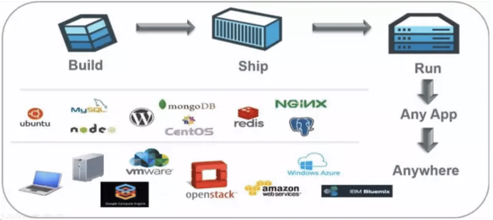
Build, Ship and Run Any App, Anywhere，即通过对应用组件的封装（Packaging）、分发（Distribution）、部署（Deployment）、运行（Runtime）等生命周期的管理，达到应用组件级别的“一次封装，到处运行”。这里的应用组件，既可以是一个Web应用，也可以是一套数据库服务，甚至是一个操作系统。将应用运行在Docker 容器上，可以实现跨平台，跨服务器，只需一次配置准备好相关的应用环境，即可实现到处运行，保证研发和生产环境的一致性，解决了应用和运行环境的兼容性问题，从而极大提升了部署效率，减少故障的可能性
使用Docker 容器化封装应用程序的意义:
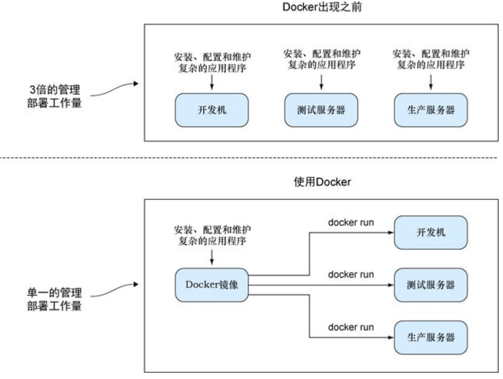
- 统一基础设施环境-docker环境
- 硬件的组成配置
- 操作系统的版本运行时环境的异构
- 硬件的组成配置
- 统一程序打包（装箱）方式-docker镜像
- java程序
- python程序
- nodejs程序
- java程序
- 统一程序部署（运行）方式-docker容器
- java-jar…→ docker run…
- python manage.py runserver… → docker run…
- npm run dev … → docker run…
- java-jar…→ docker run…
Docker 和虚拟机，物理主机
容器和虚拟机技术比较
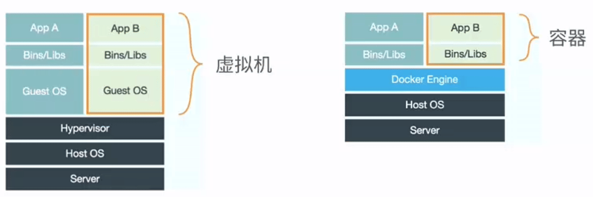
- 传统虚拟机是虚拟出一个主机硬件,并且运行一个完整的操作系统 ,然后在这个系统上安装和运行软件
- 容器内的应用直接运行在宿主机的内核之上,容器并没有自己的内核,也不需要虚拟硬件,相当轻量化
- 每个容器间是互相隔离,每个容器内都有一个属于自己的独立文件系统,独立的进程空间,网络空间,用户空间等,所以在同一个宿主机上的多个容器之间彼此不会相互影响
容器和虚拟机表现比较
- 资源利用率更高: 开销更小,不需要启动单独的虚拟机OS内核占用硬件资源,可以将服务器性能压榨至极致.虚拟机一般会有5-20%的损耗,容器运行基本无损耗,所以生产中一台物理机只能运行数十个虚拟机，但是一般可以运行数百个容器
- 启动速度更快: 可以在数秒内完成启动
- 占用空间更小: 容器一般占用的磁盘空间以MB为单位,而虚拟机以GB
- 集成性更好: 和CI/CD（持续集成/持续部署）相关技术结合性更好，实现打包镜像发布测试可以一键运行,做到自动化并快速的部署管理,实现高效的开发生命周期
使用虚拟机是为了更好的实现服务运行环境隔离，每个虚拟机都有独立的内核，虚拟化可以实现不同操作系统的虚拟机，但是通常一个虚拟机只运行一个服务，很明显资源利用率比较低且造成不必要的性能损耗，我们创建虚拟机的目的是为了运行应用程序，比如Nginx、PHP、Tomcat等web程序，使用虚拟机无疑带来了一些不必要的资源开销，但是容器技术则基于减少中间运行环节带来较大的性能提升。
根据实验，一个运行着CentOS的KVM虚拟机启动后，在不做优化的情况下，虚拟机自己就需要占用100~200 MB内存。此外，用户应用运行在虚拟机里面，它对宿主机操作系统的调用就不可避免地要经过虚拟化软件的拦截和处理，这本身又是一层性能损耗，尤其对计算资源、网络和磁盘I/O的损耗非常大。
比如: 一台96G内存的物理服务器，为了运行java程序的虚拟机一般需要分配8G内存/4核的资源，只能运行13台左右虚拟机，但是改为在docker容器上运行Java程序,每个容器只需要分配4G内存即可，同样的物理服务器就可以运行25个左右容器，运行数量相当于提高一倍，可以大幅节省IT支出，通常情况下至少可节约一半以上的物理设备
Docker 的组成
docker 官网: http://www.docker.com
帮助文档链接: https://docs.docker.com/
docker 镜像: https://hub.docker.com/
docker 中文网站: http://www.docker.org.cn/Docker
- Docker 主机(Host): 一个物理机或虚拟机，用于运行Docker服务进程和容器，也称为宿主机，node节点
- Docker 服务端(Server): Docker守护进程，运行docker容器
- Docker 客户端(Client): 客户端使用 docker 命令或其他工具调用docker API
- Docker 镜像(Images): 镜像可以理解为创建实例使用的模板,本质上就是一些程序文件的集合
- Docker 仓库(Registry): 保存镜像的仓库，官方仓库: https://hub.docker.com/ ，可以搭建私有仓库harbor
- Docker 容器(Container): 容器是从镜像生成对外提供服务的一个或一组服务,其本质就是将镜像中的程序启动后生成的进程
Namespace
一个宿主机运行了N个容器，多个容器共用一个 OS，必然带来的以下问题:
- 怎么样保证每个容器都有不同的文件系统并且能互不影响？
- 一个docker主进程内的各个容器都是其子进程，那么如果实现同一个主进程下不同类型的子进程？各个容器子进程间能相互通信(内存数据)吗？
- 每个容器怎么解决IP及端口分配的问题？
- 多个容器的主机名能一样吗？
- 每个容器都要不要有root用户？怎么解决账户重名问题？
namespace是Linux系统的底层概念，在内核层实现，即有一些不同类型的命名空间被部署在核内，各个docker容器运行在同一个docker主进程并且共用同一个宿主机系统内核，各docker容器运行在宿主机的用户空间，每个容器都要有类似于虚拟机一样的相互隔离的运行空间，但是容器技术是在一个进程内实现运行指定服务的运行环境，并且还可以保护宿主机内核不受其他进程的干扰和影响，如文件系统空间、网络空间、进程空间等，目前主要通过以下技术实现容器运行空间的相互隔离:
隔离类型 功能 系统调用参数 内核版本
- MNT Namespace(mount)： 提供磁盘挂载点和文件系统的隔离能力 CLONE_NEWNS 2.4.19
- IPC Namespace(InterProcess Communication)：提供进程间通信的隔离能力,包括信号量,消息队列和共享内存 CLONE_NEWIPC 2.6.19
- UTS Namespace(UNIX Timesharing System)：提供内核,主机名和域名隔离能力 CLONE_NEWUTS 2.6.19
- PID Namespace(ProcessIdentification)： 提供进程隔离能力 CLONE_NEWPID 2.6.24
- Net Namespace(network)： 提供网络隔离能力,包括网络设备,网络栈,端口等 CLONE_NEWNET 2.6.29
- User Namespace(user)：提供用户隔离能力,包括用户和组 CLONE_NEWUSER 3.8
NameSpace是在内核级别完成环境隔离的方法。你可以把它想象成一种change root机制，能模拟一个独立的Linux运行使得用户程序在指定位置运行。
MNT Namespace
每个容器都要有独立的根文件系统有独立的用户空间，以实现在容器里面启动服务并且使用容器的运行环境，即一个宿主机是ubuntu的服务器，可以在里面启动一个centos运行环境的容器并且在容器里面启动一个Nginx服务，此Nginx运行时使用的运行环境就是centos系统目录的运行环境，但是在容器里面是不能访问宿主机的资源，宿主机是使用了chroot技术把容器锁定到一个指定的运行目录里面。
例如:
/var/lib/containerd/io.containerd.runtime.v1.linux/moby/容器ID
根目录:
/var/lib/docker/overlay2/ID
范例: 容器和宿主机共享内核
[root@centos8 ~]#podman exec nginx uname -r 4.18.0-147.el8.x86_64 [root@centos8 ~]#uname -r 4.18.0-147.el8.x86_64
IPC Namespace
一个容器内的进程间通信，允许一个容器内的不同进程的(内存、缓存等)数据访问，但是不能跨容器直接访问其他容器的数据
UTS Namespace
UTS namespace（UNIX Timesharing System包含了运行内核的名称、版本、底层体系结构类型等信息）用于系统标识，其中包含了主机名hostname 和域名domainname ，它使得一个容器拥有属于自己主机名标识，这个主机名标识独立于宿主机系统和其上的其他容器。
PID Namespace
Linux系统中，有一个PID为1的进程(init/systemd)是其他所有进程的父进程，那么在每个容器内也要有一个父进程来管理其下属的子进程，那么多个容器的进程通PID namespace进程隔离(比如PID编号重复、器内的主进程生成与回收子进程等)。
NET Namespace
每一个容器都类似于虚拟机一样有自己的网卡、监听端口、TCP/IP协议栈等，
Docker使用network namespace启动一个vethX接口，这样你的容器将拥有它自己的桥接ip地址，通常是docker0，而docker0实质就是Linux的虚拟网桥,网桥是在OSI七层模型的数据链路层的网络设备，通过mac地址对网络进行划分，并且在不同网络直接传递数据。
演示：2)ip netns：管理网络名称空间
将接口移动到指定的网络名称空间
[root@centos7 ~]# ip netns add mynet [root@centos7 ~]# ip link set eno16777736 netns mynet [root@centos7 ~]# ip netns list [root@centos7 ~]# ip netns exec mynet ip link show #在虚拟网络中的使用命令查看或 ip netns exec mynet netstat -ntlp [root@centos7 ~]# ip netns del mynet #删除虚拟网络空间后，其里网卡设备也就还原原位置了；
User Namespace
各个容器内可能会出现重名的用户和用户组名称，或重复的用户UID或者GID，那么怎么隔离各个容器内的用户空间呢？
User Namespace允许在各个宿主机的各个容器空间内创建相同的用户名以及相同的用户UID和GID，只是会把用户的作用范围限制在每个容器内，即A容器和B容器可以有相同的用户名称和ID的账户，但是此用户的有效范围仅是当前容器内，不能访问另外一个容器内的文件系统，即相互隔离、互不影响、永不相见。
Control groups
Linux Cgroups的全称是Linux Control Groups,是Linux内核的一个功能.最早是由Google的工程师（主要是Paul Menage和Rohit Seth）在2006年发起，最早的名称为进程容器（process containers）。在2007年时，因为在Linux内核中，容器（container）这个名词有许多不同的意义，为避免混乱，被重命名为cgroup，并且被合并到2.6.24版的内核中去。自那以后，又添加了很多功能。
如果不对一个容器做任何资源限制，则宿主机会允许其占用无限大的内存空间，有时候会因为代码bug程序会一直申请内存，直到把宿主机内存占完，为了避免此类的问题出现，宿主机有必要对容器进行资源分配限制，比如CPU、内存等
Cgroups 最主要的作用，就是限制一个进程组能够使用的资源上限，包括CPU、内存、磁盘、网络带宽等等。此外，还能够对进程进行优先级设置，资源的计量以及资源的控制(比如:将进程挂起和恢复等操作)。
验证系统 cgroups
Cgroups在内核层默认已经开启，从CentOS 和 Ubuntu 不同版本对比，显然内核较新的支持的功能更多。
Centos 8.1 cgroups:
[root@centos8 ~]#cat /etc/redhat-release CentOS Linux release 8.1.1911 (Core) [root@centos8 ~]#grep CGROUP /boot/config-4.18.0-147.el8.x86_64 CONFIG_CGROUPS=y CONFIG_BLK_CGROUP=y # CONFIG_DEBUG_BLK_CGROUP is not set CONFIG_CGROUP_WRITEBACK=y CONFIG_CGROUP_SCHED=y CONFIG_CGROUP_PIDS=y CONFIG_CGROUP_RDMA=y CONFIG_CGROUP_FREEZER=y CONFIG_CGROUP_HUGETLB=y CONFIG_CGROUP_DEVICE=y CONFIG_CGROUP_CPUACCT=y CONFIG_CGROUP_PERF=y CONFIG_CGROUP_BPF=y # CONFIG_CGROUP_DEBUG is not set CONFIG_SOCK_CGROUP_DATA=y # CONFIG_BLK_CGROUP_IOLATENCY is not set CONFIG_NETFILTER_XT_MATCH_CGROUP=m CONFIG_NET_CLS_CGROUP=y CONFIG_CGROUP_NET_PRIO=y CONFIG_CGROUP_NET_CLASSID=y [root@centos8 ~]#
Centos 7.6 cgroups:
[root@centos7 ~]#cat /etc/redhat-release CentOS Linux release 7.6.1810 (Core) [root@centos7 ~]#grep CGROUP /boot/config-3.10.0-957.el7.x86_64 CONFIG_CGROUPS=y # CONFIG_CGROUP_DEBUG is not set CONFIG_CGROUP_FREEZER=y CONFIG_CGROUP_PIDS=y CONFIG_CGROUP_DEVICE=y CONFIG_CGROUP_CPUACCT=y CONFIG_CGROUP_HUGETLB=y CONFIG_CGROUP_PERF=y CONFIG_CGROUP_SCHED=y CONFIG_BLK_CGROUP=y # CONFIG_DEBUG_BLK_CGROUP is not set CONFIG_NETFILTER_XT_MATCH_CGROUP=m CONFIG_NET_CLS_CGROUP=y CONFIG_NETPRIO_CGROUP=y
ubuntu cgroups:
[root@ubuntu1804 ~]#grep CGROUP /boot/config-4.15.0-29-generic CONFIG_CGROUPS=y CONFIG_BLK_CGROUP=y # CONFIG_DEBUG_BLK_CGROUP is not set CONFIG_CGROUP_WRITEBACK=y CONFIG_CGROUP_SCHED=y CONFIG_CGROUP_PIDS=y CONFIG_CGROUP_RDMA=y CONFIG_CGROUP_FREEZER=y CONFIG_CGROUP_HUGETLB=y CONFIG_CGROUP_DEVICE=y CONFIG_CGROUP_CPUACCT=y CONFIG_CGROUP_PERF=y CONFIG_CGROUP_BPF=y # CONFIG_CGROUP_DEBUG is not set CONFIG_SOCK_CGROUP_DATA=y CONFIG_NETFILTER_XT_MATCH_CGROUP=m CONFIG_NET_CLS_CGROUP=m CONFIG_CGROUP_NET_PRIO=y CONFIG_CGROUP_NET_CLASSID=y
cgroups 中内存模块:
[root@ubuntu1804 ~]#grep MEMCG /boot/config-4.15.0-29-generic CONFIG_MEMCG=y CONFIG_MEMCG_SWAP=y # CONFIG_MEMCG_SWAP_ENABLED is not set CONFIG_SLUB_MEMCG_SYSFS_ON=y
cgroups 具体实现
- blkio: 块设备IO限制
- cpu: 使用调度程序为 cgroup 任务提供 cpu 的访问
- cpuacct: 产生 cgroup 任务的 cpu 资源报告
- cpuset: 如果是多核心的 cpu，这个子系统会为 cgroup 任务分配单独的 cpu 和内存
- devices: 允许或拒绝 cgroup 任务对设备的访问
- freezer: 暂停和恢复 cgroup 任务
- memory: 设置每个 cgroup 的内存限制以及产生内存资源报告
- net_cls: 标记每个网络包以供 cgroup 方便使用
- ns: 命名空间子系统
- perf_event: 增加了对每 group 的监测跟踪的能力，可以监测属于某个特定的 group 的所有线程以及运行在特定CPU上的线程
查看系统 cgroups
[root@ubuntu1804 ~]#ll /sys/fs/cgroup/ total 0 drwxr-xr-x 15 root root 380 Jan 22 16:20 ./ drwxr-xr-x 10 root root 0 Jan 22 16:20 ../ dr-xr-xr-x 5 root root 0 Jan 22 16:20 blkio/ lrwxrwxrwx 1 root root 11 Jan 22 16:20 cpu -> cpu,cpuacct/ lrwxrwxrwx 1 root root 11 Jan 22 16:20 cpuacct -> cpu,cpuacct/ dr-xr-xr-x 5 root root 0 Jan 22 16:20 cpu,cpuacct/ dr-xr-xr-x 3 root root 0 Jan 22 16:20 cpuset/ dr-xr-xr-x 5 root root 0 Jan 22 16:20 devices/ dr-xr-xr-x 3 root root 0 Jan 22 16:20 freezer/ dr-xr-xr-x 3 root root 0 Jan 22 16:20 hugetlb/ dr-xr-xr-x 5 root root 0 Jan 22 16:20 memory/ lrwxrwxrwx 1 root root 16 Jan 22 16:20 net_cls -> net_cls,net_prio/ dr-xr-xr-x 3 root root 0 Jan 22 16:20 net_cls,net_prio/ lrwxrwxrwx 1 root root 16 Jan 22 16:20 net_prio -> net_cls,net_prio/ dr-xr-xr-x 3 root root 0 Jan 22 16:20 perf_event/ dr-xr-xr-x 5 root root 0 Jan 22 16:20 pids/ dr-xr-xr-x 2 root root 0 Jan 22 16:20 rdma/ dr-xr-xr-x 6 root root 0 Jan 22 16:20 systemd/ dr-xr-xr-x 5 root root 0 Jan 22 16:20 unified/ [root@ubuntu1804 ~]#cat /sys/fs/cgroup/cpu/docker/5dee9be9afdbab8c2f6c4c5eb0f956c9579efe93110daf638f8fd15f43d961e2/cpuacct.usage 4751336886 [root@ubuntu1804 ~]#cat /sys/fs/cgroup/memory/docker/5dee9be9afdbab8c2f6c4c5eb0f956c9579efe93110daf638f8fd15f43d961e2/cpuacct.usage [root@ubuntu1804 ~]#cat /sys/fs/cgroup/memory/docker/5dee9be9afdbab8c2f6c4c5eb0f956c9579efe93110daf638f8fd15f43d961e2/memory.limit_in_bytes 9223372036854771712 [root@ubuntu1804 ~]#cat /sys/fs/cgroup/memory/docker/5dee9be9afdbab8c2f6c4c5eb0f956c9579efe93110daf638f8fd15f43d961e2/memory.max_usage_in_bytes 79278080
容器管理工具
有了以上的chroot、namespace、cgroups就具备了基础的容器运行环境，但是还需要有相应的容器创建与删除的管理工具、以及怎么样把容器运行起来、容器数据怎么处理、怎么进行启动与关闭等问题需要解决，于是容器管理技术出现了。目前主要是使用docker，早期使用 LXC
LXC
LXC: Linux Container。可以提供轻量级的虚拟化功能,以便隔离进程和资源,包括一系列容器的管理工具软件,如，lxc-create,lxc-start,lxc-attach等,但这技术功能不完善,目前较少使用
官方网站: https://linuxcontainers.org/
案例: Ubuntu安装 和使用 LXC
[root@ubuntu1804 ~]#apt install lxc lxd [root@ubuntu1804 ~]#lxc-checkconfig #检查内核对lcx的支持状况，必须全部为lcx Kernel configuration not found at /proc/config.gz; searching... Kernel configuration found at /boot/config-4.15.0-29-generic --- Namespaces --- Namespaces: enabled Utsname namespace: enabled Ipc namespace: enabled Pid namespace: enabled User namespace: enabled Network namespace: enabled ...... [root@ubuntu1804 ~]#lxc-create -t download --name alpine1 -- --dist alpine --release 3.9 --arch amd64 Setting up the GPG keyring Downloading the image index Downloading the rootfs Downloading the metadata The image cache is now ready Unpacking the rootfs [root@ubuntu1804 ~]#lxc-start alpine1 #启动lxc容器 [root@ubuntu1804 ~]#lxc-attach alpine1 #进入lxc容器 ~ # ifconfig eth0 Link encap:Ethernet HWaddr 00:16:3E:DF:9E:45 lo Link encap:Local Loopback ~ # uname -r 4.15.0-29-generic ~ # uname -a Linux alpine12 4.15.0-29-generic #31-Ubuntu SMP Tue Jul 17 15:39:52 UTC 2018x86_64 Linux ~ # cat /etc/issue Welcome to Alpine Linux 9 Kernel \r on an \m (\l) ~ # exit
命令选项说明:
-t 模板: -t 选项后面跟的是模板，模式可以认为是一个原型，用来说明需要一个什么样的容器(比如容器里面需不需要有vim, apache等软件)．模板实际上就是一个脚本文件(位于/usr/share/lxc/templates目录)，我们这里指定download模板(lxc-create会调用lxc-download脚本，该脚本位于刚说的模板目录中)是说明我们目前没有自己模板，需要下载官方的模板 --name 容器名称: 为创建的容器命名 -- : --用来说明后面的参数是传递给download脚本的，告诉脚本需要下载什么样的模板 --dist 操作系统名称: 指定操作系统 --release 操作系统: 指定操作系统，可以是各种Linux的变种 --arch 架构: 指定架构，是x86还是arm，是32位还是64位1.1.7.3 pouch
lxc启动容器依赖于模板，清华模板源: https://mirrors.tuna.tsinghua.edu.cn/help/lxc-images/ ，但是做模板相对较难，需要手动一步步创构建文件系统、准备基础目录及可执行程序等，而且在大规模使用容器的场景很难横向扩展，另外后期代码升级也需要重新从头构建模板，基于以上种种原因便有了docker
docker
Docker 相当于增强版的LXC,功能更为强大和易用,也是当前最主流的容器前端管理工具
Docker 先启动一个容器也需要一个外部模板，也称为镜像，docke的镜像可以保存在一个公共的地方共享使用，只要把镜像下载下来就可以使用，最主要的是可以在镜像基础之上做自定义配置并且可以再把其提交为一个镜像，一个镜像可以被启动为多个容器。
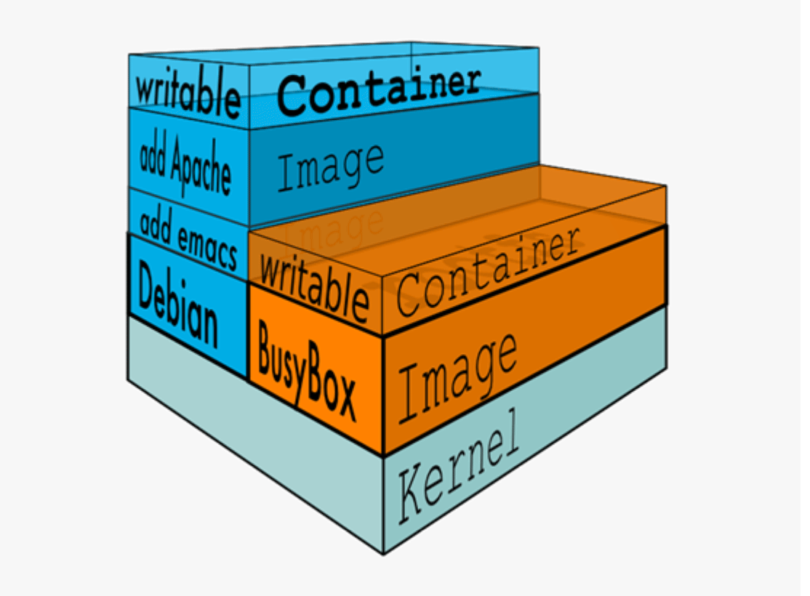
Docker的镜像是分层的，镜像底层为库文件且只读层即不能写入也不能删除数据，从镜像加载启动为一个容器后会生成一个可写层，其写入的数据会复制到宿主机上对应容器的目录，但是容器内的数据在删除容器后也会被随之删除。
pouch
项目网点: https://github.com/alibaba/pouch
Pouch （小袋子）起源于 2011 年，并于2017年11月19日上午，在中国开源年会现场，阿里巴巴正式开源了基于 Apache 2.0 协议的容器技术 Pouch。Pouch 是一款轻量级的容器技术，拥有快速高效、可移植性高、资源占用少等特性，主要帮助阿里更快的做到内部业务的交付，同时提高超大规模下数据中心的物理资源利用率
目前的容器方案大多基于 Linux 内核提供的 cgroup 和 namespace 来实现隔离，然后这样轻量级方案
存在弊端:
- 容器间，容器与宿主间，共享同一个内核
- 内核实现的隔离资源，维度不足
面对如此的内核现状，阿里巴巴采取了三个方面的工作，来解决容器的安全问题:
- 用户态增强容器的隔离维度，比如网络带宽、磁盘使用量等
- 给内核提交 patch，修复容器的资源可见性问题，cgroup 方面的 bug
- 实现基于 Hypervisor 的容器，通过创建新内核来实现容器隔离
Podman
虽然目前 Docker 是管理 Linux 容器最好的工具，注意没有之一，但是podman的横空出现即将改变这一点
什么是Podman？
Podman即Pod Manager tool，从名称上可以看出和kubernets的pod的密切联系，不过就其功能来说，简而言之: `alias docker = podman` ,是CentOS 8 新集成的功能，或许不久的未来会代替docker
Podman是一个 为 Kubernetes 而生的开源的容器管理工具，原来是 CRI-O（即容器运行时接口CRI 和开放容器计划OCI） 项目的一部分，后来被分离成一个单独的项目叫 libpod。其可在大多数Linux平台上使用，它是一种无守护程序的容器引擎，用于在Linux系统上开发，管理和运行任何符合OpenContainer Initiative（OCI）标准的容器和容器镜像。
Podman 提供了一个与Docker兼容的命令行前端，Podman 里面87%的指令都和Docker CLI 相同，因此可以简单地为Docker CLI别名，即“ alias docker = podman”，事实上，podman使用的一些库也是docker的一部分。
官网地址: https://podman.io/
项目地址: https://github.com/containers/libpod
Podman 和docker不同之处
- docker 需要在系统上运行一个守护进程(docker daemon)，这会产生一定的开销，而podman 不需要
- 启动容器的方式不同:
- docker cli 命令通过API跟 Docker Engine(引擎) 交互告诉它我想创建一个container，然后docker Engine 才会调用 OCI container runtime(runc) 来启动一个container。这代表container的process(进程)不会是 Docker CLI 的 child process(子进程) ，而是 DockerEngine 的 child process 。
- Podman 是直接给 OCI containner runtime(runc) 进行交互来创建container的，所以container process 直接是 podman 的 child process 。
- docker cli 命令通过API跟 Docker Engine(引擎) 交互告诉它我想创建一个container，然后docker Engine 才会调用 OCI container runtime(runc) 来启动一个container。这代表container的process(进程)不会是 Docker CLI 的 child process(子进程) ，而是 DockerEngine 的 child process 。
- 因为docke有docker daemon，所以docker启动的容器支持 –restart 策略，但是podman不支持
- docker需要使用root用户来创建容器。 这可能会产生安全风险，尤其是当用户知道docker run命令的–privileged选项时。podman既可以由root用户运行，也可以由非特权用户运行
- docker在Linux上作为守护进程运行扼杀了容器社区的创新。 如果要更改容器的工作方式，则需要更改docker守护程序并将这些更改推送到上游。 没有守护进程，容器基础结构更加模块化，更容易进行更改。 podman的无守护进程架构更加灵活和安全。
docker pull docker.io/library/mysql:latest #加速 vim /etc/containers/registries.conf [registries.search] registries = ['docker.mirrors.aliyuncs.com']
Docker 的优势
- 快速部署: 短时间内可以部署成百上千个应用，更快速交付到线上
- 高效虚拟化: 不需要额外hypervisor支持，基于linux内核实现应用虚拟化，相比虚拟机大幅提高性能和效率
- 节省开支: 提高服务器利用率，降低IT支出
- 简化配置: 将运行环境打包保存至容器，使用时直接启动即可
- 环境统一: 将开发，测试，生产的应用运行环境进行标准化和统一，减少环境不一样带来的各种问题
- 快速迁移和扩展: 可实现跨平台运行在物理机、虚拟机、公有云等环境，良好的兼容性可以方便将应用从A宿主机迁移到B宿主机，甚至是A平台迁移到B平台
- 更好的实现面向服务的架构,推荐一个容器只运行一个应用,实现分布的应用模型,可以方便的进行横向扩展,符合开发中高内聚,低耦合的要求,减少不同服务之间的相互影响
Docker 的缺点
- 多个容器共用宿主机的内核，各应用之间的隔离不如虚拟机彻底
- 由于和宿主机之间的进程也是隔离的,需要进入容器查看和调试容器内进程等资源,变得比较困难和繁琐
- 如果容器内进程需要查看和调试,需要在每个容器内都需要安装相应的工具,这也造成存储空间的重复浪费
容器的核心技术
容器规范
OCI 官网:https://opencontainers.org/
容器技术除了的docker之外，还有coreOS的rkt，还有阿里的Pouch，为了保证容器生态的标准性和健康可持续发展，包括Linux 基金会、Docker、微软、红帽谷歌和、IBM、等公司在2015年6月共同成立了一个叫Open Container Initiative（OCI）的组织，其目的就是制定开放的标准的容器规范，目前OCI一共发布了两个规范，分别是runtime spec和 image format spec，有了这两个规范，不同的容器公司开发的容器只要兼容这两个规范，就可以保证容器的可移植性和相互可操作性。
容器 runtime
runtime是真正运行容器的地方，因此为了运行不同的容器runtime需要和操作系统内核紧密合作相互在支持，以便为容器提供相应的运行环境
runtime 类型:
- Lxc: linux上早期的runtime，在 2013 年 Docker 刚发布的时候,就是采用lxc作为runtime, Docker把 LXC 复杂的容器创建与使用方式简化为 Docker 自己的一套命令体系。随着Docker的发展，原有的LXC不能满足Docker的需求,比如跨平台功能
- Libcontainer: 随着 Docker 的不断发展，重新定义容器的实现标准，将底层实现都抽象化到
- Libcontainer 的接口。这就意味着，底层容器的实现方式变成了一种可变的方案，无论是使用namespace、cgroups 技术抑或是使用 systemd 等其他方案，只要实现了 Libcontainer 定义的一组接口，Docker 都可以运行。这也为 Docker 实现全面的跨平台带来了可能。
- runc: 早期libcontainer是Docker公司控制的一个开源项目，OCI的成立后,Docker把libcontainer项目移交给了OCI组织,runC就是在libcontainer的基础上进化而来,目前Docker默认的runtime，runc遵守OCI规范
- rkt: 是CoreOS开发的容器runtime，也符合OCI规范，所以使用rktruntime也可以运行Docker容器
范例: 查看docker的 runtime
[root@ubuntu1804 ~]#docker info Runtimes: runc #Runtimes Default Runtime: runc #runtime
容器管理工具
管理工具连接runtime与用户，对用户提供图形或命令方式操作，然后管理工具将用户操作传递给runtime执行。
- lxc 是lxd 的管理工具
- Runc的管理工具是docker engine，docker engine包含后台deamon和cli两部分，大家经常提到的Docker就是指的docker engine
- Rkt的管理工具是rkt cli
容器定义工具
容器定义工具允许用户定义容器的属性和内容，以方便容器能够被保存、共享和重建。
Docker image: 是docker 容器的模板，runtime依据docker image创建容器
Dockerfile: 包含N个命令的文本文件，通过dockerfile创建出docker image
ACI(App container image): 与docker image类似，是CoreOS开发的rkt容器的镜像格式
镜像仓库 Registry
- 统一保存镜像而且是多个不同镜像版本的地方，叫做镜像仓库
- Docker hub: docker官方的公共仓库，已经保存了大量的常用镜像，可以方便大家直接使用
- 阿里云，网易等第三方镜像的公共仓库
- Image registry: docker 官方提供的私有仓库部署工具，无web管理界面，目前使用较少
- Harbor: vmware 提供的自带web界面自带认证功能的镜像私有仓库，目前有很多公司使用
容器编排工具
当多个容器在多个主机运行的时候，单独管理容器是相当复杂而且很容易出错，而且也无法实现某一台主机宕机后容器自动迁移到其他主机从而实现高可用的目的，也无法实现动态伸缩的功能，因此需要有一种工具可以实现统一管理、动态伸缩、故障自愈、批量执行等功能，这就是容器编排引擎
容器编排通常包括容器管理、调度、集群定义和服务发现等功能
- Docker compose : docker 官方实现单机的容器的编排工具
- Docker swarm: docker 官方开发的容器编排引擎,支持overlay network
- Mesos+Marathon: Mesos是Apache下的开源分布式资源管理框架，它被称为是分布式系统的内核。Mesos最初是由加州大学伯克利分校的AMPLab开发的，后在Twitter得到广泛使用。通用的集群组员调度平台，mesos(资源分配)与marathon(容器编排平台)一起提供容器编排引擎功能
- Kubernetes: google领导开发的容器编排引擎，内部项目为Borg，且其同时支持 docker 和CoreOS,当前已成为容器编排工具事实上的标准
docker(容器)的依赖技术
- 容器网络:
docker自带的网络docker network仅支持管理单机的容器网络，当多主机运行的时候需要使用第三方开源网络，例如:calico、flannel等
- 服务发现:
容器的动态扩容特性决定了容器IP也会随之变化，因此需要有一种机制开源自动识别并将用户请求动态转发到新创建的容器上，kubernetes自带服务发现功能，需要结合kube-dns服务解析内部域名
- 容器监控:
可以通过原生命令docker ps/top/stats 查看容器运行状态，另外也可以使用Prometheus 、heapster等第三方监控工具监控容器的运行状态
- 数据管理:
容器的动态迁移会导致其在不同的Host之间迁移，因此如何保证与容器相关的数据也能随之迁移或随时访问，可以使用逻辑卷/存储挂载等方式解决
- 日志收集:
docker 原生的日志查看工具docker logs，但是容器内部的日志需要通过ELK等专门的日志收集分析和展示工具进行处理
Docker安装及基础命令介绍
安装和删除方法
安装文档参考
Ubuntu 安装和删除Docker
官方文档: https://docs.docker.com/install/linux/docker-ce/ubuntu/
Ubuntu 14.04/16.04/18.04 安装docker
# step 1: 安装必要的一些系统工具 sudo apt-get update sudo apt-get -y install apt-transport-https ca-certificates curl softwareproperties-common # step 2: 安装GPG证书 curl -fsSL https://mirrors.aliyun.com/docker-ce/linux/ubuntu/gpg | sudo apt-key add - # Step 3: 写入软件源信息 sudo add-apt-repository "deb [arch=amd64] https://mirrors.aliyun.com/dockerce/linux/ubuntu $(lsb_release -cs) stable" # Step 4: 更新并安装Docker-CE sudo apt-get -y update sudo apt-get -y install docker-ce # 安装指定版本的Docker-CE: # Step 1: 查找Docker-CE的版本: apt-cache madison docker-ce docker-ce | 5:19.03.5~3-0~ubuntu-bionic | https://mirrors.aliyun.com/dockerce/linux/ubuntu bionic/stable amd64 Packages docker-ce | 18.06.3~ce~3-0~ubuntu | https://mirrors.aliyun.com/dockerce/linux/ubuntu bionic/stable amd64 Packages # Step 2: 安装指定版本的Docker-CE: (VERSION例如上面的5:17.03.1~ce-0~ubuntu-xenial) sudo apt-get -y install docker-ce=[VERSION] docker-ce-cli=[VERSION] #示例:指定版本安装 apt-get -y install docker-ce=5:18.09.9~3-0~ubuntu-bionic docker-cecli=5:18.09.9~3-0~ubuntu-bionic
删除docker
[root@ubuntu ~]#apt purge docker-ce [root@ubuntu ~]#rm -rf /var/lib/docker
CentOS 安装和删除Docker
官方文档: https://docs.docker.com/install/linux/docker-ce/centos/
CentOS 6 因内核太旧，即使支持安装docker，但会有各种问题，不建议安装
CentOS 7 的 extras 源虽然可以安装docker，但包比较旧，建议从官方源或镜像源站点下载安装
Kali Linux上安装docker
官方文档：https://www.kali.org/docs/containers/installing-docker-on-kali/#installing-docker-ce-on-kali-linux
Kali Linux 基于 Debian，因此我们需要使用 Debian 的当前稳定版本。
#使用debian稳定版docker源 echo "deb [arch=$(dpkg --print-architecture) signed-by=/etc/apt/keyrings/docker.gpg] https://download.docker.com/linux/debian bookworm stable" | \ sudo tee /etc/apt/sources.list.d/docker.list #导入 gpg 密钥 curl -fsSL https://download.docker.com/linux/debian/gpg | sudo gpg --dearmor -o /etc/apt/keyrings/docker.gpg #安装最新版本的 docker-ce sudo apt update sudo apt install -y docker-ce docker-ce-cli containerd.io #安装docker插件 sudo apt install -y docker-buildx-plugin docker-compose-plugin #将自己添加到 docker 组，以便使用 docker 而不需要 sudo. sudo usermod -aG docker $USER #需要 注销并重新登录
EndeavourOS 安装docker
提前确认系统是否有bridge模块，没有安装
lsmod |grep bridge #安装模块 sudo pacman -S linux-headers sudo pacman -Syu sudo pacman -S linux sudo pacman -S mkinitcpio sudo mkinitcpio -P reboot #重启 sudo modprobe bridge sudo modprobe br_netfilter
EndeavourOS 使用 Arch Linux 的包管理器 pacman，直接执行以下命令安装 Docker
sudo pacman -S docker sudo systemctl start docker sudo systemctl enable docker #验证 docker version docker info sudo pacman -S docker-compose
Linux 二进制安装
本方法适用于无法上网或无法通过包安装方式安装的主机上安装docker
安装文档: https://docs.docker.com/install/linux/docker-ce/binaries/
docker 程序环境
环境配置文件:
/etc/sysconfig/docker-network /etc/sysconfig/docker-storage /etc/sysconfig/docker
Unit File:
/usr/lib/systemd/system/docker.service
docker-ce 配置文件
/etc/containers/registries.conf
其它配置
mkdir -p /etc/docker/
cat>/etc/docker/daemon.json<<EOF
{
"registry-mirrors": [
"https://fz5yth0r.mirror.aliyuncs.com",
"http://hub-mirror.c.163.com/",
"https://docker.mirrors.ustc.edu.cn/",
"https://registry.docker-cn.com"
],
"data-root":"/data/docker",
"storage-opts": [
"overlay2.override_kernel_check=true"
],
"log-driver": "json-file",
"log-opts": {
"max-size": "100m",
"max-file": "3"
}
}
EOF
docker 命令帮助
docker 命令是最常使用的docker 客户端命令，其后面可以加不同的参数以实现不同的功能
docker 命令格式
docker [OPTIONS] COMMAND COMMAND分为 Management Commands #指定管理的资源对象类型,较新的命令用法,将命令按资源类型进行分类,方便使用 Commands #对不同资源操作的命令不分类,使用容易产生混乱
命令有很多子命令，可以用下面方法查看帮助
#docker 命令帮助 man docker docker docker --help #docker 子命令帮助 man docker-COMMAND docker COMMAND --help [root@ubuntu1804 ~]#docker --help
查看 Docker 相关信息
查看 docker 版本
docker version
查看 docker 详解信息
[root@ubuntu1804 ~]#docker info Client: Debug Mode: false #client 端是否开启 debug Server: Containers: 2 #当前主机运行的容器总数 Running: 0 #有几个容器是正在运行的 Paused: 0 #有几个容器是暂停的 Stopped: 2 #有几个容器是停止的 Images: 4 #当前服务器的镜像数 Server Version: 19.03.5 #服务端版本 Storage Driver: overlay2 #正在使用的存储引擎 Backing Filesystem: extfs #后端文件系统，即服务器的磁盘文件系统 Supports d_type: true #是否支持 d_type Native Overlay Diff: true #是否支持差异数据存储 Logging Driver: json-file #日志类型 Cgroup Driver: cgroupfs #Cgroups 类型 Plugins: #插件 Volume: local #卷 Network: bridge host ipvlan macvlan null overlay # overlay 跨主机通信 Log: awslogs fluentd gcplogs gelf journald json-file local logentries splunk syslog # 日志类型 Swarm: inactive #是否支持 swarm Runtimes: runc #已安装的容器运行时 Default Runtime: runc #默认使用的容器运行时 Init Binary: docker-init #初始化容器的守护进程，即 pid 为 1 的进程 containerd version: b34a5c8af56e510852c35414db4c1f4fa6172339 #版本 runc version: 3e425f80a8c931f88e6d94a8c831b9d5aa481657 #runc 版本 init version: fec3683 #init 版本 Security Options: #安全选项 apparmor #安全模块，https://docs.docker.com/engine/security/apparmor/ seccomp #安全计算模块，即制容器操作， https://docs.docker.com/engine/security/seccomp/ Profile: default #默认的配置文件 Kernel Version: 4.15.0-29-generic #宿主机内核版本 Operating System: Ubuntu 18.04.1 LTS #宿主机操作系统 OSType: linux #宿主机操作系统类型 Architecture: x86_64 #宿主机架构 CPUs: 1 #宿主机 CPU 数量 Total Memory: 962MiB #宿主机总内存 Name: ubuntu1804.xxx.org #宿主机 hostname ID: IZHJ:WPIN:BRMC:XQUI:VVVR:UVGK:NZBM:YQXT:JDWB:33RS:45V7:SQWJ #宿主机 ID Docker Root Dir: /var/lib/docker #宿主机关于docker数据的保存目录 Debug Mode: false #server 端是否开启 debug Registry: https://index.docker.io/v1/ #仓库路径 Labels: Experimental: false #是否测试版 Insecure Registries: 127.0.0.0/8 : #非安全的镜像仓库 Registry Mirrors: https://si7y70hh.mirror.aliyuncs.com/ #镜像仓库 Live Restore Enabled: false #是否开启活动重启 (重启docker-daemon 不关闭容器 ) WARNING: No swap limit support #系统警告信息 (没有开启 swap 资源限制 )
范例: 解决上述SWAP报警提示
官方文档: https://docs.docker.com/install/linux/linux-postinstall/#your-kernel-does-not-support-cgroup-swap-limit-capabilities
[root@ubuntu1804 ~]#docker info ...... WARNING: No swap limit support [root@ubuntu1804 ~]# vim /etc/default/grub GRUB_DEFAULT=0 GRUB_TIMEOUT_STYLE=hidden GRUB_TIMEOUT=2 GRUB_DISTRIBUTOR=`lsb_ release -i -s 2> /dev/null || echo Debian` GRUB_CMDLINE_LINUX_DEFAULT="" GRUB_CMDLINE_LINUX="net.ifnames=0 biosdevname=0 swapaccount=1" #修改此行 [root@ubuntu1804 ~]# update-grub [root@ubuntu1804 ~]# reboot
docker 存储引擎
官方文档关于存储引擎的相关文档:
https://docs.docker.com/storage/storagedriver/
https://docs.docker.com/storage/storagedriver/select-storage-driver/
- AUFS:
（Advanced Mult-Layered Unification Filesystem，版本2之前旧称AnotherUnionFS）是一种 Union FS ，是文件级的存储驱动。Aufs是之前的UnionFS的重新实现，2006年由JunjiroOkajima开发所谓 UnionFS就是把不同物理位置的目录合并 mount 到同一个目录中。简单来说就是支持将不同目录挂载到一个虚拟文件系统下的。这种可以层层地叠加修改文件。无论底下有多少都是只读的，最上系统可写的。当需要修改一个文件时， AUFS 创建该文件的一个副本，使用 CoW 将文件从只读层复制到可写进行修改，结果也保存在Docker 中，底下的只读层就是 image，可写层就是Container
aufs 被拒绝合并到主线 Linux 。其代码被批评为"dense, unreadable, uncommented 密集、不可读、未注释"。 相反，OverlayFS被合并到 Linux 内核中。在多次尝试将 aufs 合并到主线内核失败后，作者放弃了
AUFS 是 Docker 18.06 及更早版本的首选存储驱动程序，在内核 3.13 上运行 Ubuntu 14.04 时不支持 overlay2
- Overlay:
一种 Union FS 文件系统， Linux 内核 3.18 后支持Overlay2: Overlay 的升级版，到目前为止，所有 Linux 发行版推荐使用的存储类 型，也是docker默认使用的存储引擎为overlay2，需要磁盘分区支持d-type功能，因此需要系统磁盘的额外支持,相对AUFS来说Overlay2 有以下优势: 更简单地设计； 从3.18开始就进入了Linux内核主线；资源消耗更少
- devicemapper:
因为CentOS 7.2和RHEL 7.2 的之前版本内核版本不支持 overlay2，默认使用的存储驱动程序，最大数据容量只支持100GB且性能不佳，当前较新版本的CentOS 已经支持overlay2， 因此推荐使用 overlay2,另外此存储引擎已在Docker Engine 18.09中弃用
- ZFS
(Sun -2005)/btrfs(Oracle-2007): 目前没有广泛使用
- vfs:
用于测试环境，适用于无法使用 copy-on -writewrite 时的情况。 此存储驱动程序的性能很差，通常不建议用于生产
修改存储引擎参考文档:
https://docs.docker.com/storage/storagedriver/overlayfs-driver/
范例: 在CentOS7.2修改存储引擎
[root@centos7 ~]#vim /lib/systemd/system/docker.service ..... ExecStart=/usr/bin/dockerd -s overlay2 -H fd:// -- containerd=/run/containerd/containerd.sock ...... #创建新的xfs分区,添加ftype特性,否则默认无法启动docker服务 [root@centos7 ~]#mkfs.xfs -n ftype=1 /dev/sdb [root@centos7 ~]#mount /dev/sdb /var/lib/docker [root@centos7 ~]#systemctl daemon-reload [root@centos7 ~]#systemctl restart docker
注意:修改存储引擎会导致所有容器丢失,所以先备份再修改
Docker官方推荐首选存储引擎为overlay2，其次为devicemapper，但是devicemapper存在使用空间方面的一些限制，虽然可以通过后期配置解决，但是官方依然推荐使用overlay2，以下是生产故障事例:
https://www.cnblogs.com/youruncloud/p/5736718.html
如果docker数据目录是一块单独的磁盘分区而且是xfs格式的，那么需要在格式化的时候加上参数-n ftype=1(启用此功能表示节点文件类型存入在目录结构中）, 示例: `mkfs.xfs -n ftype=1 devname` ，否则后期在无法启动容器,并会报错不支持 d_type
注意: ext4文件系统无需此d_type特性
范例: aufs 实现联合文件系统挂载
[root@ubuntu1804 ~]#cat /proc/filesystems ... ... nodev overlay nodev aufs [root@ubuntu1804 ~]#grep -i aufs /boot/config-4.15.0-29-generic CONFIG_AUFS_FS=m CONFIG_AUFS_BRANCH_MAX_127=y # CONFIG_AUFS_BRANCH_MAX_511 is not set # CONFIG_AUFS_BRANCH_MAX_1023 is not set # CONFIG_AUFS_BRANCH_MAX_32767 is not set CONFIG_AUFS_SBILIST=y # CONFIG_AUFS_HNOTIFY is not set CONFIG_AUFS_EXPORT=y CONFIG_AUFS_INO_T_64=y CONFIG_AUFS_XATTR=y # CONFIG_AUFS_FHSM is not set # CONFIG_AUFS_RDU is not set CONFIG_AUFS_DIRREN=y # CONFIG_AUFS_SHWH is not set # CONFIG_AUFS_BR_RAMFS is not set # CONFIG_AUFS_BR_FUSE is not set范例: 修改存储引擎 CONFIG_AUFS_BR_HFSPLUS=y CONFIG_AUFS_BDEV_LOOP=y # CONFIG_AUFS_DEBUG is not set [root@ubuntu1804 ~]#mkdir dir{1,2} [root@ubuntu1804 ~]#echo here is dir1 > dir1/file1 [root@ubuntu1804 ~]#echo here is dir2 > dir2/file2 [root@ubuntu1804 ~]#mkdir /data/aufs [root@ubuntu1804 ~]#mount -t aufs -o br=/root/dir1=ro:/root/dir2=rw none /data/aufs [root@ubuntu1804 ~]#ll /data/aufs/ total 16 drwxr-xr-x 4 root root 4096 Jan 25 16:22 ./ drwxr-xr-x 4 root root 4096 Jan 25 16:22 ../ -rw-r--r-- 1 root root 13 Jan 25 16:22 file1 -rw-r--r-- 1 root root 13 Jan 25 16:22 file2 [root@ubuntu1804 ~]#cat /data/aufs/file1 here is dir1 [root@ubuntu1804 ~]#cat /data/aufs/file2 here is dir2 [root@ubuntu1804 ~]#df -T Filesystem Type 1K-blocks Used Available Use% Mounted on udev devtmpfs 462560 0 462560 0% /dev tmpfs tmpfs 98512 10296 88216 11% /run /dev/sda2 ext4 47799020 2770244 42570972 7% / tmpfs tmpfs 492552 0 492552 0% /dev/shm tmpfs tmpfs 5120 0 5120 0% /run/lock tmpfs tmpfs 492552 0 492552 0% /sys/fs/cgroup /dev/sda3 ext4 19091540 45084 18053588 1% /data /dev/sda1 ext4 944120 77112 801832 9% /boot tmpfs tmpfs 98508 0 98508 0% /run/user/0 none aufs 47799020 2770244 42570972 7% /data/aufs [root@ubuntu1804 ~]#echo write to file1 >> /data/aufs/file1 -bash: /data/aufs/file1: Read-only file system [root@ubuntu1804 ~]#echo write to file2 >> /data/aufs/file2 [root@ubuntu1804 ~]#cat /data/aufs/file1 here is dir1 [root@ubuntu1804 ~]#cat /data/aufs/file2 here is dir2 write to file2 [root@ubuntu1804 ~]#umount /data/aufs [root@ubuntu1804 ~]#mv dir1/file1 dir1/file2 [root@ubuntu1804 ~]#cat dir1/file2 here is dir1 [root@ubuntu1804 ~]#cat dir2/file2 here is dir2 write to file2 [root@ubuntu1804 ~]#mount -t aufs -o br=/root/dir1=ro:/root/dir2=rw none /data/aufs [root@ubuntu1804 ~]#ls /data/aufs -l total 4 -rw-r--r-- 1 root root 13 Jan 25 16:22 file2 [root@ubuntu1804 ~]#cat /data/aufs/file2 here is dir1 [root@ubuntu1804 ~]#
范例: 修改存储引擎
[root@ubuntu1804 ~]#docker info |grep "Storage Driver" Storage Driver: overlay2 [root@ubuntu1804 ~]#systemctl stop docker [root@ubuntu1804 ~]#cat /etc/docker/daemon.json { "storage-driver": "aufs" } [root@ubuntu1804 ~]#systemctl restart docker [root@ubuntu1804 ~]#docker info |grep aufs Storage Driver: aufs Root Dir: /var/lib/docker/aufs [root@ubuntu1804 ~]#docker images # 无镜像 [root@ubuntu1804 ~]#docker ps -a [root@ubuntu1804 ~]#ls /var/lib/docker aufs builder buildkit containers image network overlay2 plugins runtimes swarm tmp trust volumes [root@ubuntu1804 ~]#ls /var/lib/docker/aufs/ diff layers mnt [root@ubuntu1804 ~]#cat /etc/docker/daemon.json { "registry-mirrors": ["https://si7y70hh.mirror.aliyuncs.com"] } [root@ubuntu1804 ~]#systemctl restart docker [root@ubuntu1804 ~]#docker ps -a [root@ubuntu1804 ~]#docker images # 镜像恢复
docker 服务进程
通过查看docker进程，了解docker的运行及工作方式
- 查看宿主机进程树
pstree -p
- docker的进程关系
docker 相关的四个进程:
- dockerd: 服务器程序,被client直接访问，其父进程为宿主机的systemd守护进程。
- docker-proxy: 每个进程docker-proxy实现对应一个需要网络通信的容器，管理宿主机和容器的之间端口映射，其父进程为dockerd，如果容器不需要网络则无需启动
- containerd: 被dockerd进程调用以实现与runc交互
- containerd-shim: 真正运行容器的载体，每个容器对应一个containerd-shim进程，其父进程为containerd
- dockerd: 服务器程序,被client直接访问，其父进程为宿主机的systemd守护进程。
- 容器的创建与管理过程
通信流程:
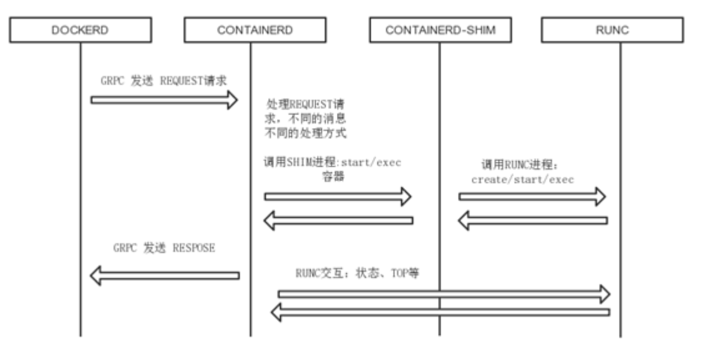
- 1. dockerd通过grpc和 containerd模块通信，dockerd由libcontainerd负责和containerd进行交换，dockerd和containerd 通信socket文件: /run/containerd/containerd.sock
- 2. containerd在dockerd启动时被启动，然后containerd启动grpc请求监听，containerd处理grpc请求，根据请求做相应动作
- 3. 若是run, start或是exec 容器，containerd 拉起一个container-shim , 并进行相应的操作
- 4. container-shim别拉起后，start/exec/create拉起runC进程，通过exit、control文件和containerd通信，通过父子进程关系和SIGCHLD监控容器中进程状态
- 5. 在整个容器生命周期中，containerd通过 epoll 监控容器文件，监控容器事件
- 1. dockerd通过grpc和 containerd模块通信，dockerd由libcontainerd负责和containerd进行交换，dockerd和containerd 通信socket文件: /run/containerd/containerd.sock
- gRPC简介
docker 服务管理
docker 服务基于C/S 结构,可以实现基于本地和远程方式进行管理
#Dockerd守护进程启动选项 -H tcp://host:port unix:///path/to/socket, fd://* or fd://socketfd #守护进程默认配置: -H unix:///var/run/docker.sock #使用Docker客户端命令选项 -H tcp://host:port unix:///path/to/socket, fd://* or fd://socketfd 客户端默认配置: -H unix:///var/run/docker.sock #docker客户端也可以使用环境变量DOCKER_ HOST,代替-H选项 export DOCKER_HOST="tcp://docker-server:2375"
范例: 通过UDS访问docker
[root@ubuntu1804 ~]#cat /lib/systemd/system/docker.service [Unit] Description=Docker Application Container EngineDocumentation=https://docs.docker.com BindsTo=containerd.service After=network-online.target firewalld.service containerd.service Wants=network-online.target Requires=docker.socket [Service] Type=notify ExecStart=/usr/bin/dockerd -H fd:// --containerd=/run/containerd/containerd.sock ExecReload=/bin/kill -s HUP $MAINPID TimeoutSec=0 RestartSec=2 Restart=always StartLimitBurst=3 StartLimitInterval=60s LimitNOFILE=infinity LimitNPROC=infinity LimitCORE=infinity TasksMax=infinity Delegate=yes KillMode=process [Install] WantedBy=multi-user.target [root@ubuntu1804 ~]#systemctl status docker [root@ubuntu1804 ~]#ll /var/run/docker.sock srw-rw---- 1 root docker 0 Jul 22 20:33 /var/run/docker.sock= [root@ubuntu1804 ~]#nc -U /var/run/docker.sock GET /info HTTP/1.1 host: www.xxx.org HTTP/1.1 200 OK Api-Version: 1.40 Content-Type: application/json Docker-Experimental: false Ostype: linux Server: Docker/19.03.12 (linux) Date: Wed, 22 Jul 2020 11:54:12 GMT Transfer-Encoding: chunked 947
范例: docker服务添加标签
[root@ubuntu1804 ~]#vim /lib/systemd/system/docker.service #修改下面行 ExecStart=/usr/bin/dockerd -H fd:// --containerd=/run/containerd/containerd.sock --label="name=docker1" [root@ubuntu1804 ~]#systemctl daemon-reload [root@ubuntu1804 ~]#systemctl restart docker [root@ubuntu1804 ~]#docker info Labels: name=docker1 #此处显示添加的标签
范例: 开启docker的远程访问
#方法1 [root@ubuntu1804 ~]#vim /lib/systemd/system/docker.service #修改下面行 ExecStart=/usr/bin/dockerd -H fd:// -H tcp://0.0.0.0:2375 -- containerd=/run/containerd/containerd.sock --label="name=docker1" #方法2 [root@ubuntu1804 ~]#vim /lib/systemd/system/docker.service ExecStart=/usr/bin/dockerd --containerd=/run/containerd/containerd.sock[root@ubuntu1804 ~]#vim /etc/docker/daemon.json { "hosts": ["tcp://0.0.0.0:2375", "fd://"] } [root@ubuntu1804 ~]#systemctl daemon-reload [root@ubuntu1804 ~]#systemctl restart docker [root@ubuntu1804 ~]#ss -tnlp|grep 2375 [root@ubuntu1804 ~]#ps -ef | grep docker #实现远程访问方式1 [root@centos7 ~]#curl http://10.0.0.100:2375/info #实现远程访问方式2 [root@centos7 ~]#docker -H tcp://10.0.0.100:2375 info #实现远程访问方式3 [root@centos7 ~]#export DOCKER_HOST="tcp://10.0.0.100:2375" [root@centos7 ~]#docker info #恢复连接本机 [rootcentos7 ~]#unset DOCKER_HOST
镜像管理
镜像结构和原理
镜像即创建容器的模版，含有启动容器所需要的文件系统及所需要的内容，因此镜像主要用于方便和快速的创建并启动容器
镜像含里面是一层层的文件系统,叫做 Union FS（联合文件系统）,联合文件系统，可以将几层目录挂载到一起（就像千层饼，洋葱头，俄罗斯套娃一样），形成一个虚拟文件系统,虚拟文件系统的目录结构就像普通 linux 的目录结构一样，镜像通过这些文件再加上宿主机的内核共同提供了一个 linux 的虚拟环境，每一层文件系统叫做一层 layer，联合文件系统可以对每一层文件系统设置三种权限，只读（readonly）、读写（readwrite）和写出（whiteout-able），但是镜像中每一层文件系统都是只读的,构建镜像的时候，从一个最基本的操作系统开始，每个构建提交的操作都相当于做一层的修改，增加了一层文件系统，一层层往上叠加，上层的修改会覆盖底层该位置的可见性，这也很容易理解，就像上层把底层遮住了一样，当使用镜像的时候，我们只会看到一个完全的整体，不知道里面有几层,实际上也不需要知道里面有几层，结构如下:
一个典型的 Linux文件系统由 bootfs 和 rootfs 两部分组成
bootfs(boot file system) 主要包含bootloader和kernel，bootloader主要用于引导加载 kernel，Linux刚启动时会加载bootfs文件系统,当boot加载完成后,kernel 被加载到内存中后接管系统的控制权,bootfs会被 umount 掉
rootfs (root file system) 包含的就是典型 Linux 系统中的/dev，/proc，/bin，/etc 等标准目录和文件，不同的 linux 发行版（如 ubuntu 和 CentOS ) 主要在 rootfs 这一层会有所区别。一般的镜像通常都比较小，官方提供的Ubuntu镜像只有60MB多点，而 CentOS 基础镜像也只有200MB左右，一些其他版本的镜像甚至只有几MB，比如: busybox 才1.22MB，alpine镜像也只有5M左右。镜像直接调用宿主机的内核，镜像中只提供 rootfs，也就是只需要包括最基本的命令,配置文件和程序库等相关文件就可以了。
下图就是有两个不同的镜像在一个宿主机内核上实现不同的rootfs。
容器、镜像和父镜像关系:
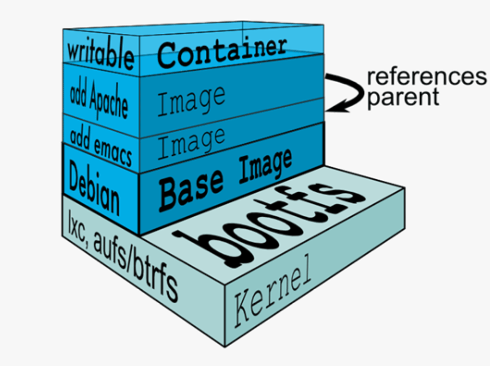
范例: 查看镜像的分层结构
[root@ubuntu1804 ~]#docker pull nginx
#查看镜像分层历史
[root@ubuntu1804 ~]#docker image history nginx
IMAGE CREATED CREATED BY
SIZE COMMENT
0901fa9da894 9 days ago /bin/sh -c #(nop) CMD ["nginx" "-g"
"daemon… 0B
<missing> 9 days ago /bin/sh -c #(nop) STOPSIGNAL SIGTERM
0B
<missing> 9 days ago /bin/sh -c #(nop) EXPOSE 80
0B
<missing> 9 days ago /bin/sh -c #(nop) ENTRYPOINT ["/dockerentr… 0B
<missing> 9 days ago /bin/sh -c #(nop) COPY
0fd5fca330dcd6a7… 1.04kB
<missing> 9 days ago /bin/sh -c #(nop) COPY
1d0a4127e78a26c1… 1.96kB
<missing> 9 days ago /bin/sh -c #(nop) COPY
e7e183879c35719c… 1.2kB
<missing> 9 days ago /bin/sh -c set -x && addgroup –
system -… 63.3MB
<missing> 9 days ago /bin/sh -c #(nop) ENV
PKG_RELEASE=1~buster 0B
<missing> 9 days ago /bin/sh -c #(nop) ENV NJS_VERSION=0.4.2
0B
<missing> 9 days ago /bin/sh -c #(nop) ENV
NGINX_VERSION=1.19.1 0B
<missing> 5 weeks ago /bin/sh -c #(nop) LABEL
maintainer=NGINX Do… 0B
<missing> 5 weeks ago /bin/sh -c #(nop) CMD ["bash"]
0B
<missing> 5 weeks ago /bin/sh -c #(nop) ADD
4d35f6c8bbbe6801c… 69.2MB
搜索镜像
搜索镜像
- 官方网站进行镜像的搜索
官方的docker 仓库中搜索指定名称的docker镜像，也会有很多三方镜像。
- 执行docker search命令进行搜索
格式如下:
范例:
Usage: docker search [OPTIONS] TERM Options: -f, --filter filter Filter output based on conditions provided --format string Pretty-print search using a Go template --limit int Max number of search results (default 25) --no-trunc Don't truncate output说明:
OFFICIAL: 官方
AUTOMATED: 使用第三方docker服务来帮助编译镜像，可以在互联网上面直接拉取到镜像，减少了繁琐的编译过程
范例：搜索点赞100个以上的镜像
docker search --filter=stars=100 centos
alpine 介绍
Alpine 操作系统是一个面向安全的轻型 Linux 发行版。它不同于通常 Linux 发行版，Alpine 采用了musl libc 和 busybox 以减小系统的体积和运行时资源消耗，但功能上比 busybox 又完善的多，因此得到开源社区越来越多的青睐。在保持瘦身的同时，Alpine 还提供了自己的包管理工具 apk，可以通过 https://pkgs.alpinelinux.org/packages 网站上查询包信息，也可以直接通过 apk 命令直接查询和安装各种软件。
Alpine 由非商业组织维护的，支持广泛场景的 Linux发行版，它特别为资深/重度Linux用户而优化，关注安全，性能和资源效能。Alpine 镜像可以适用于更多常用场景，并且是一个优秀的可以适用于生产的基础系统/环境。
Alpine Docker 镜像也继承了 Alpine Linux 发行版的这些优势。相比于其他 Docker 镜像，它的容量非常小，仅仅只有 5 MB 左右（对比 Ubuntu 系列镜像接近 200 MB），且拥有非常友好的包管理机制。官方镜像来自 docker-alpine 项目。
目前 Docker 官方已开始推荐使用 Alpine 替代之前的 Ubuntu 做为基础镜像环境。这样会带来多个好处。包括镜像下载速度加快，镜像安全性提高，主机之间的切换更方便，占用更少磁盘空间等。
下表是官方镜像的大小比较:
REPOSITORY TAG IMAGE ID VIRTUAL SIZE alpine latest 4e38e38c8ce0 4.799 MB debian latest 4d6ce913b130 84.98 MB ubuntu latest b39b81afc8ca 188.3 MB centos latest 8efe422e6104 210 MB
- Alpine 官网: https://www.alpinelinux.org/
- Alpine 官方仓库: https://github.com/alpinelinux
- Alpine 官方镜像: https://hub.docker.com/_/alpine/
- Alpine 官方镜像仓库: https://github.com/gliderlabs/docker-alpine
- Alpine 阿里云的镜像仓库: https://mirrors.aliyun.com/alpine/
范例: alpine管理软件
#修改源替换成阿里源，将里面 dl-cdn.alpinelinux.org 的 改成 mirrors.aliyun.com vi /etc/apk/repositories http://mirrors.aliyun.com/alpine/v3.8/main/ http://mirrors.aliyun.com/alpine/v3.8/community/ #更新源 apk update #安装软件 apk add vim #删除软件 apk del openssh openntp vim
范例：
/ # apk add nginx / # apk info nginx ~ # apk manifest nginx ~ # ls -l /bin
Debian(ubuntu)系统建议安装的基础包
在很多软件官方提供的镜像都使用的是Debian(ubuntu)的系统,比如:nginx,tomcat,mysql,httpd 等,但镜像内缺少很多常用的调试工具.当需要进入容器内进行调试管理时,可以安装以下常用工具包
# apt update #安装软件前需要先更新索引 # apt install procps #提供top,ps,free等命令 # apt install psmisc #提供pstree,killall等命令 # apt install iputils-ping #提供ping命令 # apt install net-tools #提供netstat网络工具等镜像下载说明
下载镜像
从 docker 仓库将镜像下载到本地，命令格式如下:
docker pull [OPTIONS] NAME[:TAG|@DIGEST]
Options:
-a, --all-tags Download all tagged images in the repository
--disable-content-trust Skip image verification (default true)
--platform string Set platform if server is multi-platform capable
-q, --quiet Suppress verbose output
NAME: 是镜像名,一般的形式 仓库服务器:端口/项目名称/镜像名称
:TAG: 即版本号,如果不指定:TAG,则下载最新版镜像
镜像下载说明
[root@ubuntu1804 ~]#docker pull hello-world Using default tag: latest #默认下载最新版本 latest: Pulling from library/hello-world 1b930d010525: Pull complete #分层下载 Digest: sha256:9572f7cdcee8591948c2963463447a53466950b3fc15a247fcad1917ca215a2f #摘要 Status: Downloaded newer image for hello-world:latest docker.io/library/hello-world:latest #下载的完整地址
镜像下载保存的路径:
/var/lib/docker/overlay2/镜像ID
注意: 镜像下载完成后，会自动解压缩，比官网显示的可能会大很多，如: centos8.1.1911下载时只有70MB，下载完后显示237MB
范例: 指定 TAG下载特定版本的镜像
docker pull centos:centos8.1.1911
范例: 指定DIGEST下载特定版本的镜像
先到 hub.docker.com查到指定版本的DIGEST
docker pull alpine@sha256:156f59dc1cbe233827642e09ed06e259ef6fa1ca9b2e29d52ae14d5e7b79d7f0
docker 镜像加速配置
docker 镜像官方的下载站点是: https://hub.docker.com/
从国内下载官方的镜像站点有时候会很慢，因此可以更改docker配置文件添加一个加速器，可以通过加速器达到加速下载镜像的目的
国内有许多公司都提供了docker 加速镜像，比如: 阿里云，腾讯云，网易云，以下以阿里云为例
阿里云获取加速地址
浏览器打开http://cr.console.aliyun.com ， 注册或登录阿里云账号，点击左侧的镜像加速器，将会得到一个专属的加速地址，而且下面有使用配置说明:
镜像加速配置
1. 安装／升级Docker客户端 推荐安装1.10.0以上版本的Docker客户端，参考文档 docker-ce 2. 配置镜像加速器 修改daemon配置文件/etc/docker/daemon.json来使用加速器 mkdir -p /etc/docker tee /etc/docker/daemon.json <<-'EOF' { "registry-mirrors": ["https://si7y70hh.mirror.aliyuncs.com"] } EOF #网易云: http://hub-mirror.c.163.com/ #腾讯云: https://mirror.ccs.tencentyun.com systemctl daemon-reload systemctl restart docker
查看本地镜像
docker images 可以查看下载至本地的镜像
格式:
docker images [OPTIONS] [REPOSITORY[:TAG]] docker image ls [OPTIONS] [REPOSITORY[:TAG]] #常用选项: -q, --quiet Only show numeric IDs -a, --all Show all images (default hides intermediate images) --digests Show digests --no-trunc Don't truncate output -f, --filter filter Filter output based on conditions provided --format string Pretty-print images using a Go template
执行结果的显示信息说明:
REPOSITORY #镜像所属的仓库名称 TAG #镜像版本号（标识符），默认为latest IMAGE ID #镜像唯一ID标识,如果ID相同,说明是同一个镜像有多个名称 CREATED #镜像在仓库中被创建时间 VIRTUAL SIZE #镜像的大小
Repository仓库
- 由某特定的docker镜像的所有迭代版本组成的镜像仓库
- 一个Registry中可以存在多个Repository
- Repository可分为“顶层仓库”和“用户仓库”
- Repository用户仓库名称一般格式为“用户名/仓库名”
- 每个Repository仓库可以包含多个Tag(标签),每个标签对应一个镜像
范例:
#显示完整的ImageID [root@ubuntu1804 ~]#docker images --no-trunc # 查看指定镜像的详细信息 root@centos8 ~]#podman image inspect alpine
镜像导出
利用docker save命令可以将从本地镜像导出为一个打包 tar文件，然后复制到其他服务器进行导入使用
格式:
docker save [OPTIONS] IMAGE [IMAGE...] 选项: -o, --output string Write to a file, instead of STDOUT
常见用法:
docker save -o /path/file.tar IMAGE1 IMAGE2 ... docker save IMAGE1 IMAGE2 ... > /path/file.tar
镜像导入
利用docker load命令可以将镜像导出的压缩文件再导入
格式:
#选项 -i, --input string Read from tar archive file, instead of STDIN -q, --quiet Suppress the load output范例: 一次导出多个镜像
范例: 镜像导入
[root@centos7 ~]#docker load -i /data/myimages.tar #或者 [root@centos7 ~]#docker load < /data/myimages.tar [root@centos7 ~]#docker images
范例: 一次导出多个镜像
[root@ubuntu1804 ~]#docker save busybox alpine > /all.tar
[root@ubuntu1804 ~]#docker rmi -f `docker images -q`
[root@ubuntu1804 ~]#docker load -i /opt/all.tar
[root@ubuntu1804 ~]#docker images
一次性打包所有镜像
docker image save `docker image ls --format "{{.Repository}}:{{.Tag}}"` -o k8s-node-images-v1.50.0.tar #压缩 gzip k8s-node-images-v1.50.0.tar #拷贝到其他主机之后 #直接加载镜像就好了 docker load -i k8s-node-images-v1.50.0.tar.gz
删除镜像
docker rmi 命令可以删除本地镜像
格式
docker rmi [OPTIONS] IMAGE [IMAGE...] docker image rm [OPTIONS] IMAGE [IMAGE...] #选项: -f, --force Force removal of the image --no-prune Do not delete untagged parents
范例:
#删除多个镜像 [root@ubuntu1804 ~]#docker rmi nginx tomcat # 强制删除正在使用的镜像，也会删除对应的容器 docker rmi -f centos:centos8.1.1911 #删除所有镜像 [root@ubuntu1804 ~]#docker rmi -f `docker images -q`
镜像打标签
docker tag 可以给镜像打标签，类似于起别名,但通常要遵守一定的命名规范,才可以上传到指定的仓库
格式
docker tag SOURCE_IMAGE[:TAG] TARGET_IMAGE[:TAG] #TARGET_IMAGE[:TAG]格式一般形式 仓库主机FQDN或IP[:端口]/项目名(或用户名)/image名字:版本
TAG默认为latest
总结: 企业使用镜像及常见操作: 搜索、下载、导出、导入、删除
docker search centos docker pull alpine docker images docker save > /opt/centos.tar #centos #导出镜像 docker load -i centos-latest.tar.xz #导入本地镜像 docker rmi 镜像ID/镜像名称 #删除指定ID的镜像，此镜像对应容器正启动镜像不能被删除，除非将容器全部关闭
容器操作基础命令
容器生命周期
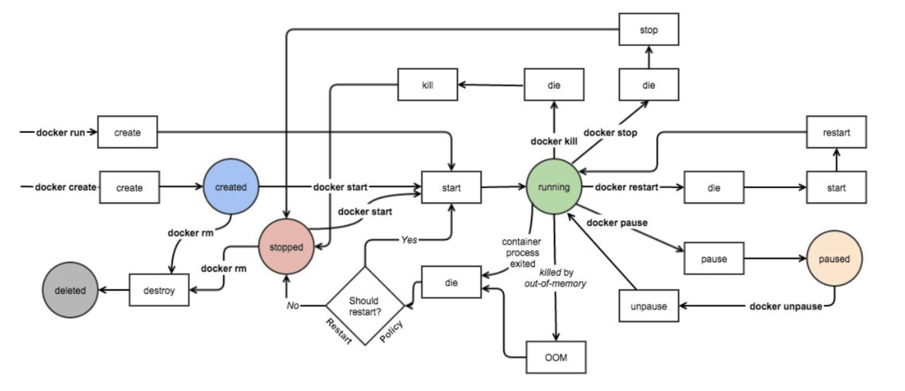
容器相关命令
[root@ubuntu1804 ~]#docker container Usage: docker container COMMAND Manage containers Commands: attach Attach local standard input, output, and error streams to a running container commit Create a new image from a container's changes cp Copy files/folders between a container and the local filesystem create Create a new container diff Inspect changes to files or directories on a container's filesystem exec Run a command in a running container export Export a container's filesystem as a tar archive inspect Display detailed information on one or more containers kill Kill one or more running containers logs Fetch the logs of a container ls List containers pause Pause all processes within one or more containers port List port mappings or a specific mapping for the container prune Remove all stopped containers rename Rename a container restart Restart one or more containers rm Remove one or more containers run Run a command in a new container start Start one or more stopped containers stats Display a live stream of container(s) resource usage statistics stop Stop one or more running containers top Display the running processes of a container unpause Unpause all processes within one or more containers update Update configuration of one or more containers wait Block until one or more containers stop, then print their exit codes Run 'docker container COMMAND --help' for more information on a command.
启动容器
docker run 可以启动容器，进入到容器，并随机生成容器ID和名称
启动第一个容器
范例: 运行docker 的 hello world
[root@centos8 ~]# docker run hello-world [root@centos8 ~]#docker ps -a
启动容器的流程
启动容器用法
帮助: man docker-run
命令格式:
docker run [选项] [镜像名] [shell命令] [参数] #选项: -i, --interactive Keep STDIN open even if not attached，通常和-t一起使用 -t, --tty 分配pseudo-TTY，通常和-i一起使用,注意对应的容器必须运行shell才支持进入 -d, --detach Run container in background and print container ID,台后运行，默认前台 --name string Assign a name to the container --h, --hostname string Container host name --rm Automatically remove the container when it exits -p, --publish list Publish a container's port(s) to the host -P, --publish-all Publish all exposed ports to random ports --dns list Set custom DNS servers --entrypoint string Overwrite the default ENTRYPOINT of the image --restart policy --privileged Give extended privileges to container -e, --env=[] Set environment variables --env-file=[] Read in a line delimited file of environment variablespolicy 说明
–restart 可以指定四种不同的policy
- no： Default is no，Do not automatically restart the container when it exits.
- on-failure[:maxretries]：on-failure[:max-retries] Restart only if the container exits with a non-zero exit status. Optionally, limit the number of restart retries the Docker daemon attempts.
- always：Always restart the container regardless of the exit status. When you specifyalways, the Docker daemon will try to restart the container indefinitely. The container will also always start on daemon startup, regardless of the current state of the container.
- unlessstopped：Always restart the container regardless of the exit status, but do not start it on daemon startup if the container has been put to a stopped state before.
注意: 容器启动后,如果容器内没有前台运行的进程,将自动退出停止
从容器内退出,并停止容器：exit
从容器内退出,且容器不停止：同时按三个键，ctrl+p+q
docker run –name a1 alpine
#1. 一次性运行容器中命 #启动的容器在执行完shell命令就退出，用于测试 [root@ubuntu1804 ~]#docker run busybox echo "Hello cici" Hello cici #2. 指定容器名称 #注意每个容器的名称要唯一 docker run --name a1 alpine #3. 运行交互式容器并退出 docker run -it docker.io/busybox sh / # exit #用exit退出后容器也停止 #4. 设置容器内的主机名 docker run -it --name a1 -h a1.xxx.org alpine / # hostname / # cat /etc/hosts / # cat /etc/resolv.conf #5. 一次性运行容器，退出后立即删除，用于测试 [root@ubuntu1804 ~]#docker run --rm alpine cat /etc/issue #6. 创建容器后直接进入并退出 退出两种方式: - exit 容器也停止 - 按ctrl+p+q 容器不停止
什么是守护式容器:
- 能够长期运行
- 无需交互式会话
- 适合运行应用程序和服务
范例: 启动前台守护式容器
[root@ubuntu1804 ~]#docker run nginx 172.17.0.4 - - [28/Jul/2020:13:12:49 +0000] "GET / HTTP/1.1" 200 612 "-" "Wget" "-" [root@ubuntu1804 ~]#docker run --rm --name b1 busybox wget -qO - 172.17.0.3
范例: 启动后台守护式容器
[root@ubuntu1804 ~]#docker run -d nginx #有些容器后台启动不会持续运行 [root@ubuntu1804 ~]#docker run -d --name alpine4 alpine [root@ubuntu1804 ~]#docker ps -a CONTAINER ID IMAGE COMMAND CREATED STATUS PORTS NAMES 3a05bbf66dac alpine "/bin/sh" 3 seconds ago Exited (0) 2 seconds ago alpine4 [root@ubuntu1804 ~]#docker run -td --name alpine5 alpine [root@ubuntu1804 ~]#docker ps -a CONTAINER ID IMAGE COMMAND CREATED STATUS PORTS NAMES 868b33da850c alpine "/bin/sh" 2 seconds ago Up 1 second alpine5
范例: 开机自动运行容器
#默认容器不会自动启动 #设置容器总是运行 [root@ubuntu1804 ~]#docker run -d --name nginx --restart=always -p 80:80 nginx
–privileged 选项
大约在0.6版，–privileged 选项被引入docker。使用该参数，container内的root拥有真正的root权限。
否则，container内的root只是外部的一个普通用户权限。privileged启动的容器，可以看到很多host上的设备，并且可以执行mount。甚至允许你在docker容器中启动docker容器。
范例: 使用–privileged 让容器获取 root 权限
#利用--privileged 选项运行容器 [root@centos8 ~]#podman run -it --privileged centos #可以看到宿主机的设备 [root@a6391a8f82e3 /]# lsblk NAME MAJ:MIN RM SIZE RO TYPE MOUNTPOINT sda 8:0 0 200G 0 disk |-sda1 8:1 0 1G 0 part |-sda2 8:2 0 100G 0 part |-sda3 8:3 0 50G 0 part |-sda4 8:4 0 1K 0 part [root@a6391a8f82e3 /]# mount /dev/sda3 /mnt [root@a6391a8f82e3 /]# touch /mnt/containter.txt [root@a6391a8f82e3 /]# echo container data > /mnt/containter.txt [root@a6391a8f82e3 /]# cat /mnt/containter.txt container data [root@a6391a8f82e3 /]# #在宿主机查看是否生成文件 [root@centos8 ~]#lsblk NAME MAJ:MIN RM SIZE RO TYPE MOUNTPOINT sda 8:0 0 200G 0 disk ├─sda1 8:1 0 1G 0 part /boot ├─sda2 8:2 0 100G 0 part / ├─sda3 8:3 0 50G 0 part /data ├─sda4 8:4 0 1K 0 part └─sda5 8:5 0 2G 0 part [SWAP] sr0 11:0 1 7G 0 rom [root@centos8 ~]#ll /data/containter.txt -rw-r--r-- 1 root root 25 Feb 29 12:26 /data/containter.txt [root@centos8 ~]#cat /data/containter.txt container data [root@centos8 ~]#echo host data >> /data/containter.txt [root@centos8 ~]#cat /data/containter.txt container data host data #在容器内可看文件是否发生变化 [root@a6391a8f82e3 /]# cat /mnt/containter.txt container data
范例: 运行docker官方文档容器
[root@centos8 ~]#podman run -it -d -p 4000:4000 docs/docker.github.io:latest [root@centos8 ~]#podman images docs/docker.github.io REPOSITORY TAG IMAGE ID CREATED SIZE docker.io/docs/docker.github.io latest ffd9131eeee7 2 days ago 1.99 GB #用浏览器访问http://localhost:4000/可以看到下面docker文档资料
查看容器信息
显示当前存在容器
格式
docker ps [OPTIONS] docker container ls [OPTIONS] 选项: -a, --all Show all containers (default shows just running) -q, --quiet Only display numeric IDs -s, --size Display total file sizes -f, --filter filter Filter output based on conditions provided -l, --latest Show the latest created container (includes all states) -n, --last int Show n last created containers (includes all states) (default -1)
范例:
#显示运行的容器 [root@ubuntu1804 ~]#docker ps #显示全部容器，包括退出状态的容器 [root@ubuntu1804 ~]#docker ps -a #只显示容器ID [root@ubuntu1804 ~]#docker ps -a -q d7ece7f62532 dcdf71d17177 #显示容器大小 [root@ubuntu1804 ~]#docker ps -a -s #显示最新创建的容器(停止的容器也能显示) [root@ubuntu1804 ~]#docker ps -l
范例: 显示指定状态的容器
docker ps -f 'status=exited
查看容器内的进程
docker top CONTAINER [ps OPTIONS]
查看容器资源使用情况
docker stats [OPTIONS] [CONTAINER...]
Display a live stream of container(s) resource usage statistics
Options:
-a, --all Show all containers (default shows just running)
--format string Pretty-print images using a Go template
--no-stream Disable streaming stats and only pull the first result
--no-trunc Do not truncate output
查看容器的详细信息
docker inspect 可以查看docker各种对象的详细信息,包括:镜像,容器,网络等
docker inspect [OPTIONS] NAME|ID [NAME|ID...] Options: -f, --format string Format the output using the given Go template -s, --size Display total file sizes if the type is container
范例:
[root@ubuntu1804 ~]#docker inspect 9997 选择性查看 [root@ubuntu1804 ~]#docker inspect -f "{{.Metadata}}" test:v1.0 {2020-07-24 21:56:42.247448035 +0800 CST} [root@ubuntu1804 ~]#docker inspect -f "{{.Created}}" c1 2020-07-24T13:37:11.006574248Z [root@ubuntu1804 ~]#docker inspect --format "{{.Created}}" c1 2020-07-24T13:37:11.006574248Z
删除容器
docker rm 可以删除容器，即使容器正在运行当中，也可以被强制删除掉
格式
docker rm [OPTIONS] CONTAINER [CONTAINER...] docker container rm [OPTIONS] CONTAINER [CONTAINER...] #选项: -f, --force Force the removal of a running container (uses SIGKILL)范例: -v, --volumes Remove the volumes associated with the container #删除停止的容器 docker container prune [OPTIONS] Options: --filter filter Provide filter values (e.g. 'until=<timestamp>') -f, --force Do not prompt for confirmation
范例: 删除所有容器
[root@ubuntu1804 ~]#docker rm -f `docker ps -a -q`
[root@ubuntu1804 ~]#docker ps -a -q | xargs docker rm -f
范例: 删除指定状态的容器
[root@ubuntu1804 ~]#docker rm `docker ps -qf status=exited`
容器的启动和停止
格式
docker start|stop|restart|pause|unpause 容器ID
批量正常启动或关闭所有容器
docker start $(docker ps -a -q) docker stop $(docker ps -a -q)
范例: 启动并进入容器
[root@ubuntu1804 ~]#docker run --name=c1 -it ubuntu bash root@539722b55b76:/# exit exit [root@ubuntu1804 ~]#docker ps -l CONTAINER ID IMAGE COMMAND CREATED STATUS PORTS NAMES 539722b55b76 ubuntu "bash" 4 seconds ago Exited (0) 1 second ago c1 [root@ubuntu1804 ~]#docker start c1 c1 [root@ubuntu1804 ~]#docker stop c1 c1 #启动并进入容器 [root@ubuntu1804 ~]#docker start -i c1 root@539722b55b76:/# exit exit
范例: 启动和停止所有容器
[root@ubuntu1804 ~]#docker stop `docker ps -a -q` [root@ubuntu1804 ~]#docker start `docker ps -a -q`
范例: 暂停和恢复容器
[root@ubuntu1804 ~]#docker run -d --name n1 nginx [root@ubuntu1804 ~]#docker pause n1 [root@ubuntu1804 ~]#docker unpause n1
给正在运行的容器发信号
docker kill 可以给容器发信号,默认号SIGKILL,即9信号
格式
docker kill [OPTIONS] CONTAINER [CONTAINER...] #选项: -s, --signal string Signal to send to the container (default "KILL")
进入正在运行的容器
使用attach命令
docker attach 容器名，不推荐使用
attach 类似于vnc，操作会在同一个容器的多个会话界面同步显示，所有使用此方式进入容器的操作都是同步显示的，且使用exit退出后容器自动关闭，不推荐使用，需要进入到有shell环境的容器
使用exec命令
在运行中的容器启动新进程,可以执行单次命令，以及进入容器测试环境使用此方式，使用exit退出,但容器还在运行，此为推荐方式
格式:
docker exec [OPTIONS] CONTAINER COMMAND [ARG...] 常用选项: -d, --detach Detached mode: run command in the background -e, --env list Set environment variables -i, --interactive Keep STDIN open even if not attached -t, --tty Allocate a pseudo-TTY #常见用法 docker exec -it 容器ID sh|bash
使用nsenter命令
nsenter命令需要通过PID进入到容器内部，且退出后仍然正常运行: 不过需要事先使用docker inspect 获取到容器的PID， 目前此方式使用较少，此工具来自于util-linux包
#安装nsenter命令 yum -y install util-linux #CentOS apt -y install util-linux #Ubuntu #获取容器的IP docker inspect -f "{{.NetworkSettings.IPAddress}}" 容器ID #获取到某个docker容器的PID，可以通过PID进入到容器内 docker inspect -f "{{.State.Pid}}" 容器ID nsenter -t PID -m -u -i -n -p
脚本方式
将nsenter命令写入到脚本进行调用，方便进入容器看日志或排错
如下:
cat docker-in.sh #!/bin/bash docker_in(){ NAME_ID=$1 PID=$(docker inspect -f "{{.State.Pid}}" ${NAME_ID}) nsenter -t ${PID} -m -u -i -n -p } docker_in $1
暴露所有容器端口
容器启动后,默认处于预定义的NAT网络中,所以外部网络的主机无法直接访问容器中网络服务
docker run -P 可以将事先容器预定义的所有端口映射宿主机的网卡的随机端口，默认从32768开始
使用随机端口 时,当停止容器后再启动可能会导致端口发生变化
-P , --publish-all= true | false默认为false #示例: docker run -P docker.io/nginx #映射容器所有暴露端口至随机本地端口
docker port 可以查看容器的端口映射关系
格式
docker port CONTAINER [PRIVATE_PORT[/PROTO]]
范例:
[root@centos7 ~]#docker port nginx-c1 443/tcp -> 0.0.0.0:8443 53/udp -> 0.0.0.0:8053 80/tcp -> 0.0.0.0:8080 [root@centos7 ~]#docker port nginx-c1 53/udp 0.0.0.0:8053
端口映射的本质就是利用NAT技术实现的
范例: 端口映射和iptables
#端口映射前的iptables规则 [root@ubuntu1804 ~]#iptables -S [root@ubuntu1804 ~]#iptables -S -t nat [root@ubuntu1804 ~]#iptables -S > pre.filter [root@ubuntu1804 ~]#iptables -S -t nat > pre.nat #实现端口映射 [root@ubuntu1804 ~]#docker run -d -P --name nginx1 nginx [root@ubuntu1804 ~]#docker exec -it nginx1 hostname -i 172.17.0.2 [root@ubuntu1804 ~]#docker port nginx1 80/tcp -> 0.0.0.0:32769 #端口映射后的iptables规则 [root@ubuntu1804 ~]#iptables -S #对比端口映射前后的变化 [root@ubuntu1804 ~]#iptables -S > post.filter [root@ubuntu1804 ~]#iptables -S -t nat > post.nat [root@ubuntu1804 ~]#diff pre.filter post.filter 13a14 > -A DOCKER -d 172.17.0.2/32 ! -i docker0 -o docker0 -p tcp -m tcp --dport 80 -j ACCEPT [root@ubuntu1804 ~]#diff pre.nat post.nat 8a9 > -A POSTROUTING -s 172.17.0.2/32 -d 172.17.0.2/32 -p tcp -m tcp --dport 80 -jMASQUERADE 9a11 > -A DOCKER ! -i docker0 -p tcp -m tcp --dport 32769 -j DNAT --to-destination 172.17.0.2:80 #本地和选程都可以访问 [root@ubuntu1804 ~]#curl 127.0.0.1:32769 #利用iptables 阻止同一个宿主机的其它容器CentOS8的访问 [root@ubuntu1804 ~]#iptables -I DOCKER -s 10.0.0.8 -d 172.17.0.2 -p tcp --dport 80 -j REJECT [root@ubuntu1804 ~]#iptables -S #测试访问 [root@centos8 ~]#curl 10.0.0.100:32769 curl: (7) Failed to connect to 10.0.0.100 port 32769: Connection refused [root@centos7 ~]#curl -I 10.0.0.100:32769 HTTP/1.1 200 OK
指定端口映射
docker run -p 可以将容器的预定义的指定端口映射到宿主机的相应端口
注意: 多个容器映射到宿主机的端口不能冲突，但容器内使用的端口可以相同
方式1: 容器80端口映射宿主机本地随机端口 docker run -p 80 --name nginx-test-port1 nginx 方式2: 容器80端口映射到宿主机本地端口81 docker run -p 81:80 --name nginx-test-port2 nginx 方式3: 宿主机本地IP:宿主机本地端口:容器端口 docker run -p 10.0.0.100:82:80 --name nginx-test-port3 docker.io/nginx 方式4: 宿主机本地IP:宿主机本地随机端口:容器端口，默认从32768开始 docker run -p 10.0.0.100::80 --name nginx-test-port4 docker.io/nginx 方式5: 宿主机本机ip:宿主机本地端口:容器端口/协议，默认为tcp协议 docker run -p 10.0.0.100:83:80/udp --name nginx-test-port5 docker.io/nginx 方式6: 一次性映射多个端口+协议 docker run -p 8080:80/tcp -p 8443:443/tcp -p 53:53/udp --name nginx-test-port6 nginx
查看容器的日志
docker logs 可以查看容器中运行的进程在控制台输出的日志信息
格式
docker logs [OPTIONS] CONTAINER
选项:
--details Show extra details provided to logs
-f, --follow Follow log output
--since string Show logs since timestamp (e.g. 2013-01-02T13:23:37) or relative (e.g. 42m for 42 minutes)
--tail string Number of lines to show from the end of the logs (default "all")
-t, --timestamps Show timestamps
--until string Show logs before a timestamp (e.g. 2013-01-02T13:23:37) or relative (e.g. 42m for 42 minutes)
范例: 查看容器日志
[root@ubuntu1804 ~]#docker run -d alpine /bin/sh -c 'i=1;while true;do echo hello$i;let i++;sleep 2;done' [root@ubuntu1804 ~]#docker logs 5126 hello1 hello2 hello3 hello4 hello5 hello6 [root@ubuntu1804 ~]#docker logs --tail 3 5126 hello8 hello9 hello10 #显示时间 [root@ubuntu1804 ~]#docker logs --tail 0 -t 5126 2020-02-25T13:30:07.321390731Z hello17 #持续跟踪 [root@ubuntu1804 ~]#docker logs -f 5126
传递运行命令
容器需要有一个前台运行的进程才能保持容器的运行，通过传递运行参数是一种方式，另外也可以在构建镜像的时候指定容器启动时运行的前台命令
容器里的PID为1的守护进程的实现方式
- 服务类: 如: Nginx，Tomcat，Apache ，但服务不能停
- 命令类: 如: tail -f /etc/hosts ，主要用于测试环境，注意: 不要tail -f <服务访问日志> 会产生不必要的磁盘IO
范例:
docker run -d alpine tail -f /etc/hosts
容器内部的hosts文件
容器会自动将容器的ID加入自已的/etc/hosts文件中，并解析成容器的IP
[root@ubuntu1804 ~]#docker run -it centos /bin/bash [root@598262a87c46 /]# cat /etc/hosts 127.0.0.1 localhost ::1 localhost ip6-localhost ip6-loopback fe00::0 ip6-localnet ff00::0 ip6-mcastprefix ff02::1 ip6-allnodes ff02::2 ip6-allrouters 172.17.0.2 598262a87c46 #默认会将实例的ID 添加到自己的hosts文件 [root@598262a87c46 /]# hostname 598262a87c46 [root@598262a87c46 /]# ping 598262a87c46 PING 598262a87c46 (172.17.0.2) 56(84) bytes of data. 64 bytes from 598262a87c46 (172.17.0.2): icmp_seq=1 ttl=64 time=0.118 ms 64 bytes from 598262a87c46 (172.17.0.2): icmp_seq=2 ttl=64 time=0.085 ms
范例: 修改容器的 hosts文件
docker run -it --rm --add-host www.xxx.com:6.6.6.6 --add-host www.ttt.org:8.8.8.8 busybox / # cat /etc/hosts 127.0.0.1 localhost ::1 localhost ip6-localhost ip6-loopback fe00::0 ip6-localnet ff00::0 ip6-mcastprefix ff02::1 ip6-allnodes ff02::2 ip6-allrouters 6.6.6.6 www.xxx.com 8.8.8.8 www.ttt.org 172.17.0.2 449bf0468efd
指定容器DNS
容器的dns服务器，默认采用宿主机的dns 地址，可以用下面方式指定其它的DNS地址
- 将dns地址配置在宿主机
- 在容器启动时加选项 –dns=x.x.x.x
- 在/etc/docker/daemon.json 文件中指定
#范例: 容器的DNS默认从宿主机的DNS获取 [root@ubuntu1804 ~]#systemd-resolve --status|grep -A1 -i "DNS Servers" DNS Servers: 180.76.76.76 223.6.6.6 [root@ubuntu1804 ~]#docker run -it --rm centos bash [root@1364f98c4227 /]# cat /etc/resolv.conf nameserver 180.76.76.76 nameserver 223.6.6.6 search xxx.com xxx.org [root@1364f98c4227 /]# exit exit #范例: 指定DNS地址 [root@ubuntu1804 ~]#docker run -it --rm --dns 1.1.1.1 --dns 8.8.8.8 centos bash #范例: 指定domain名 [root@ubuntu1804 ~]#docker run -it --rm --dns 1.1.1.1 --dns 8.8.8.8 --dns-search a.com --dns-search b.com busybox / # cat /etc/resolv.conf search a.com b.com nameserver 1.1.1.1 nameserver 8.8.8.8 #范例: 配置文件指定DNS和搜索domain名 [root@ubuntu1804 ~]#cat /etc/docker/daemon.json { "storage-driver": "overlay2", "registry-mirrors": ["https://si7y70hh.mirror.aliyuncs.com"], "dns" : [ "114.114.114.114", "119.29.29.29"], "dns-search": [ "xxx.com", "xxx.org"] } [root@ubuntu1804 ~]#systemctl restart docker [root@ubuntu1804 ~]#docker run -it --rm centos bash [root@7a2d8fac6f6b /]# cat /etc/resolv.conf #用--dns指定优先级更高 [root@ubuntu1804 ~]#docker run -it --rm --dns 8.8.8.8 --dns 8.8.4.4 centos bash [root@80ffe3547b87 /]# cat /etc/resolv.conf search xxx.com xxx.org nameserver 8.8.8.8 nameserver 8.8.4.4
容器内和宿主机之间复制文件
docker cp [OPTIONS] CONTAINER:SRC_PATH DEST_PATH|-
docker cp [OPTIONS] SRC_PATH|- CONTAINER:DEST_PATH
Options:
-a, --archive Archive mode (copy all uid/gid information)
-L, --follow-link Always follow symbol link in SRC_PATH
范例:
#将容器内文件复制到宿主机 [root@ubuntu1804 ~]#docker run -itd centos 1311fe67e6708dac71c01f7d1752a6dcb5e85c2f1fa4ac2efcef9edfe4fb6bb5 [root@ubuntu1804 ~]#docker cp -a 1311:/etc/centos-release . [root@ubuntu1804 ~]#cat centos-release CentOS Linux release 8.1.1911 (Core) #将宿主机文件复制到容器内 [root@ubuntu1804 ~]#docker cp /etc/issue 1311:/root/ [root@ubuntu1804 ~]#docker exec 1311 cat /root/issue Ubuntu 18.04.1 LTS \n \l
使用 systemd 控制容器运行
[root@ubuntu1804 ~]#cat /lib/systemd/system/hello.service [Unit] Description=Hello World After=docker.service Requires=docker.service [Service] TimeoutStartSec=0 ExecStartPre=-/usr/bin/docker kill busybox-hello ExecStartPre=-/usr/bin/docker rm busybox-hello ExecStartPre=/usr/bin/docker pull busybox ExecStart=/usr/bin/docker run --name busybox-hello busybox /bin/sh -c "while true; do echo Hello World; sleep 1; done" ExecStop=/usr/bin/docker kill busybox-hello [Install] WantedBy=multi-user.target [root@ubuntu1804 ~]#systemctl daemon-reload [root@ubuntu1804 ~]#systemctl enable --now hello.service
传递环境变量
有些容器运行时，需要传递变量，可以使用 -e <参数> 或 –env-file <参数文件> 实现
范例: 传递变量创建MySQL
变量参考链接: https://hub.docker.com/_/mysql
#MySQL容器运行时需要指定root的口令 docker run --name mysql-test1 -v /data/mysql:/var/lib/mysql -e MYSQL_ROOT_PASSWORD=123456 -e MYSQL_DATABASE=wordpress -e MYSQL_USER=wpuser -e MYSQL_PASSWORD=123456 -d -p 3306:3306 mysql:5.7.30 docker run --name mysql-test2 -v /root/mysql/:/etc/mysql/conf.d -v /data/mysql2:/var/lib/mysql --envfile=env.list -d -p 3307:3306 mysql:5.7.30 [root@ubuntu1804 ~]#cat mysql/mysql-test.cnf [mysqld] server-id=100 log-bin=mysql-bin [root@ubuntu1804 ~]#cat env.list MYSQL_ROOT_PASSWORD=123456 MYSQL_DATABASE=wordpress MYSQL_USER=wpuser MYSQL_PASSWORD=wppass
Docker 镜像制作和管理
Docker 镜像说明
Docker 镜像中有没有内核
从镜像大小上面来说，一个比较小的镜像只有1MB多点或几MB，而内核文件需要几十MB， 因此镜像里面是没有内核的，镜像在被启动为容器后将直接使用宿主机的内核，而镜像本身则只提供相应的
rootfs，即系统正常运行所必须的用户空间的文件系统，比如: /dev/，/proc，/bin，/etc等目录，容器当中/boot目录是空的，而/boot当中保存的就是与内核相关的文件和目录。
为什么没有内核
由于容器启动和运行过程中是直接使用了宿主机的内核，不会直接调用物理硬件，所以也不会涉及到硬件驱动，因此也无需容器内拥有自已的内核和驱动。而如果使用虚拟机技术，对应每个虚拟机都有自已独立的内核
容器中的程序后台运行会导致此容器启动后立即退出
Docker容器如果希望启动后能持续运行,就必须有一个能前台持续运行的进程，如果在容器中启动传统的服务，如:httpd,php-fpm等均为后台进程模式运行,就导致 docker 在前台没有运行的应用,这样的容器启动后会立即退出。所以一般会将服务程序以前台方式运行，对于有一些可能不知道怎么实现前台运行的程序,只需要在你启动的该程序之后添加类似于 tail ，top 这种可以前台运行的程序即可. 比较常用的方法，如 `tail -f /etc/hosts` 。
范例:
#httpd ENTRYPOINT [ "/usr/sbin/apache2" ] CMD ["-D", "FOREGROUND"] #nginx ENTRYPOINT [ "/usr/sbin/nginx", "-g", "daemon off;" ] #用脚本运行容器 cat run_haproxy.sh #!/bin/bash haproxy -f /etc/haproxy/haproxy.cfg tail -f /etc/hosts tail -n1 Dockerfile CMD ["run_haproxy.sh"]
docker 镜像生命周期
制作镜像方式
Docker 镜像制作类似于虚拟机的镜像（模版）制作，即按照公司的实际业务需求将需要安装的软件、相关配置等基础环境配置完成，然后将其做成镜像，最后再批量从镜像批量生成容器实例，这样可以极大的简化相同环境的部署工作.
Docker的镜像制作分为手动制作（基于容器）和自动制作(基于DockerFile)，企业通常都是基于Dockerfile制作镜像
docker commit #通过修改现有容器,将之手动构建为镜像 docker build #通过Dockerfile文件,批量构建为镜像
将现有容器通过 docker commit 手动构建镜像
基于容器手动制作镜像步骤
docker commit 格式
docker commit [OPTIONS] CONTAINER [REPOSITORY[:TAG]] #选项 -a, --author string Author (e.g., "John Hannibal Smith <hannibal@ateam.com>") -c, --change list Apply Dockerfile instruction to the created image -m, --message string Commit message -p, --pause Pause container during commit (default true) #说明: 制作镜像和CONTAINER状态无关,停止状态也可以制作镜像 如果没有指定[REPOSITORY[:TAG]],REPOSITORY和TAG都为<none> 提交的时候标记TAG号: 生产当中常用，后期可以根据TAG标记创建不同版本的镜像以及创建不同版本的容器
基于容器手动制作镜像步骤具体如下:
- 下载一个系统的官方基础镜像，如: CentOS 或 Ubuntu
- 基于基础镜像启动一个容器,并进入到容器
- 在容器里面做配置操作
- 安装基础命令
- 配置运行环境
- 安装服务和配置服务
- 放业务程序代码
- 安装基础命令
- 提交为一个新镜像 docker commit
- 基于自己的的镜像创建容器并测试访问
实战案例: 基于 busybox 制作 httpd 镜像
[root@ubuntu1804 ~]#docker run -it --name b1 busybox / # ls bin dev etc home proc root sys tmp usr var / # mkdir /data/html -p / # echo httpd website in busybox > /data/html/index.html #格式1 [root@ubuntu1804 ~]#docker commit -a "user1<root@xxx.com>" -c 'CMD /bin/httpd -fv -h /data/html' -c "EXPOSE 80" b1 httpd-busybox:v1.0 #格式2 [root@ubuntu1804 ~]#docker commit -a "user1<root@xxx.com>" -c 'CMD ["/bin/httpd", "-f", "-v","-h", "/data/html"]' -c "EXPOSE 80" b1 httpdbusybox:v1.0 [root@ubuntu1804 ~]#docker run -d -P --name httpd01 httpd-busybox:v1.0 #对应格式1 [root@ubuntu1804 ~]#docker inspect -f "{{.Config.Cmd}}" httpd01 [/bin/sh -c /bin/httpd -f -h /data/html] #对应格式2 [root@ubuntu1804 ~]#docker inspect -f "{{.Config.Cmd}}" httpd01 [/bin/httpd -f -h /data/html] #再次制作镜像v2.0版 [root@ubuntu1804 ~]#docker commit -a "user1<root@xxx.com>" b1 httpdbusybox:v2.0 [root@ubuntu1804 ~]#docker run -d --name web2 -p 81:80 httpd-busybox:v2.0 /bin/httpd -fv -h /data/html
利用 DockerFile 文件执行 docker build 自动构建镜像
Dockfile 使用详解
Dockerfile 介绍
DockerFile 是一种被Docker程序解释执行的脚本，由一条条的命令组成的，每条命令对应linux下面的一条命令，Docker程序将这些DockerFile指令再翻译成真正的linux命令，其有自己的书写方式和支持的命令，Docker程序读取DockerFile并根据指令生成Docker镜像，相比手动制作镜像的方式，DockerFile更能直观的展示镜像是怎么产生的，有了DockerFile，当后期有额外的需求时，只要在之前的DockerFile添加或者修改响应的命令即可重新生成新的Docker镜像，避免了重复手动制作镜像的麻烦,类似与shell脚本一样,可以方便高效的制作镜像
Docker守护程序 Dockerfile 逐一运行指令，如有必要，将每个指令的结果提交到新镜像，然后最终输出新镜像的ID。Docker守护程序将自动清理之前发送的上下文请注意，每条指令都是独立运行的，并会导致创建新镜像，比如 RUN cd /tmp 对下一条指令不会有任何影响。
Docker将尽可能重用中间镜像层（缓存），以显著加速 docker build 命令的执行过程，这由 Using cache 控制台输出中的消息指示
Dockerfile 镜像制作和使用流程
Dockerfile文件的制作镜像的分层结构
范例:
#按照业务类型或系统类型等方式划分创建目录环境，方便后期镜像比较多的时候进行分类 [root@ubuntu1804 ~]#mkdir /data/dockerfile/{web/{nginx,apache,tomcat,jdk},system/{centos,ubuntu,alpine,debian}} -p [root@ubuntu1804 ~]#tree /data/dockerfile/ /data/dockerfile ├── system │ ├── alpine │ ├── centos │ ├── debian │ └── ubuntu └── web ├── apache ├── jdk ├── nginx └── tomcat 10 directories, 0 files
Dockerfile 文件格式
Dockerfile 是一个有特定语法格式的文本文件
dockerfile 官方说明: https://docs.docker.com/engine/reference/builder/
帮助: man 5 dockerfile
Dockerfile 文件说明
- 每一行以Dockerfile的指令开头，指令不区分大小写，但是惯例使用大写
- 使用 # 开始作为注释
- 每一行只支持一条指令，每条指令可以携带多个参数
- 指令按文件的顺序从上至下进行执行
- 每个指令的执行会生成一个新的镜像层，为了减少分层和镜像大小，尽可能将多条指令合并成一条指令
- 制作镜像一般可能需要反复多次，每次执行dockfile都按顺序执行，从头开始，已经执行过的指令已经缓存，不需要再执行，如果后续有一行新的指令没执行过，其往后的指令将会重新执行，所以为加速镜像制作，将最常变化的内容放下dockerfile的文件的后面
Dockerfile 相关指令
dockerfile 文件中的常见指令:
ADD COPY ENV EXPOSE FROM LABEL STOPSIGNAL USER VOLUME WORKDIR
- FROM: 指定基础镜像
定制镜像，需要先有一个基础镜像，在这个基础镜像上进行定制。
FROM 就是指定基础镜像，此指令通常必需放在Dockerfile文件第一个非注释行。后续的指令都是运行于此基准镜像所提供的运行环境
基础镜像可以是任何可用镜像文件，默认情况下，docker build会在docker主机上查找指定的镜像文件，在其不存在时，则会从Docker Hub Registry上拉取所需的镜像文件.如果找不到指定的镜像文件，docker build会返回一个错误信息
如何选择合适的镜像呢？
对于不同的软件官方都提供了相关的docker镜像，比如: nginx、redis、mysql、httpd、tomcat等服务类的镜像，也有操作系统类，如: centos、ubuntu、debian等。建议使用官方镜像，比较安全。
格式:
FROM [--platform=<platform>] <image> [AS <name>] FROM [--platform=<platform>] <image>[:<tag>] [AS <name>] FROM [--platform=<platform>] <image>[@<digest>] [AS <name>] #说明: --platform 指定镜像的平台，比如: linux/amd64, linux/arm64, or windows/amd64 tag 和 digest是可选项，如果不指定，默认为latest
说明: 关于scratch 镜像
FROM scratch 参考链接: https://hub.docker.com/_/scratch?tab=description https://docs.docker.com/develop/develop-images/baseimages/ 该镜像是一个空的镜像，可以用于构建busybox等超小镜像，可以说是真正的从零开始构建属于自己的镜像 该镜像在构建基础镜像（例如debian和busybox）或超最小镜像（仅包含一个二进制文件及其所需内容，例如:hello-world）的上下文中最有用。范例:
FROM scratch #所有镜像的起源镜像，相当于Object类 FROM ubuntu FROM ubuntu:bionic FROM debian:buster-slim
- LABEL: 指定镜像元数据
可以指定镜像元数据，如: 镜像作者等
LABEL <key>=<value> <key>=<value> <key>=<value> ...
范例:
LABEL "com.example.vendor"="ACME Incorporated" LABEL com.example.label-with-value="foo" LABEL version="1.0" LABEL description="This text illustrates \ that label-values can span multiple lines."
一个镜像可以有多个label ,还可以写在一行中,即多标签写法,可以减少镜像的的大小
范例: 多标签写法
#一行格式 LABEL multi.label1="value1" multi.label2="value2" other="value3" #多行格式 LABEL multi.label1="value1" \ multi.label2="value2" \ other="value3"
docker inspect 命令可以查看LABEL
MAINTAINER: 指定维护者信息
此指令已过时，用LABEL代替
MAINTAINER <name>
范例:
MAINTAINER xxx <root@xxx.com> #用LABEL代替 LABEL maintainer="xxx <root@xxx.com>"
- RUN: 执行 shell命令
RUN 指令用来在构建镜像阶段需要执行 FROM 指定镜像所支持的Shell命令。
通常各种基础镜像一般都支持丰富的shell命令
注意: RUN 可以写多个，每一个RUN指令都会建立一个镜像层，所以尽可能合并成一条指令,比如将多个shell命令通过 && 连接一起成为在一条指令
每个RUN都是独立运行的,和前一个RUN无关
#shell 格式: 相当于 /bin/sh -c <命令> 此种形式支持环境变量 RUN <命令> #exec 格式: 此种形式不支持环境变量,注意:是双引号,不能是单引号 RUN ["可执行文件", "参数1", "参数2"] #exec格式可以指定其它shell RUN ["/bin/bash","-c","echo hello user1"]
说明:
shell格式中，<command>通常是一个shell命令，且以"/bin/sh -c”来运行它，这意味着此进程在容器中的PID不为1，不能接收Unix信号，因此，当使用docker stop <container>命令停止容器时，此进程接收不到SIGTERM信号 exec格式中的参数是一个JSON格式的数组，其中<executable>为要运行的命令，后面的<paramN>为传递给命令的选项或参数;然而，此种格式指定的命令不会以"/bin/sh -c"来发起，因此常见的shell操作如变量替换以及通配符(?,*等)替换将不会进行;不过，如果要运行的命令依赖于此shell特性的话，可以将其替换为类似下面的格式。 RUN ["/bin/bash", "-c", "<executable>", "<param1>"]
范例:
RUN echo '<h1>Hello, Docker!</h1>' > /usr/share/nginx/html/index.html RUN ["/bin/bash", "-c", "echo hello world"] RUN yum -y install epel-release \ && yum -y install nginx \ && rm -rf /usr/share/nginx/html/* && echo "<h1> docker test nginx </h1>" > /usr/share/nginx/html/index.html
范例: 多个 前后RUN 命令独立无关和shell命令不同
#world.txt并不存放在/app内 RUN cd /app RUN echo "hello" > world.txt
- ENV: 设置环境变量
ENV 可以定义环境变量和值，会被后续指令(如:ENV,ADD,COPY,RUN等)通过\(KEY或\){KEY}进行引用，并在容器运行时保持
#变量赋值格式1 ENV <key> <value> #此格式只能对一个key赋值,<key>之后的所有内容均会被视作其<value>的组成部分 #变量赋值格式2 ENV <key1>=<value1> <key2>=<value2> \ #此格式可以支持多个key赋值,定义多个变量建议使用,减少镜像层 <key3>=<value3> ... #如果<value>中包含空格，可以以反斜线\进行转义，也可通过对<value>加引号进行标识;另外，反斜线也可用于续行 #只使用一次变量 RUN <key>=<value> <command> #引用变量 RUN $key ..... #变量支持高级赋值格式 ${key:-word} ${kye:+word}
如果运行容器时如果需要修改变量,可以执行下面通过基于 exec 机制实现
注意: 下面方式只影响容器运行时环境,而不影响构建镜像的过程,即只能覆盖docker run时的环境变量,而不会影响docker build时环境变量的值
docker run -e|--env <key>=<value> #说明 -e, --env list #Set environment variables --env-file filename #Read in a file of environment variables范例:
示例: 两种格式功能相同
#格式1 ENV myName="John Doe" myDog=Rex\ The\ Dog \ myCat=fluffy #格式2 ENV myName John Doe ENV myDog Rex The Dog ENV myCat fluffy
范例:
ENV VERSION=1.0 DEBUG=on NAME="Happy Feet" ENV PG_MAJOR 9.3 ENV PG_VERSION 9.3.4 RUN curl -SL http://example.com/postgres-$PG_VERSION.tar.xz | tar -xJC /usr/src/postgress && … ENV PATH /usr/local/postgres-$PG_MAJOR/bin:$PATH
范例：
[root@ubuntu1804 dockerfile]#cat Dockerfile FROM busybox LABEL maintainer="xxx <root@xxx.com>" ENV NAME user1 RUN touch $NAME.txt [root@ubuntu1804 dockerfile]#cat build.sh #!/bin/bash # TAG=$1 docker build -t test:$TAG . [root@ubuntu1804 dockerfile]#./build.sh v5.0 [root@ubuntu1804 dockerfile]#docker run --rm --name c1 test:v5.0 env PATH=/usr/local/sbin:/usr/local/bin:/usr/sbin:/usr/bin:/sbin:/bin HOSTNAME=d4e1f89aca71 NAME=user1 cici HOME=/root [root@ubuntu1804 dockerfile]#docker run --rm -e NAME=cici --name c1 test:v5.0 env PATH=/usr/local/sbin:/usr/local/bin:/usr/sbin:/usr/bin:/sbin:/bin HOSTNAME=b23500aa100d NAME=cici HOME=/root
- COPY: 复制文本
复制本地宿主机的 到容器中的 。
COPY [--chown=<user>:<group>] <src>... <dest> COPY [--chown=<user>:<group>] ["<src>",... "<dest>"] #路径中有空白字符时,建议使用此格式
说明:
- 可以是多个,可以使用通配符，通配符规则满足Go的filepath.Match 规则filepath.Match 参考链接: https://golang.org/pkg/path/filepath/#Match
- 必须是build上下文中的路径(为 Dockerfile 所在目录的相对路径）， 不能是其父目录中的文件
- 如果是目录，则其内部文件或子目录会被递归复制， 但目录自身不会被复制
- 如果指定了多个, 或在中使用了通配符，则必须是一个目录， 且必须以 / 结尾
- 可以是绝对路径或者是 WORKDIR 指定的相对路径
- 使用 COPY 指令，源文件的各种元数据都会保留。比如读、写、执行权限、文件变更时间等
- 如果事先不存在，它将会被自动创建，这包括其父目录路径,即递归创建目录
范例:
COPY hom* /mydir/ COPY hom?.txt /mydir/
- 可以是多个,可以使用通配符，通配符规则满足Go的filepath.Match 规则filepath.Match 参考链接: https://golang.org/pkg/path/filepath/#Match
- ADD: 复制和解包文件
该命令可认为是增强版的COPY，不仅支持COPY，还支持自动解缩。可以将复制指定的 到容器中的
ADD [--chown=<user>:<group>] <src>... <dest> ADD [--chown=<user>:<group>] ["<src>",... "<dest>"]如果是目录，只复制目录中的内容，而非目录本身
说明:
- 可以是Dockerfile所在目录的一个相对路径；也可是一个 URL；还可是一个 tar 文件（自动解压）
- 可以是绝对路径或者是 WORKDIR 指定的相对路径
- 如果是一个 URL ，下载后的文件权限自动设置为 600
- 如果为URL且不以/结尾，则指定的文件将被下载并直接被创建为,如果以 / 结尾，则文件名URL指定的文件将被直接下载并保存为/< filename>
- 如果是一个本地文件系统上的打包文件,如: gz, bz2 ,xz ，它将被解包 ，其行为类似于"tar -x"命令,但是通过URL获取到的tar文件将不会自动展开
- 如果有多个，或其间接或直接使用了通配符，则必须是一个以/结尾的目录路径;如果不以/结尾，则其被视作一个普通文件，的内容将被直接写入到
范例:
ADD test relativeDir/ # adds "test" to `WORKDIR`/relativeDir/ ADD test /absoluteDir/ # adds "test" to /absoluteDir/ ADD --chown=55:mygroup files* /somedir/ ADD --chown=bin files* /somedir/ ADD --chown=1 files* /somedir/ ADD --chown=10:11 files* /somedir/ ADD ubuntu-xenial-core-cloudimg-amd64-root.tar.gz /
- 可以是Dockerfile所在目录的一个相对路径；也可是一个 URL；还可是一个 tar 文件（自动解压）
- CMD: 容器启动命令
一个容器中需要持续运行的进程一般只有一个,CMD 用来指定启动容器时默认执行的一个命令，且其运行结束后,容器也会停止,所以一般CMD 指定的命令为持续运行且为前台命令.
- 如果docker run没有指定任何的执行命令或者dockerfile里面也没有ENTRYPOINT，那么开启容器时就会使用执行CMD指定的默认的命令
- 前面介绍过的 RUN 命令是在构建镜像进执行的命令,注意二者的不同之处
- 每个 Dockerfile 只能有一条 CMD 命令。如指定了多条，只有最后一条被执行
- 如果用户启动容器时用 docker run xxx 指定运行的命令，则会覆盖 CMD 指定的命令
- 如果 Dockerfile 中有 ENTRYPOINT 命令，CMD 充当其默认参数
# 使用 exec 执行，推荐方式，第一个参数必须是命令的全路径,此种形式不支持环境变量 CMD ["executable","param1","param2"] # 在 /bin/sh 中执行，提供给需要交互的应用；此种形式支持环境变量 CMD command param1 param2 # 提供给 ENTRYPOINT 命令的默认参数 CMD ["param1","param2"]
范例:
CMD ["nginx", "-g", "daemon off;"]
范例:
cat Dockerfile FROM ubuntu:18.04 LABEL maintainer="xxx <root@xxx.com>" RUN apt update \ && apt -y install curl \ && rm -rf /var/lib/apt/lists/* CMD [ "curl", "-s","https://ip.cn"] [root@centos8 ubuntu]#podman run 9b {"ip": "111.199.187.36", "country": "北京市", "city": "联通"} #cat /etc/etc/issue覆盖了curl命令 [root@centos8 ubuntu]#podman run 9b cat /etc/issue Ubuntu 18.04.4 LTS \n \l
- 如果docker run没有指定任何的执行命令或者dockerfile里面也没有ENTRYPOINT，那么开启容器时就会使用执行CMD指定的默认的命令
- ENTRYPOINT: 入口点
功能类似于CMD，配置容器启动后执行的命令及参数
# 使用 exec 执行 ENTRYPOINT ["executable", "param1", "param2"] # shell中执行 ENTRYPOINT command param1 param2
- ENTRYPOINT 不能被 docker run 提供的参数覆盖，而是追加,即如果docker run 命令有参数，那么参数全部都会作为ENTRYPOINT的参数
- 如果docker run 后面没有额外参数，但是dockerfile中的CMD里有（即上面CMD的第三种用法），即Dockerfile中即有CMD也有ENTRYPOINT,那么CMD的全部内容会作为ENTRYPOINT的参数
- 如果docker run 后面有额外参数，同时Dockerfile中即有CMD也有ENTRYPOINT,那么docker run后面的参数覆盖掉CMD参数内容,最终作为ENTRYPOINT的参数
- 可以通过docker run –entrypoint string 参数在运行时替换,注意string不要加空格
- 使用CMD要在运行时重新写命令本身,然后在后面才能追加运行参数，ENTRYPOINT则可以运行时无需重写命令就可以直接接受新参数
- 每个 Dockerfile 中只能有一个 ENTRYPOINT，当指定多个时，只有最后一个生效
范例:
[root@ubuntu1804 ~]#docker run -it --entrypoint cat alpine /etc/issue Welcome to Alpine Linux 3.12 Kernel \r on an \m (\l) [root@ubuntu1804 dockerfile]#cat Dockerfile FROM ubuntu:18.04 RUN apt update \ && apt -y install curl \ && rm -rf /var/lib/apt/lists/* ENTRYPOINT [ "curl", "-s","https://ip.cn"] [root@centos8 dockerfile]#podman run -it --rm f68e006 {"ip": "111.199.187.36", "country": "北京市", "city": "联通"} #追加-i参数 [root@centos8 dockerfile]#podman run -it --rm f68e006 -i HTTP/2 200 date: Sun, 23 Feb 2020 08:05:19 GMT content-type: application/json; charset=UTF-8 set-cookie: __cfduid=d4a22496ea6f3b2861763354f8ca600711582445119; expires=Tue, 24-Mar-20 08:05:19 GMT; path=/; domain=.ip.cn; HttpOnly; SameSite=Lax cf-cache-status: DYNAMIC expect-ct: max-age=604800, report-uri="https://report-uri.cloudflare.com/cdncgi/beacon/expect-ct" alt-svc: h3-25=":443"; ma=86400, h3-24=":443"; ma=86400, h3-23=":443"; ma=86400 server: cloudflare cf-ray: 5697b1ac1862eb41-LAX {"ip": "111.199.187.36", "country": "北京市", "city": "联通"}
范例: 利用脚本实现指定环境变量动态生成配置文件内容
[root@ubuntu1804 ~]#echo 'Nginx Website in Dockerfile' > index.html [root@ubuntu1804 ~]#cat Dockerfile FROM nginx:1.16-alpine LABEL maintainer="xxx <root@xxx.com>" ENV DOC_ROOT='/data/website/' ADD index.html ${DOC_ROOT} ADD entrypoint.sh /bin/ EXPOSE 80/tcp 8080 #HEALTHCHECK --start-period=3s CMD wget -0 - -q http://${IP:-0.0.0.0}: {PORT:-80}/ CMD ["/usr/sbin/nginx","-g", "daemon off;"] #CMD指令的内容都成为了ENTRYPOINT的参数 ENTRYPOINT [ "/bin/entrypoint.sh"] [root@ubuntu1804 ~]#cat entrypoint.sh #!/bin/sh cat > /etc/nginx/conf.d/www.conf <<EOF server { server_name ${HOSTNAME}; listen ${IP:-0.0.0.0}:${PORT:-80}; root ${DOC_ROOT:-/usr/share/nginx/html}; } EOF exec "$@" [root@ubuntu1804 ~]#chmod +x entrypoint.sh [root@ubuntu1804 ~]#docker build -t nginx:v1.0 . [root@ubuntu1804 ~]#docker run --name n1 --rm -P -e "PORT=8080" -e "HOSTNAME=www.xxx.org" nginx:v1.0
- ENTRYPOINT 不能被 docker run 提供的参数覆盖，而是追加,即如果docker run 命令有参数，那么参数全部都会作为ENTRYPOINT的参数
- ARG: 构建参数
ARG指令在build 阶段指定变量,和ENV不同的是，容器运行时不会存在这些环境变量
ARG <name>[=<default value>]说明: ARG 和 FROM
如果和ENV同名，ENV覆盖ARG变量
可以用 docker build –build-arg <参数名>=<值> 来覆盖
范例:
[root@ubuntu1804 ~]#cat Dockerfile FROM busybox ARG author="user1 <root@xxx.com>" LABEL maintainer="${author}" [root@ubuntu1804 ~]#docker build --build-arg author="xxx@qq.com" -t busybox:v1.0 .
说明：ARG 和 FROM
#FROM指令支持由第一个FROM之前的任何ARG指令声明的变量 #示例: ARG CODE_VERSION=latest FROM base:${CODE_VERSION} CMD /code/run-app FROM extras:${CODE_VERSION} CMD /code/run-extras #在FROM之前声明的ARG在构建阶段之外，所以它不能在FROM之后的任何指令中使用。 要使用在第一个FROM之前声明的ARG的默认值，请在构建阶段内使用没有值的ARG指令 #示例: ARG VERSION=latest FROM busybox:$VERSION ARG VERSION RUN echo $VERSION > image_version
- VOLUME: 匿名卷
在容器中创建一个可以从本地主机或其他容器挂载的挂载点，一般用来存放数据库和需要保持的数据等，一般会将宿主机上的目录挂载至VOLUME 指令指定的容器目录。即使容器后期被删除，此宿主机的目录仍会保留，从而实现容器数据的持久保存。
宿主机目录为
/var/lib/docker/volumes/<volume_id>/_data
语法:
VOLUME <容器内路径> VOLUME ["<容器内路径1>", "<容器内路径2>"...]
注意:
- Dockerfile中的VOLUME实现的是匿名数据卷,无法指定宿主机路径和容器目录的挂载关系
- 通过docker rm -fv <容器ID> 可以删除容器的同时删除VOLUME指定的卷
范例: 在容器创建两个/data/ ,/data2的挂载点
VOLUME [ "/data1","/data2" ]
范例:
[root@centos8 ~]#cat /data/dockerfile/system/alpine/Dockerfile FROM alpine:3.11 LABEL maintainer="xxx <root@xxx.com>" COPY repositories /etc/apk/repositories VOLUME [ "/testdata","/testdata2" ] [root@centos8 alpine]#podman run -it --rm 8ef61dd3959da3f sh / # df Filesystem 1K-blocks Used Available Use% Mounted on overlay 104806400 3656380 101150020 3% / tmpfs 65536 0 65536 0% /dev /dev/sda2 104806400 3656380 101150020 3% /testdata2 /dev/sda2 104806400 3656380 101150020 3% /testdata / # cp /etc/issue /testdata/f1.txt / # cp /etc/issue /testdata2/f2.txt [root@centos8 ~]#tree /var/lib/containers/storage/volumes/ /var/lib/containers/storage/volumes/ ├── 725f0f67921bdbffbe0aaf9b015d663a6e3ddd24674990d492025dfcf878529b │ └── _data │ └── f1.txt └── fbd13e5253deb375e0dea917df832d2322e96b04ab43bae061584dcdbe7e89f2 └── _data └── f2.txt
- Dockerfile中的VOLUME实现的是匿名数据卷,无法指定宿主机路径和容器目录的挂载关系
- EXPOSE: 暴露端口
指定服务端的容器需要对外暴露(监听)的端口号，以实现容器与外部通信。
EXPOSE 仅仅是声明容器打算使用什么端口而已,并不会真正暴露端口,即不会自动在宿主进行端口映射
因此，在启动容器时需要通过 -P 或-p ，Docker 主机才会真正分配一个端口转发到指定暴露的端口才可使用
注意: 即使 Dockerfile没有EXPOSE 端口指令,也可以通过docker run -p 临时暴露容器内程序真正监听的端口,所以EXPOSE 相当于指定默认的暴露端口,可以通过docker run -P 进行真正暴露
EXPOSE <port>[/ <protocol>] [<port>[/ <protocol>] ..] #说明 <protocol>用于指定传输层协议，可为tcp或udp二者之一，默认为TCP协议
范例:
EXPOSE 80 443 EXPOSE 11211/udp 11211/tcp
- WORKDIR: 指定工作目录
为后续的 RUN、CMD、ENTRYPOINT 指令配置工作目录，当容器运行后，进入容器内WORKDIR指定的默认目录
WORKDIR 指定工作目录（或称当前目录），以后各层的当前目录就被改为指定的目录，如该目录不存在，WORKDIR 会自行创建
WORKDIR /path/to/workdir
范例:
#两次RUN独立运行,不在同一个目录， RUN cd /app RUN echo "hello" > world.txt #如果想实现相同目录可以使用WORKDIR WORKDIR /app RUN echo "hello" > world.txt
可以使用多个 WORKDIR 指令，后续命令如果参数是相对路径，则会基于之前命令指定的路径。例如
WORKDIR /a WORKDIR b WORKDIR c RUN pwd
则最终路径为 /a/b/c
- ONBUILD: 子镜像引用父镜像的指令
可以用来配置当构建当前镜像的子镜像时，会自动触发执行的指令,但在当前镜像构建时,并不会执行,即延迟到子镜像构建时才执行
ONBUILD [INSTRUCTION]
例如，Dockerfile 使用如下的内容创建了镜像 image-A。
... ONBUILD ADD http://www.xxx.com/wp-content/uploads/2017/09/logo.png /data/ ONBUILD RUN rm -rf /* ONBUILD RUN /usr/local/bin/python-build --dir /app/src...
如果基于 image-A 创建新的镜像image-B时，新的Dockerfile中使用 FROM image-A指定基础镜像时，会自动执行ONBUILD 指令内容，等价于在后面添加了两条指令。
FROM image-A #Automatically run the following ADD http://www.xxx.com/wp-content/uploads/2017/09/logo.png /data RUN /usr/local/bin/python-build --dir /app/src
说明:
- 尽管任何指令都可注册成为触发器指令，但ONBUILD不能自我能套，且不会触发FROM和MAINTAINER指令
- 使用 ONBUILD 指令的镜像，推荐在标签中注明，例如 ruby:1.9-onbuild
- 尽管任何指令都可注册成为触发器指令，但ONBUILD不能自我能套，且不会触发FROM和MAINTAINER指令
- USER: 指定当前用户
指定运行容器时的用户名或 UID，后续的 RUN 也会使用指定用户
当服务不需要管理员权限时，可以通过该命令指定运行用户
这个用户必须是事先建立好的，否则无法切换
如果没有指定 USER,默认是 root 身份执行
USER <user>[:<group>] USER <UID>[:<GID>]
范例:
RUN groupadd -r mysql && useradd -r -g mysql mysql USER mysql
- HEALTHCHECK: 健康检查
检查容器的健康性
HEALTHCHECK [选项] CMD <命令> #设置检查容器健康状况的命令 HEALTHCHECK NONE #如果基础镜像有健康检查指令，使用这行可以屏蔽掉其健康检查指令 HEALTHCHECK 支持下列选项: --interval=<间隔> #两次健康检查的间隔，默认为 30 秒 --timeout=<时长> #健康检查命令运行超时时间，如果超过这个时间，本次健康检查就被视为失败，默认 30 秒 --retries=<次数> #当连续失败指定次数后，则将容器状态视为 unhealthy，默认3次 --start-period=<FDURATION> #default: 0s #检查结果返回值: 0 #success the container is healthy and ready for use 1 #unhealth the container is not working correctly 2 #reserved do not use this exit code
范例：
FROM nginx RUN apt-get update && apt-get install -y curl && rm -rf /var/lib/apt/lists/* HEALTHCHECK --interval=5s --timeout=3s \ CMD curl -fs http://localhost/ || exit 1
- STOPSIGNAL: 退出容器的信号
该 STOPSIGNAL 指令设置将被发送到容器退出的系统调用信号。该信号可以是与内核syscall表中的位置匹配的有效无符号数字（例如9），也可以是SIGNAME格式的信号名称（例如SIGKILL）
STOPSIGNAL signal
- SHELL : 指定shell
SHELL指令允许覆盖用于命令的shell形式的默认SHELL, 必须在Dockerfile中以JSON形式编写SHELL指令。
SHELL ["executable", "parameters"]
在Linux上默认SHELL程序为[“/bin/sh”，“-c”]，在Windows上，默认SHELL程序为[“cmd”，“/S”，“/C”]。
SHELL指令在Windows上特别有用，在Windows上有两个常用且完全不同的本机shell:cmd%E5%92%8Cpowershell%EF%BC%8C%E4%BB%A5%E5%8F%8A%E5%8C%85%E6%8B%ACsh%E5%9C%A8%E5%86%85%E7%9A%84%E5%A4%87%E7%94%A8shell。
SHELL指令可以出现多次。 每个SHELL指令将覆盖所有先前的SHELL指令，并影响所有后续的指令
FROM microsoft/windowsservercore # Executed as cmd /S /C echo default RUN echo default # Executed as cmd /S /C powershell -command Write-Host default RUN powershell -command Write-Host default # Executed as powershell -command Write-Host hello SHELL ["powershell", "-command"] RUN Write-Host hello # Executed as cmd /S /C echo hello SHELL ["cmd", "/S", "/C"] RUN echo hello
- .dockerignore文件
官方文档: https://docs.docker.com/engine/reference/builder/#dockerignore-file
与.gitignore文件类似，生成构建上下文时Docker客户端应忽略的文件和文件夹指定模式
.dockerignore 使用 Go 的文件路径规则 filepath.Match
参考链接: https://golang.org/pkg/path/filepath/#Match
完整的语法
# #以#开头的行为注释 * #匹配任何非分隔符字符序列 ? #匹配任何单个非分隔符 \\ #表示 \ ** #匹配任意数量的目录（包括零）例如，**/*.go将排除在所有目录中以.go结尾的所有文件，包括构建上下文的根。 ! #表示取反，可用于排除例外情况范例:
范例:
#排除 test 目录下的所有文件 test/* #排除 md 目录下的 xttblog.md 文件 md/xttblog.md #排除 xttblog 目录下的所有 .md 的文件 xttblog/*.md #排除以 xttblog 为前缀的文件和文件夹 xttblog? #排除所有目录下的 .sql 文件夹 **/*.sql #除了README的md不排外，排除所有md文件，但不排除README-secret.md *.md !README*.md README-secret.md #除了所有README的md文件以外的md都排除 *.md README-secret.md !README*.md
- Dockerfile 构建过程和指令总结
Dockerfile 构建过程
- 从基础镜像运行一个容器
- 执行一条指令，对容器做出修改
- 执行类似docker commit的操作，提交一个新的中间镜像层(可以利用中间层镜像创建容器进行调试和排错)
- 再基于刚提交的镜像运行一个新容器
- 执行Dockerfile中的下一条指令，直至所有指令执行完毕
Dockerfile 指令总结
- 从基础镜像运行一个容器
构建镜像docker build 命令
docker build命令使用Dockerfile文件创建镜像
docker build [OPTIONS] PATH | URL | - 说明: PATH | URL | - #可以使是本地路径，也可以是URL路径。若设置为 - ，则从标准输入获取Dockerfile的内容 -f, --file string #Dockerfile文件名,默认为 PATH/Dockerfile --force-rm #总是删除中间层容器,创建镜像失败时，删除临时容器 --no-cache #不使用之前构建中创建的缓存 -q --quiet=false #不显示Dockerfile的RUN运行的输出结果 --rm=true #创建镜像成功时，删除临时容器 -t --tag list #设置注册名称、镜像名称、标签。格式为 <注册名称>/<镜像名称>:<标签>（标签默认为latest）
范例:
docker build . docker build /usr/local/src/nginx docker build -f /path/to/a/Dockerfile . docker build -t shykes/myapp . docker build -t shykes/myapp:1.0.2 -t shykes/myapp:latest . docker build -t test/myapp . docker build -t nginx:v1 /usr/local/src/nginx
查看镜像的构建历史: docker history 镜像ID
[root@centos8 ~]#podman history 90201858b1fc
范例: 利用Dockerfile构建基于CentOS的nginx镜像
[root@ubuntu1804 ~]#cat /data/Dockerfile FROM centos LABEL maintainer="xxx <root@xxx.com>" RUN yum install -y nginx && echo Nginx Website in Docker > /usr/share/nginx/html/index.html EXPOSE 80 CMD ["nginx", "-g", "daemon off;"] #ENTRYPOINT ["nginx", "-g", "daemon off;"] [root@ubuntu1804 ~]#docker build -t nginx_centos8.2:v1.14.1 /data/ [root@ubuntu1804 ~]#docker ps [root@ubuntu1804 ~]#curl http://127.0.0.1:32775 Nginx Website in Docker [root@ubuntu1804 ~]#curl -I http://127.0.0.1:32775
范例: 刷新镜像缓存重新构建新镜像
[root@ubuntu1804 ~]#cat /data/Dockerfile FROM centos LABEL maintainer="xxx <root@xxx.com>" RUN yum install -y nginx RUN echo Nginx Website in Docker > /usr/share/nginx/html/index.html #修改下面行,从下面行开始不再使用缓存 ENV REFRESH_DATA 2020-01-01 EXPOSE 80 CMD ["nginx", "-g", "daemon off;"] [root@ubuntu1804 ~]#docker build -t nginx_centos8.2:v1.14.1 /data/ Sending build context to Docker daemon 209.2MB Step 1/7 : FROM centos ---> 831691599b88 Step 2/7 : LABEL maintainer="xxx <root@xxx.com>" ---> Using cache ---> 598318841b8a Step 3/7 : RUN yum install -y nginx ---> Using cache ---> 8963fb608c33 Step 4/7 : RUN echo Nginx Website in Docker > /usr/share/nginx/html/index.html ---> Using cache ---> 9a95e56b9bc0 Step 5/7 : ENV REFRESH_DATA 2020-01-01 #从此行开始不再利用缓存 ---> Running in 4607ee0d0e77 Removing intermediate container 4607ee0d0e77 Step 6/7 : EXPOSE 80 ---> Running in 6924aab5c5c8 Removing intermediate container 6924aab5c5c8 ---> 545393760683 Step 7/7 : CMD ["nginx", "-g", "daemon off;"] ---> Running in 345bbc6179d8 Removing intermediate container 345bbc6179d8 ---> 4bafc2d0c7e0 Successfully built 4bafc2d0c7e0 Successfully tagged nginx_centos8.2:v1.14.1 #全部不利用缓存重新构建镜像 [root@ubuntu1804 ~]#docker build --no-cache -t nginx_centos8.2:v1.14.1 /data/
检查镜像中dockerfile内容
docker history
docker history [OPTIONS] IMAGE
image2df
https://hub.docker.com/r/cucker/image2df
范例：
$ echo "alias image2df='docker run --rm -v /var/run/docker.sock:/var/run/docker.sock cucker/image2df'" >> ~/.bashrc
$ . ~/.bashrc
$ docker pull mysql
$ image2df mysql
实战案例: Dockerfile 制作基于基础镜像的Base镜像
准备目录结构，下载镜像并初始化系统
[root@ubuntu1804 ~]#mkdir
/data/dockerfile/{web/{nginx,apache,tomcat,jdk},system/{centos,ubuntu,alpine,debian}} -p
#下载基础镜像
[root@ubuntu1804 ~]#docker pull centos:centos7.7.1908
先制作基于基础镜像的系统Base镜像
#按照业务类型或系统类型等方式划分创建目录环境，方便后期镜像比较多的时候进行分类
#先制作基于基础镜像的系统base镜像 [root@ubuntu1804 ~]#cd /data/dockerfile/system/centos/ #创建Dockerfile，注意可以是dockerfile，但无语法着色功能 [root@ubuntu1804 centos]#cat Dockerfile FROM centos:centos7.7.1908 LABEL maintainer="xxx <root@xxx.com>" RUN yum -y install wget && rm -f /etc/yum.repos.d/* && wget -P /etc/yum.repos.d/ http://mirrors.aliyun.com/repo/Centos-7.repo \ && wget -P /etc/yum.repos.d/ http://mirrors.aliyun.com/repo/epel-7.repo \ && yum -y install vim-enhanced tcpdump lrzsz tree telnet bash-completion net-tools wget curl bzip2 lsof zip unzip nfs-utils gcc make gcc-c++ glibc glibc-devel pcre pcre-devel openssl openssl-devel systemd-devel zlib-devel \ && yum clean all \ && rm -f /etc/localtime \ && ln -s /usr/share/zoneinfo/Asia/Shanghai /etc/localtime [root@ubuntu1804 centos]#vim build.sh [root@ubuntu1804 centos]#cat build.sh #!/bin/bash # docker build -t centos7-base:v1 . [root@ubuntu1804 centos]#chmod +x build.sh [root@ubuntu1804 centos]#./build.sh
实战案例: Dockerfile 制作基于Base镜像的 nginx 镜像
在Dockerfile目录下准备编译安装的相关文件
[root@ubuntu1804 ~]#mkdir /data/dockerfile/web/nginx/1.16
[root@ubuntu1804 ~]#cd /data/dockerfile/web/nginx/1.16
[root@ubuntu1804 1.16]#wget http://nginx.org/download/nginx-1.16.1.tar.gz
[root@ubuntu1804 1.16]#mkdir app/
[root@ubuntu1804 1.16]#echo "Test Page in app" > app/index.html
[root@ubuntu1804 1.16]#tar zcf app.tar.gz app
[root@ubuntu1804 1.16]#ls
app app.tar.gz nginx-1.16.1.tar.gz
在一台测试机进行编译安装同一版本的nginx 生成模版配置文件
[root@centos7 ~]#yum -y install vim-enhanced tcpdump lrzsz tree telnet bashcompletion net-tools wget bzip2 lsof tmux man-pages zip unzip nfs-utils gcc make gcc-c++ glibc glibc-devel pcre pcre-devel openssl openssl-devel systemd-devel zlib-devel [root@centos7 ~]#wget -P /usr/local/src http://nginx.org/download/nginx-1.16.1.tar.gz [root@centos7 ~]#cd /usr/local/src/ [root@centos7 src]#tar xvf nginx-1.16.1.tar.gz [root@centos7 src]#cd nginx-1.16.1/ [root@centos7 nginx-1.16.1]#./configure --prefix=/apps/nginx && make && make install #将配置文件复制到nginx镜像的服务器相应目录下 [root@centos7 ~]#scp /apps/nginx/conf/nginx.conf 10.0.0.100:/data/dockerfile/web/nginx/1.16 #准备配置文件 [root@ubuntu1804 1.16]#vim /data/dockerfile/web/nginx/1.16/nginx.conf worker_processes 1; user nginx; daemon off; #增加此行,前台运行nginx
编写Dockerfile文件
[root@ubuntu1804 ~]#cd /data/dockerfile/web/nginx [root@ubuntu1804 nginx]#vim Dockerfile [root@ubuntu1804 nginx]#cat Dockerfile FROM centos7-base:v1 LABEL maintainer="xxx <root@xxx.com>" ADD nginx-1.16.1.tar.gz /usr/local/src RUN cd /usr/local/src/nginx-1.16.1 && \ && ./configure --prefix=/apps/nginx \ && make && make install \ && rm -f /usr/local/src/nginx* \ && useradd -r nginx COPY nginx.conf /apps/nginx/conf/ ADD app.tar.gz /apps/nginx/html/ EXPOSE 80 443 CMD ["/apps/nginx/sbin/nginx"] [root@ubuntu1804 nginx]#
生成nginx镜像
[root@ubuntu1804 ~]#cd /data/dockerfile/web/nginx/1.16 [root@ubuntu1804 1.16]#ls app app.tar.gz build.sh Dockerfile nginx-1.16.1.tar.gz nginx.conf [root@ubuntu1804 1.16]#vim build.sh [root@ubuntu1804 1.16]#cat build.sh #!/bin/bash # docker build -t nginx-centos7:1.6.1 . [root@ubuntu1804 1.16]#chmod +x build.sh [root@ubuntu1804 1.16]#./build.sh
生成的容器测试镜像
[root@ubuntu1804 ~]#docker run -d -p 80:80 nginx-centos7:1.6.1 [root@ubuntu1804 ~]#docker exec -it e8e733c6dc96 bash [root@e8e733c6dc96 /]# ps aux USER PID %CPU %MEM VSZ RSS TTY STAT START TIME COMMAND root 1 0.2 0.2 20572 2468 ? Ss 03:36 0:00 nginx: master process /apps/nginx/sbin/nginx nginx 12 0.0 0.2 21024 2344 ? S 03:36 0:00 nginx: worker process root 13 4.0 0.3 12364 3536 pts/0 Ss 03:37 0:00 bash root 32 0.0 0.3 51764 3460 pts/0 R+ 03:37 0:00 ps aux [root@e8e733c6dc96 /]# exit exit [root@ubuntu1804 ~]#curl 127.0.0.1/app/ Test Page in app
实战案例: Dockerfile 直接制作 nginx 镜像
#在Dockerfile目录下准备编译安装的相关文件 [root@ubuntu1804 ~]#mkdir /data/dockerfile/web/nginx/1.16.1 [root@ubuntu1804 ~]#cd /data/dockerfile/web/nginx/1.16.1 [root@ubuntu1804 1.16.1]#vim nginx.conf user nginx; worker_processes 1; #daemon off; [root@ubuntu1804 1.16.1]#wget http://nginx.org/download/nginx-1.16.1.tar.gz #编写Dockerfile文件 [root@ubuntu1804 1.16.1]#pwd /data/dockerfile/web/nginx/1.16.1 [root@ubuntu1804 1.16.1]#vim Dockerfile [root@ubuntu1804 1.16.1]#cat Dockerfile #Nginx Dockerfile FROM centos:centos7.7.1908 MAINTAINER xxx <root@xxx.com> RUN yum install -y gcc gcc-c++ pcre pcre-devel zlib zlib-devel openssl openssl-devel \ && useradd -r -s /sbin/nologin nginx \ && yum clean all ADD nginx-1.16.1.tar.gz /usr/local/src/ RUN cd /usr/local/src/nginx-1.16.1 \ && ./configure --prefix=/apps/nginx \ && make \ && make install \ && rm -rf /usr/local/src/nginx* ADD nginx.conf /apps/nginx/conf/nginx.conf COPY index.html /apps/nginx/html/ RUN ln -s /apps/nginx/sbin/nginx /usr/sbin/nginx EXPOSE 80 443 CMD ["nginx","-g","daemon off;"] #生成nginx镜像 [root@ubuntu1804 ~]#cd /data/dockerfile/web/nginx/1.16.1 [root@ubuntu1804 1.16.1]#vim build.sh [root@ubuntu1804 1.16.1]#cat build.sh #!/bin/bash # docker build -t nginx-centos7:1.6.1-v2 . [root@ubuntu1804 1.16.1]#chmod +x build.sh [root@ubuntu1804 1.16.1]#ls build.sh Dockerfile index.html nginx-1.16.1.tar.gz nginx.conf [root@ubuntu1804 1.16.1]#./build.sh #生成容器测试镜像 [root@ubuntu1804 ~]#docker run -d -p 80:80 nginx-centos7:1.6.1-v2
基于 alpine 基础镜像制作nginx镜像
#在第二台主机上恢复启动容器 [root@ubuntu1804 ~]#docker pull alpine [root@ubuntu1804 ~]#docker tag alpine alpine:3.11 #准备相关文件 [root@ubuntu1804 ~]#cd /data/dockerfile/system/alpine [root@ubuntu1804 alpine]#cat repositories http://mirrors.aliyun.com/alpine/v3.11/main http://mirrors.aliyun.com/alpine/v3.11/community #准备Dockerfile文件 [root@ubuntu1804 alpine]#cat Dockerfile FROM alpine:3.11 LABEL maintainer="xxx <root@xxx.com>" COPY repositories /etc/apk/repositories RUN apk update && apk --no-cache add iotop gcc libgcc libc-dev libcurl libcutils pcre-dev zlib-dev libnfs make pcre pcre2 zip unzip net-tools pstree wget libevent libevent-dev iproute2 docker build -t alpine-base:3.11 . #制作基于alpine自定义镜像的nginx镜像 #编写Dockerfile文件 [root@ubuntu1804 1.16.1-alpine]#cat Dockerfile FROM alpine-base:3.11 LABEL maintainer="xxx <root@xxx.com>" ADD nginx-1.16.1.tar.gz /usr/local/src RUN cd /usr/local/src/nginx-1.16.1 && ./configure --prefix=/apps/nginx && make && make install && ln -s /apps/nginx/sbin/nginx /usr/bin/ RUN addgroup -g 2019 -S nginx && adduser -s /sbin/nologin -S -D -u 2019 -G nginx nginx COPY nginx.conf /apps/nginx/conf/nginx.conf ADD index.html /data/nginx/html/index.html RUN chown -R nginx.nginx /data/nginx/ /apps/nginx/ EXPOSE 80 443 CMD ["nginx"]
基于 Ubuntu 基础镜像制作 nginx 镜像
#编写Dockerfile文件 [root@ubuntu1804 1.16.1-ubuntu1804]#cat Dockerfile FROM ubuntu:18.04 LABEL maintainer="xxx <root@xxx.com>" COPY sources.list /etc/apt/sources.list RUN apt update && apt install -y nfs-kernel-server nfs-common gcc opensshserver lrzsz tree openssl libssl-dev libpcre3 libpcre3-dev zlib1g-dev unzip zip make ADD nginx-1.16.1.tar.gz /usr/local/src RUN cd /usr/local/src/nginx-1.16.1 && ./configure --prefix=/apps/nginx && make && make install && ln -s /apps/nginx/sbin/nginx /usr/bin && rm -rf /usr/local/src/nginx-1.16.1* ADD nginx.conf /apps/nginx/conf/nginx.conf ADD index.html /data/nginx/html/index.html RUN groupadd -g 2019 nginx && useradd -g nginx -s /usr/sbin/nologin -u 2019 nginx && chown -R nginx.nginx /apps/nginx /data/nginx EXPOSE 80 443 CMD ["nginx"]
Docker 数据管理
Docker镜像由多个只读层叠加而成，启动容器时，Docker会加载只读镜像层并在镜像栈顶部添加一个读写层
如果运行中的容器修改了现有的一个已经存在的文件，那该文件将会从读写层下面的只读层复制到读写层，该文件的只读版本仍然存在，只是已经被读写层中该文件的副本所隐藏，此即“写时复制(COW copy on write)"机制
如果将正在运行中的容器修改生成了新的数据，那么新产生的数据将会被复制到读写层，进行持久化保存，这个读写层也就是容器的工作目录，也为写时复制(COW) 机制。
COW机制节约空间,但会导致性低下,虽然关闭重启容器,数据不受影响,但会随着容器的删除,其对应的可写层也会随之而删除,即数据也会丢失.如果容器需要持久保存数据,并不影响性能可以用数据卷技术实现
如下图是将对根的数据写入到了容器的可写层，但是把/data 中的数据写入到了一个另外的volume 中用于数据持久化
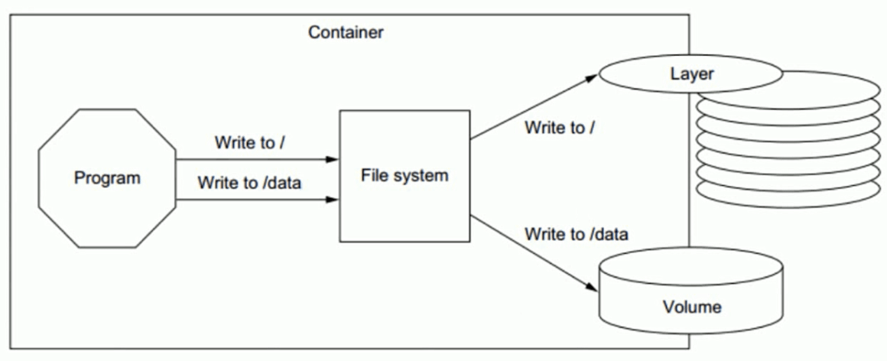
容器的数据管理介绍
Docker镜像是分层设计的，镜像层是只读的，通过镜像启动的容器添加了一层可读写的文件系统，用户
写入的数据都保存在这一层中。
Docker容器的分层
容器的数据分层目录
- LowerDir: image 镜像层,即镜像本身，只读
- UpperDir: 容器的上层,可读写 ,容器变化的数据存放在此处
- MergedDir: 容器的文件系统，使用Union FS（联合文件系统）将lowerdir 和 upperdir 合并完成后给容器使用,最终呈现给用户的统一视图
- WorkDir: 容器在宿主机的工作目录,挂载后内容会被清空，且在使用过程中其内容用户不可见
范例: 查看指定容器数据分层
[root@ubuntu1804 ~]#docker inspect 12959f2c152f
"GraphDriver": {
"Data": {
"LowerDir": "/data/docker_data/overlay2/e00510d1f615c8bc7d80c4a44371c8c7a242aa7a9cc725e76d269df377cc8e37/diff:/data/docker_data/overlay2/032f179041abd41e139c18c4213452e5d3499f89000e24f1b934e9d8329f3ff5/diff",
"MergedDir": "/data/docker_data/overlay2/24d6af2ae21e7ccf0c72da7992c09464cb74b9e3dc7166cb14e02e97cec2bb8d/merged",
"UpperDir": "/data/docker_data/overlay2/24d6af2ae21e7ccf0c72da7992c09464cb74b9e3dc7166cb14e02e97cec2bb8d/diff",
"WorkDir": "/data/docker_data/overlay2/24d6af2ae21e7ccf0c72da7992c09464cb74b9e3dc7166cb14e02e97cec2bb8d/work"
},
"Name": "overlay2"
},
#每个镜像层目录中包含了一个文件link，文件内容则是当前层对应的短标识符，镜像层的内容则存放在diff目录
#find /var/lib/docker/overlay2/848d77064091ba3ddd25a10ea6e0065af15ee701fed06f82804cf9ed58751761 -name test.img -ls
#删除容器后，所有容器数据目录都随之而删除
哪些数据需要持久化
有状态的协议
有状态协议就是就通信双方要记住双方，并且共享一些信息。而无状态协议的通信每次都是独立的，与上一次的通信没什么关系。
"状态”可以理解为“记忆”，有状态对应有记忆，无状态对应无记忆3.2 数据卷(data volume)
容器数据持久保存方式
如果要将写入到容器的数据永久保存，则需要将容器中的数据保存到宿主机的指定目录
Docker的数据类型分为两种:
- 数据卷(Data Volume): 直接将宿主机目录挂载至容器的指定的目录 ，推荐使用此种方式，此方式较常用
- 数据卷容器(Data Volume Container): 间接使用宿主机空间，数据卷容器是将宿主机的目录挂载至一个专门的数据卷容器，然后让其他容器通过数据卷容器读写宿主机的数据 ，此方式不常用
数据卷特点和使用
数据卷实际上就是宿主机上的目录或者是文件，可以被直接mount到容器当中使用
实际生成环境中，需要针对不同类型的服务、不同类型的数据存储要求做相应的规划，最终保证服务的可扩展性、稳定性以及数据的安全性
数据卷使用场景
- 数据库
- 日志输出
- 静态web页面
- 应用配置文件
- 多容器间目录或文件共享
数据卷的特点
- 数据卷是目录或者文件，并且可以在多个容器之间共同使用,实现容器之间共享和重用
- 对数据卷更改数据在所有容器里面会立即更新。
- 数据卷的数据可以持久保存，即使删除使用使用该容器卷的容器也不影响。
- 在容器里面的写入数据不会影响到镜像本身,即数据卷的变化不会影响镜像的更新
- 依赖于宿主机目录，宿主机出问题，上面容器会受影响，当宿主机较多时，不方便统一管理
- 匿名和命名数据卷在容器启动时初始化，如果容器使用的镜像在挂载点包含了数据，会拷贝到新初始化的数据卷中
数据卷使用方法
启动容器时，可以指定使用数据卷实现容器数据的持久化,数据卷有三种
- 指定宿主机目录或文件: 指定宿主机的具体路径和容器路径的挂载关系
- 匿名卷: 不指定数据名称,只指定容器内目录路径充当挂载点,docker自动指定宿主机的路径进行挂载
- 命名卷: 指定数据卷的名称和容器路径的挂载关系
docker run 命令的以下格式可以实现数据卷
-v, --volume=[host-src:]container-dest[:<options>] <options> ro 从容器内对此数据卷是只读，不写此项默认为可读可写 rw 从容器内对此数据卷可读可写,此为默认值
方式1
#指定宿主机目录或文件格式: -v <宿主机绝对路径的目录或文件>:<容器目录或文件>[:ro] #将宿主机目录挂载容器目录，两个目录都可自动创建
方式2
#匿名卷,只指定容器内路径,没有指定宿主机路径信息,宿主机自动生成/var/lib/docker/volumes/<卷ID>/_data目录,并挂载至容器指定路径 -v <容器内路径> #示例: docker run --name nginx -v /etc/nginx nginx
方式3
#命名卷将固定的存放在/var/lib/docker/volumes/<卷名>/_data -v <卷名>:<容器目录路径> #可以通过以下命令事先创建,如可没有事先创建卷名,docker run时也会自动创建卷 docker volume create <卷名> #示例: docker run -d -p 80:80 --name nginx01 -v vol1:/usr/share/nginx/html nginx
docker rm 的 -v 选项可以删除容器时，同时删除相关联的匿名卷
-v, --volumes Remove the volumes associated with the container
管理卷命令
docker volume COMMAND Commands: create Create a volume inspect Display detailed information on one or more volumes ls List volumes prune Remove all unused local volumes rm Remove one or more volumes
查看数据卷的挂载关系
docker inspect --format="{{.Mounts}}" <容器ID>
范例: 删除所有数据卷
[root@ubuntu1804 ~]#docker volume rm `docker volume ls -q`
数据卷容器
数据卷容器介绍
在Dockerfile中创建的是匿名数据卷,无法直接实现多个容器之间共享数据
数据卷容器最大的功能是可以让数据在多个docker容器之间共享
使用数据卷容器
启动容器时，指定使用数据卷容器
docker run 命令的以下选项可以实现数据卷容器，格式如下:
--volumes-from <数据卷容器> Mount volumes from the specified container(s)
利用数据卷容器备份指定容器的数据卷实现
由于匿名数据卷在宿主机中的存储位置不确定,所以为了方便的备份匿名数据卷,可以利用数据卷容器实现数据卷的备份
#在执行备份命令容器上执行备份方式 docker run -it --rm --volumes-from [container name] -v $(pwd):/backup ubuntu root@ca5bb2c1f877:/#tar cvf /backup/backup.tar [container data volume] #说明 [container name] #表示需要备份的容器 [container data volume] #表示容器内的需要备份的数据卷对应的目录 #还原方式 docker run -it --rm --volumes-from [container name] -V $(pwd):/backup ubuntu root@ca5bb2c1f877:/#tar xvf /backup/backup.tar -C [container data volume]
数据卷容器总结
将提供卷的容器Server 删除，已经运行的容器Client依然可以使用挂载的卷，因为容器是通过挂载访问数据的，但是无法创建新的卷容器客户端，但是再把卷容器Server创建后即可正常创建卷容器Client，此方式可以用于线上共享数据目录等环境，因为即使数据卷容器被删除了，其他已经运行的容器依然可以挂载使用
由此可知, 数据卷容器的功能只是将数据挂载信息传递给了其它使用数据卷容器的容器,而数据卷容器本身并不提供数据存储功能
数据卷容器可以作为共享的方式为其他容器提供文件共享，类似于NFS共享，可以在生产中启动一个实例挂载本地的目录，然后其他的容器分别挂载此容器的目录，即可保证各容器之间的数据一致性
数据卷容器的 Server 和 Client 可以不使用同一个镜像生成
网络管理
docker容器创建后，必不可少的要和其它主机或容器进行网络通信
Docker的默认的网络通信
Docker安装后默认的网络设置
创建容器后的网络配置
每次新建容器后
- 宿主机多了一个虚拟网卡，和容器的网卡组合成一个网卡，比如: 137: veth8ca6d43@if136，而在容器内的网卡名为136，可以看出和宿主机的网卡之间的关联
- 容器会自动获取一个172.17.0.0/16网段的随机地址，默认从172.17.0.2开始，第二次容器为172.17.0.3，以此类推
- 容器获取的地址并不固定,每次容器重启,可能会发生地址变化
创建容器后的网络状态
brctl show
例：
[root@ubuntu1804 ~]#brctl show
bridge name bridge id STP enabled interfaces
docker0 8000.0242027fa8c6 no veth8ca6d43
vethf599a47
容器间的通信
同一个宿主机的不同容器可相互通信
默认情况下
- 同一个宿主机的不同容器之间可以相互通信
dockerd --icc Enable inter-container communication (default true) --icc=false #此配置可以禁止同一个宿主机的容器之间通信
- 不同宿主机之间的容器IP地址重复，默认不能相互通信
禁止同一个宿主机的不同容器间通信
范例: 同一个宿主机不同容器间禁止通信
[root@ubuntu1804 ~]#vim /lib/systemd/system/docker.service ExecStart=/usr/bin/dockerd -H fd:// --containerd=/run/containerd/containerd.sock --icc=false [root@ubuntu1804 ~]#systemctl daemon-reload [root@ubuntu1804 ~]#systemctl restart docker #创建两个容器,测试无法通信 [root@ubuntu1804 ~]#docker run -it --name test1 --rm alpine sh / # hostname -i 172.17.0.2 [root@ubuntu1804 ~]#docker run -it --name test2 --rm alpine sh / # hostname -i 172.17.0.3 / # ping 172.17.0.2
修改默认网络设置
新建容器默认使用docker0的网络配置,可以修改默认指向自定义的网桥网络
范例: 用自定义的网桥代替默认的docker0
#查看默认网络 [root@ubuntu1804 ~]#ip a [root@ubuntu1804 ~]#apt -y install bridge-utils [root@ubuntu1804 ~]#brctl addbr br0 [root@ubuntu1804 ~]#ip a a 192.168.100.1/24 dev br0 [root@ubuntu1804 ~]#brctl show bridge name bridge id STP enabled interfaces br0 8000.000000000000 no docker0 8000.024235bae7ce no [root@ubuntu1804 ~]#ip a [root@ubuntu1804 ~]#vim /lib/systemd/system/docker.service ExecStart=/usr/bin/dockerd -H fd:// --containerd=/run/containerd/containerd.sock -b br0 [root@ubuntu1804 ~]#systemctl daemon-reload [root@ubuntu1804 ~]#systemctl restart docker [root@ubuntu1804 ~]#docker run --rm alpine hostname -i 192.168.100.2
容器名称互联
新建容器时，docker会自动分配容器名称，容器ID和IP地址，导致容器名称，容器ID和IP都不固定，那么如何区分不同的容器，实现和确定目标容器的通信呢？解决方案是给容器起个固定的名称，容器之间通过固定名称实现确定目标的通信
有两种固定名称:
- 容器名称
- 容器名称的别名
注意: 两种方式都最少需要两个容器才能实现
通过容器名称互联
容器名称介绍
即在同一个宿主机上的容器之间可以通过自定义的容器名称相互访问，比如: 一个业务前端静态页面是使用nginx，动态页面使用的是tomcat，另外还需要负载均衡调度器，如: haproxy 对请求调度至nginx和tomcat的容器，由于容器在启动的时候其内部IP地址是DHCP 随机分配的，而给容器起个固定的名称，则是相对比较固定的，因此比较适用于此场景
注意: 如果被引用的容器地址变化,必须重启当前容器才能生效
容器名称实现
docker run 创建容器，可使用–link选项实现容器名称的引用
--link list #Add link to another container 格式: docker run --name <容器名称> #先创建指定名称的容器 docker run --link <目标通信的容器ID或容器名称> #再创建容器时引用上面容器的名称
实战案例1: 使用容器名称进行容器间通信
#1. 先创建第一个指定容器名称的容器 [root@ubuntu1804 ~]#docker run -it --name server1 --rm alpine:3.11 sh / # cat /etc/hosts 172.17.0.2 cdb5173003f5 / # ping 172.17.0.2 PING 172.17.0.2 (172.17.0.2): 56 data bytes 64 bytes from 172.17.0.2: seq=0 ttl=64 time=0.038 ms ^C / # ping server1 ping: bad address 'server1' / # ping cdb5173003f5 PING cdb5173003f5 (172.17.0.2): 56 data bytes 64 bytes from 172.17.0.2: seq=0 ttl=64 time=0.040 ms 64 bytes from 172.17.0.2: seq=1 ttl=64 time=0.128 ms ^C #2. 新建第二个容器时引用第一个容器的名称 #会自动将第一个主机的名称加入/etc/hosts文件,从而可以利用第一个容器名称进行访问 [root@ubuntu1804 ~]#docker run -it --rm --name server2 --link server1 alpine:3.11 sh / # env HOSTNAME=395d8c3392ee SHLVL=1 HOME=/root TERM=xterm SERVER1_NAME=/server2/server1 PATH=/usr/local/sbin:/usr/local/bin:/usr/sbin:/usr/bin:/sbin:/bin PWD=/ / # cat /etc/hosts 172.17.0.2 server1 cdb5173003f5 172.17.0.3 7ca466320980 / # ping server1 PING server1 (172.17.0.2): 56 data bytes 64 bytes from 172.17.0.2: seq=0 ttl=64 time=0.111 ms ^C / # ping server2 ping: bad address 'server2' / # ping 7ca466320980 PING 7ca466320980 (172.17.0.3): 56 data bytes 64 bytes from 172.17.0.3: seq=0 ttl=64 time=0.116 ms4.2.1.4 / # ping cdb5173003f5 PING cdb5173003f5 (172.17.0.2): 56 data bytes 64 bytes from 172.17.0.2: seq=0 ttl=64 time=0.072 ms ^C
实战案例2: 实现 wordpress 和 MySQL 两个容器互连
[root@centos7 ~]#tree lamp_docker/ lamp_docker/ ├── env_mysql.list ├── env_wordpress.list └── mysql └── mysql_test.cnf [root@centos7 ~]#cat lamp_docker/env_mysql.list MYSQL_ROOT_PASSWORD=123456 MYSQL_DATABASE=wordpress MYSQL_USER=wpuser MYSQL_PASSWORD=wppass [root@centos7 ~]#cat lamp_docker/env_wordpress.list WORDPRESS_DB_HOST=mysql:3306 WORDPRESS_DB_NAME=wordpress WORDPRESS_DB_USER=wpuser WORDPRESS_DB_PASSWORD=wppass WORDPRESS_TABLE_PREFIX=wp_ [root@centos7 ~]#cat lamp_docker/mysql/mysql_test.cnf [mysqld] server-id=100 log-bin=mysql-bin [root@centos7 ~]#docker run --name mysql -v /root/lamp_docker/mysql/:/etc/mysql/conf.d -v /data/mysql:/var/lib/mysql --envfile=/root/lamp_docker/env_mysql.list -d -p 3306:3306 mysql:5.7.30 [root@centos7 ~]#docker run -d --name wordpress --link mysql --envfile=/root/lamp_docker/env_wordpress.list -p 80:80 wordpress
通过自定义容器别名互联
容器别名介绍
自定义的容器名称可能后期会发生变化，那么一旦名称发生变化，容器内程序之间也必须要随之发生变化，比如:程序通过固定的容器名称进行服务调用，但是容器名称发生变化之后再使用之前的名称肯定是无法成功调用，每次都进行更改的话又比较麻烦，因此可以使用自定义别名的方式解决，即容器名称可以随意更改，只要不更改别名即可
容器别名实现
命令格式:
docker run --name <容器名称> #先创建指定名称的容器 docker run -d --name 容器名称 --link <目标容器名称>:<容器别名> #给上面创建的容器起别名,来创建新容器
实战案例: 使用容器别名
[root@ubuntu1804 ~]#docker run -it --rm --name server3 --link server1:server1-alias alpine:3.11 sh / # env HOSTNAME=395d8c3392ee SHLVL=1 HOME=/root TERM=xterm SERVER1-ALIAS_NAME=/server3/server1-alias PATH=/usr/local/sbin:/usr/local/bin:/usr/sbin:/usr/bin:/sbin:/bin PWD=/ / # cat /etc/hosts 172.17.0.2 server1-alias cdb5173003f5 server1 172.17.0.4 d9622c6831f7
范例: 创建第四个容器，引用前面创建的容器，并起多个别名
[root@ubuntu1804 ~]#docker run -it --rm --name server4 --link server1:"server1-alias1 server1-alias2" alpine:3.11 sh / # cat /etc/hosts 172.17.0.2 server1-alias1 server1-alias2 cdb5173003f5 server1 172.17.0.5 db3d2f084c05
docker 网络连接模式
网络模式介绍
Docker 的网络支持5种网络模式:
- none
- bridge
- host
- container
- network-name
范例: 查看默认的网络模式
[root@ubuntu1804 ~]#docker network ls NETWORK ID NAME DRIVER SCOPE fe08e6d23c4c bridge bridge local cb64aa83626c host host local 10619d45dcd4 none null local
网络模式指定
默认新建的容器使用Bridge模式，创建容器时，docker run 命令使用以下选项指定网络模式
格式
docker run --network <mode> docker run --net=<mode> <mode>: 可是以下值 none bridge host container:<容器名或容器ID> <自定义网络名称>
bridge网络模式
bridge 网络模式架构
本模式是docker的默认模式，即不指定任何模式就是bridge模式，也是使用比较多的模式，此模式创建的容器会为每一个容器分配自己的网络 IP 等信息，并将容器连接到一个虚拟网桥与外界通信
可以和外部网络之间进行通信，通过SNAT访问外网，使用DNAT可以让容器被外部主机访问，所以此模式也称为NAT模式
此模式宿主机需要启动ip_forward功能
bridge网络模式特点
- 网络资源隔离: 不同宿主机的容器无法直接通信，各自使用独立网络
- 无需手动配置: 容器默认自动获取172.17.0.0/16的IP地址，此地址可以修改
- 可访问外网: 利用宿主机的物理网卡，SNAT连接外网
- 外部主机无法直接访问容器: 可以通过配置DNAT接受外网的访问
- 低性能较低: 因为可通过NAT，网络转换带来更的损耗
- 端口管理繁琐: 每个容器必须手动指定唯一的端口，容器产生端口冲容
bridge 模式的默认设置
范例: 查看bridge模式信息
[root@ubuntu1804 ~]#docker network inspect bridge
[
{
"Name": "bridge",
"Id": "387a0aec81eef455a5a9ff2ddc25bb4b146f4b4f47af376158ae3b08ea17dd28",
"Created": "2023-03-20T15:19:05.883786416+08:00",
"Scope": "local",
"Driver": "bridge",
"EnableIPv6": false,
"IPAM": {
"Driver": "default",
"Options": null,
"Config": [
{
"Subnet": "172.17.0.0/16",
"Gateway": "172.17.0.1"
}
]
},
"Internal": false,
"Attachable": false,
"Ingress": false,
"ConfigFrom": {
"Network": ""
},
"ConfigOnly": false,
"Containers": {
"f03c144e137e342c95609444cce311d3b9ab7a9a1eeb280de73a8b6bc4a7dada": {
"Name": "buildx_buildkit_mutil-platform-builder0",
"EndpointID": "9a86768b0b8323596bcc1c476e514fab06a089e7311579593d28e2b2a2d172da",
"MacAddress": "02:42:ac:11:00:02",
"IPv4Address": "172.17.0.2/16",
"IPv6Address": ""
}
},
"Options": {
"com.docker.network.bridge.default_bridge": "true",
"com.docker.network.bridge.enable_icc": "true",
"com.docker.network.bridge.enable_ip_masquerade": "true",
"com.docker.network.bridge.host_binding_ipv4": "0.0.0.0",
"com.docker.network.bridge.name": "docker0",
"com.docker.network.driver.mtu": "1500"
},
"Labels": {}
}
]
范例: 宿主机的网络状态
#安装docker后.默认启用ip_forward [root@ubuntu1804 ~]#cat /proc/sys/net/ipv4/ip_forward 1 [root@ubuntu1804 ~]#iptables -vnL -t nat Chain PREROUTING (policy ACCEPT 1532K packets, 92M bytes) pkts bytes target prot opt in out source destination 1475K 89M DOCKER all -- * * 0.0.0.0/0 0.0.0.0/0 ADDRTYPE match dst-type LOCAL Chain INPUT (policy ACCEPT 1475K packets, 89M bytes) pkts bytes target prot opt in out source destination Chain OUTPUT (policy ACCEPT 1111K packets, 82M bytes) pkts bytes target prot opt in out source destination 39 3276 DOCKER all -- * * 0.0.0.0/0 !127.0.0.0/8 ADDRTYPE match dst-type LOCAL Chain POSTROUTING (policy ACCEPT 1111K packets, 82M bytes) pkts bytes target prot opt in out source destination 56721 3877K MASQUERADE all -- * !docker0 172.17.0.0/16 0.0.0.0/0 Chain DOCKER (2 references) pkts bytes target prot opt in out source destination 0 0 RETURN all -- docker0 * 0.0.0.0/0 0.0.0.0/0
范例: 通过宿主机的物理网卡利用SNAT访问外部网络
#在另一台主机上建立httpd服务器 [root@centos7 ~]#systemctl is-active httpd active #启动容器，默认是bridge网络模式 [root@ubuntu1804 ~]#docker run -it --rm alpine:3.11 sh / # ip a #可能访问其它宿主机 / # ping 10.0.0.7 PING 10.0.0.7 (10.0.0.7): 56 data bytes 64 bytes from 10.0.0.7: seq=1 ttl=63 time=1.147 ms ^C / # ping www.baidu.com PING www.baidu.com (61.135.169.125): 56 data bytes 64 bytes from 61.135.169.125: seq=0 ttl=127 time=5.182 ms ^C / # traceroute 10.0.0.7 traceroute to 10.0.0.7 (10.0.0.7), 30 hops max, 46 byte packets 1 172.17.0.1 (172.17.0.1) 0.008 ms 0.008 ms 0.007 ms 2 10.0.0.7 (10.0.0.7) 0.255 ms 0.510 ms 0.798 ms / # wget -qO - 10.0.0.7 Website on 10.0.0.7 / # route -n Kernel IP routing table Destination Gateway Genmask Flags Metric Ref Use Iface 0.0.0.0 172.17.0.1 0.0.0.0 UG 0 0 0 eth0 172.17.0.0 0.0.0.0 255.255.0.0 U 0 0 0 docker0 [root@centos7 ~]#curl 127.0.0.1 Website on 10.0.0.7 [root@centos7 ~]#tail /var/log/httpd/access_log 127.0.0.1 - - [01/Feb/2020:19:31:16 +0800] "GET / HTTP/1.1" 200 20 "-" "curl/7.29.0" 10.0.0.100 - - [01/Feb/2020:19:31:21 +0800] "GET / HTTP/1.1" 200 20 "-" "Wget"
修改默认的 bridge 模式网络配置
范例: 修改bridge模式默认的网段方法1
[root@ubuntu1804 ~]#ip a 3: docker0: <NO-CARRIER,BROADCAST,MULTICAST,UP> mtu 1500 qdisc noqueue state inet 172.17.0.1/16 brd 172.17.255.255 scope global docker0 [root@ubuntu1804 ~]#docker run -it --rm alpine sh / # ip a 4: eth0@if5: <BROADCAST,MULTICAST,UP,LOWER_UP,M-DOWN> mtu 1500 qdisc noqueue inet 172.17.0.2/16 brd 172.17.255.255 scope global eth0 / #exit #修改桥接地址 [root@ubuntu1804 ~]#vim /lib/systemd/system/docker.service ExecStart=/usr/bin/dockerd -H fd:// --containerd=/run/containerd/containerd.sock --bip=10.100.0.1/24 [root@ubuntu1804 ~]#systemctl daemon-reload [root@ubuntu1804 ~]#systemctl restart docker [root@ubuntu1804 ~]#ip a 3: docker0: <NO-CARRIER,BROADCAST,MULTICAST,UP> mtu 1500 qdisc noqueue state inet 10.100.0.1/24 brd 10.100.0.255 scope global docker0 [root@ubuntu1804 ~]#docker run -it --rm alpine sh / # ip a 1: lo: <LOOPBACK,UP,LOWER_UP> mtu 65536 qdisc noqueue state UNKNOWN qlen 1000 [root@ubuntu1804 ~]#docker network inspect bridge
范例: 修改bridge网络配置方法2
[root@ubuntu1804 ~]#vim /etc/docker/daemon.json
{
"hosts": ["tcp://0.0.0.0:2375", "fd://"],
"bip": "192.168.100.100/24", #分配docker0网卡的IP,24是容器IP的netmask
"fixed-cidr": "192.168.100.128/26", #分配容器IP范围,26不是容器IP的子网掩码,只表示地址范围
"fixed-cidr-v6": "2001:db8::/64",
"mtu": 1500,
"default-gateway": "192.168.100.200", #网关必须和bip在同一个网段
"default-gateway-v6": "2001:db8:abcd::89",
"dns": [ "1.1.1.1", "8.8.8.8"]
}
[root@ubuntu1804 ~]#systemctl restart docker
[root@ubuntu1804 ~]#ip a show docker0
3: docker0: <BROADCAST,MULTICAST,UP,LOWER_UP> mtu 1500 qdisc noqueue state UP
inet 192.168.100.100/24 brd 192.168.100.255 scope global docker0
valid_lft forever preferred_lft forever
inet6 fe80::42:23ff:febe:9775/64 scope link
[root@ubuntu1804 ~]#docker run -it --name b1 busybox
/ # ip a
36: eth0@if37: <BROADCAST,MULTICAST,UP,LOWER_UP,M-DOWN> mtu 1500 qdisc noqueue
inet 192.168.100.128/24 brd 192.168.100.255 scope global eth0
valid_lft forever preferred_lft forever
/ # cat /etc/resolv.conf
search xxx.com xxx.org
nameserver 1.1.1.1
nameserver 8.8.8.8
/ # route -n
Kernel IP routing table
Destination Gateway Genmask Flags Metric Ref Use Iface
0.0.0.0 192.168.100.200 0.0.0.0 UG 0 0 0 eth0
192.168.100.0 0.0.0.0 255.255.255.0 U 0 0 0 eth0
[root@ubuntu1804 ~]#docker network inspect bridge
[
{
"Name": "bridge",
"Id":
"381bc2df514b0901e2a7570708aa93a3af05f298f27d4d077b52a8b324fad66c",
"Created": "2020-07-27T21:58:31.419420569+08:00",
"Scope": "local",
"Driver": "bridge",
"EnableIPv6": false,
"IPAM": {
"Driver": "default",
"Options": null,
"Config": [
{
"Subnet": "192.168.100.0/24",
"IPRange": "192.168.100.128/26",
"Gateway": "192.168.100.100",
Host 模式
如果指定host模式启动的容器，那么新创建的容器不会创建自己的虚拟网卡，而是直接使用宿主机的网卡和IP地址，因此在容器里面查看到的IP信息就是宿主机的信息，访问容器的时候直接使用宿主机IP+容器端口即可，不过容器内除网络以外的其它资源，如: 文件系统、系统进程等仍然和宿主机保持隔离
此模式由于直接使用宿主机的网络无需转换，网络性能最高，但是各容器内使用的端口不能相同，适用于运行容器端口比较固定的业务
Host 网络模式特点:
- 使用参数 –network host 指定
- 共享宿主机网络
- 网络性能无损耗
- 网络故障排除相对简单
- 各容器网络无隔离
- 网络资源无法分别统计
- 端口管理困难: 容易产生端口冲突
- 不支持端口映射
范例:
#查看宿主机的网络设置 [root@ubuntu1804 ~]#ifconfig [root@ubuntu1804 ~]#route -n Kernel IP routing table Destination Gateway Genmask Flags Metric Ref Use Iface 0.0.0.0 10.0.0.2 0.0.0.0 UG 0 0 0 eth0 10.0.0.0 0.0.0.0 255.255.255.0 U 0 0 0 eth0 172.17.0.0 0.0.0.0 255.255.0.0 U 0 0 0 docker0 #打开容器前确认宿主机的80/tcp端口没有打开 [root@ubuntu1804 ~]#ss -ntl|grep :80 #创建host模式的容器 [root@ubuntu1804 ~]#docker run -d --network host --name web1 nginx-centos7-base:1.6.1 #创建容器后，宿主机的80/tcp端口打开 [root@ubuntu1804 ~]#ss -ntlp|grep :80 LISTEN 0 128 0.0.0.0:80 0.0.0.0:* users:(("nginx",pid=43762,fd=6),("nginx",pid=43737,fd=6)) #进入容器 [root@ubuntu1804 ~]#docker exec -it web1 bash #进入容器后仍显示宿主机的主机名提示符信息 [root@ubuntu1804 /]# hostname ubuntu1804.xxx.org [root@ubuntu1804 /]# ifconfig [root@ubuntu1804 /]# route -n Kernel IP routing table Destination Gateway Genmask Flags Metric Ref Use Iface 0.0.0.0 10.0.0.2 0.0.0.0 UG 0 0 0 eth0 10.0.0.0 0.0.0.0 255.255.255.0 U 0 0 0 eth0 172.17.0.0 0.0.0.0 255.255.0.0 U 0 0 0 docker0 #从容器访问远程主机 [root@ubuntu1804 /]# curl 10.0.0.7 Website on 10.0.0.7 #查看远程主机的访问日志 [root@centos7 ~]#tail -n1 /var/log/httpd/access_log 10.0.0.100 - - [01/Feb/2020:19:58:06 +0800] "GET / HTTP/1.1" 200 20 "-" "curl/7.29.0" #远程主机可以访问容器的web服务 [root@centos7 ~]#curl 10.0.0.100/app/ Test Page in app
none 模式
在使用none 模式后，Docker 容器不会进行任何网络配置，没有网卡、没有IP也没有路由，因此默认无法与外界通信，需要手动添加网卡配置IP等，所以极少使用
none模式特点
- 使用参数 –network none 指定
- 默认无网络功能，无法和外部通信
Container 模式
使用此模式创建的容器需指定和一个已经存在的容器共享一个网络，而不是和宿主机共享网，新创建的容器不会创建自己的网卡也不会配置自己的IP，而是和一个被指定的已经存在的容器共享IP和端口范围，因此这个容器的端口不能和被指定容器的端口冲突，除了网络之外的文件系统、进程信息等仍然保持相互隔离，两个容器的进程可以通过lo网卡进行通信
Container 模式特点
- 使用参数 –-network container:名称或ID 指定
- 与宿主机网络空间隔离
- 空器间共享网络空间
- 适合频繁的容器间的网络通信
- 直接使用对方的网络，较少使用
范例:
#创建第一个容器
[root@ubuntu1804 ~]#docker run -it –name server1 -p 80:80 alpine:3.11 sh
#创建第二个容器，基于第一个容器的container的网络模式
[root@ubuntu1804 ~]#docker run -d –name server2 –network container:server1 nginx-centos7-base:1.6.1
[root@ubuntu1804 ~]#docker exec -it server2 bash
#和第一个容器共享相同的网络
[root@4d342fac169f /]# netstat -ntl
Active Internet connections (only servers)
Proto Recv-Q Send-Q Local Address Foreign Address State
tcp 0 0 0.0.0.0:80 0.0.0.0:* LISTEN
#可访问外网
[root@4d342fac169f /]# ping www.baidu.com
PING www.a.shifen.com (61.135.169.121) 56(84) bytes of data.
64 bytes from 61.135.169.121 (61.135.169.121): icmp_seq=1 ttl=127 time=3.99 ms
64 bytes from 61.135.169.121 (61.135.169.121): icmp_seq=2 ttl=127 time=5.03 ms
^C
范例: 第一个容器使用host网络模式,第二个容器与之共享网络
[root@ubuntu1804 ~]#docker run -d --name c1 --network host nginxcentos7.8:v5.0-1.18.0 [root@ubuntu1804 ~]#docker run -it --name c2 --network container:c1 centos7.8:v1.0 [root@ubuntu1804 /]# ip a 2: eth0: <BROADCAST,MULTICAST,UP,LOWER_UP> mtu 1500 qdisc fq_codel state UP inet 10.0.0.100/24 brd 10.0.0.255 scope global eth0 3: docker0: <NO-CARRIER,BROADCAST,MULTICAST,UP> mtu 1500 qdisc noqueue state inet 172.17.0.1/16 brd 172.17.255.255 scope global docker0 [root@ubuntu1804 ~]#docker exec -it c1 bash [root@ubuntu1804 /]# ip a 2: eth0: <BROADCAST,MULTICAST,UP,LOWER_UP> mtu 1500 qdisc fq_codel state UP inet 10.0.0.100/24 brd 10.0.0.255 scope global eth0 3: docker0: <NO-CARRIER,BROADCAST,MULTICAST,UP> mtu 1500 qdisc noqueue state inet 172.17.0.1/16 brd 172.17.255.255 scope global docker0
自定义网络模式
除了以上的网络模式，也可以自定义网络，使用自定义的网段地址，网关等信息
注意: 自定义网络内的容器可以直接通过容器名进行相互的访问,而无需使用 –link
可以使用自定义网络模式,实现不同集群应用的独立网络管理,而互不影响,而且在网一个网络内,可以直接利用容器名相互访问非常便利
自定义网络实现
[root@ubuntu1804 ~]#docker network --help
Usage: docker network COMMAND
Manage networks
Commands:
connect Connect a container to a network
create Create a network
disconnect Disconnect a container from a network
inspect Display detailed information on one or more networks
ls List networks
prune Remove all unused networks
rm Remove one or more networks
创建自定义网络:
docker network create -d <mode> --subnet <CIDR> --gateway <网关> <自定义网络名称> #注意mode不支持host和none
查看自定义网络信息
docker network inspect <自定义网络名称或网络ID>
引用自定议网络
docker run --network <自定义网络名称> <镜像名称>
删除自定义网络
doccker network rm <自定义网络名称或网络ID>
实战案例: 自定义网络
1. 创建自定义的网络 [root@ubuntu1804 ~]#docker network create -d bridge --subnet 172.27.0.0/16 --gateway 172.27.0.1 test-net [root@ubuntu1804 ~]#docker network ls NETWORK ID NAME DRIVER SCOPE c90dee3b7937 test-net bridge local [root@ubuntu1804 ~]#docker inspect test-net [root@ubuntu1804 ~]#ip a #新添加了一个虚拟网卡 14: br-c90dee3b7937: <NO-CARRIER,BROADCAST,MULTICAST,UP> mtu 1500 qdisc noqueue inet 172.27.0.1/16 brd 172.27.255.255 scope global br-c90dee3b7937 #新加了一个网桥 [root@ubuntu1804 ~]#brctl show bridge name bridge id STP enabled interfaces br-00ab0f2d29e8 8000.024245e647ec no docker0 8000.0242cfd26f0a no [root@ubuntu1804 ~]#route -n Kernel IP routing table Destination Gateway Genmask Flags Metric Ref Use Iface 0.0.0.0 10.0.0.2 0.0.0.0 UG 0 0 0 eth0 10.0.0.0 0.0.0.0 255.255.255.0 U 0 0 0 eth0 172.17.0.0 0.0.0.0 255.255.0.0 U 0 0 0 docker0 172.27.0.0 0.0.0.0 255.255.0.0 U 0 0 0 brc90dee3b7937 2.利用自定义的网络创建容器 [root@ubuntu1804 ~]#docker run -it --rm --network test-net alpine sh / # ip a 15: eth0@if16: <BROADCAST,MULTICAST,UP,LOWER_UP,M-DOWN> mtu 1500 qdisc noqueue inet 172.27.0.2/16 brd 172.27.255.255 scope global eth0 / # / # route -n Kernel IP routing table Destination Gateway Genmask Flags Metric Ref Use Iface 0.0.0.0 172.27.0.1 0.0.0.0 UG 0 0 0 eth0 172.27.0.0 0.0.0.0 255.255.0.0 U 0 0 0 eth0 / # cat /etc/resolv.conf search xxx.com xxx.org nameserver 127.0.0.11 options ndots:0 / # ping -c1 www.baidu.com PING www.baidu.com (111.206.223.172): 56 data bytes 64 bytes from 111.206.223.172: seq=0 ttl=127 time=5.053 ms #再开一个新终端窗口查看网络 [root@ubuntu1804 ~]#docker inspect test-net #出现此网络中容器的网络信息 "Containers": { "89e54ed71c111ac7b41a62ce20191707cf53a3a234ba3e25ac11c1a4a6bed7ef": { "Name": "frosty_ellis", "EndpointID": "cf72bf192df73a8b290d8b18dd8507fef64a1f9480d4d65f74c23258d20dbafb", "MacAddress": "02:42:ac:1b:00:02", "IPv4Address": "172.27.0.2/16", "IPv6Address": "" } }, "Options": {}, "Labels": {} } ]
实战案例: 利用自定义网络实现 Redis Cluster
#1 创建自定义网络 [root@ubuntu1804 ~]#docker network create net-redis --subnet 172.18.0.0/16 [root@ubuntu1804 ~]#docker inspect net-redis #2 创建6个redis容器配置 # 通过脚本创建六个redis容器配置 [root@ubuntu1804 ~]#for port in {1..6};do mkdir -p /data/redis/node-${port}/conf cat >> /data/redis/node-${port}/conf/redis.conf << EOF port 6379 bind 0.0.0.0 masterauth 123456 requirepass 123456 cluster-enabled yes cluster-config-file nodes.conf cluster-node-timeout 5000 cluster-announce-ip 172.18.0.1${port} cluster-announce-port 6379 cluster-announce-bus-port 16379 appendonly yes EOF done #3 创建6个 redis 容器 # 通过脚本运行六个redis容器 [root@ubuntu1804 ~]#for port in {1..6};do docker run -p 637${port}:6379 -p 1667${port}:16379 --name redis-${port} \ -v /data/redis/node-${port}/data:/data \ -v /data/redis/node-${port}/conf/redis.conf:/etc/redis/redis.conf \ -d --net net-redis --ip 172.18.0.1${port} redis:5.0.9-alpine3.11 redisserver /etc/redis/redis.conf done [root@ubuntu1804 ~]#docker ps #4 创建 redis cluster #连接redis cluster [root@ubuntu1804 ~]#docker exec -it redis-1 /bin/sh /data # redis-cli -a 123456 Warning: Using a password with '-a' or '-u' option on the command line interface may not be safe. 127.0.0.1:6379> exit #不支持 { } 扩展 /data # echo {1..10} {1..10} /data # echo $- smi # 创建集群 /data # redis-cli -a 123456 --cluster create 172.18.0.11:6379 172.18.0.12:6379 172.18.0.13:6379 172.18.0.14:6379 172.18.0.15:6379 172.18.0.16:6379 --clusterreplicas 1 #5 测试访问在 #连接redis cluster /data # redis-cli -a 123456 -c Warning: Using a password with '-a' or '-u' option on the command line interface may not be safe. 127.0.0.1:6379> cluster info cluster_state:ok 127.0.0.1:6379> cluster nodes #看到172.18.0.{11,12,13}为master,172.18.0.{14,15,16}为slave #以下为master/slave关系 #172.18.0.11<--->172.18.0.15 #172.18.0.12<--->172.18.0.16 #172.18.0.13<--->172.18.0.14 2f69287f52ec7243a0b894491814d2afe28a46d2 172.18.0.15:6379@16379 slave 0f9bd0d24495f826702a030703896f7690bebdee 0 1595404269581 5 connected 0f9bd0d24495f826702a030703896f7690bebdee 172.18.0.11:6379@16379 myself,master - 0 1595404269000 1 connected 0-5460 c64dfd1bd6c964a3c6425a28f6ab0f0e1bcea1ba 172.18.0.14:6379@16379 slave 599f69b43a3579ec064b1854680c77997c809470 0 1595404268000 4 connected 9b6ab0b8f75516d6acd9d566d0d349f1fdd29540 172.18.0.12:6379@16379 master - 0 1595404268976 2 connected 5461-10922 599f69b43a3579ec064b1854680c77997c809470 172.18.0.13:6379@16379 master - 0 1595404269481 3 connected 10923-16383 06295ce4884948858cf60243629a595afa461b21 172.18.0.16:6379@16379 slave 9b6ab0b8f75516d6acd9d566d0d349f1fdd29540 0 1595404268000 6 connected #添加key到redis-2上 127.0.0.1:6379> set name user1 -> Redirected to slot [5798] located at 172.18.0.12:6379 OK #添加key到redis-1上 172.18.0.12:6V379> set title cto -> Redirected to slot [2217] located at 172.18.0.11:6379 OK 172.18.0.11:6379> get name -> Redirected to slot [5798] located at 172.18.0.12:6379 "user1" 172.18.0.12:6379> get title -> Redirected to slot [2217] located at 172.18.0.11:6379 "cto" #5 测试故障实现 redis cluster 高可用性 #模拟redis-2故障 [root@ubuntu1804 ~]#docker stop redis-2 redis-2 #再次查看cluster状态,可以看到redis-2出错 [root@ubuntu1804 ~]#docker exec -it redis-1 /bin/sh /data # redis-cli -a 123456 --cluster check 127.0.0.1:6379 Warning: Using a password with '-a' or '-u' option on the command line interface may not be safe. Could not connect to Redis at 172.18.0.12:6379: Host is unreachable #查看到 172.18.0.16提升为新的master 172.18.0.16:6379 (06295ce4...) -> 1 keys | 5462 slots | 0 slaves. 172.18.0.13:6379 (599f69b4...) -> 0 keys | 5461 slots | 1 slaves. 172.18.0.15:6379 (2f69287f...) -> 1 keys | 5461 slots | 1 slaves. [OK] 2 keys in 3 masters. 0.00 keys per slot on average. >>> Performing Cluster Check (using node 127.0.0.1:6379) S: 0f9bd0d24495f826702a030703896f7690bebdee 127.0.0.1:6379 slots: (0 slots) slave replicates 2f69287f52ec7243a0b894491814d2afe28a46d2 M: 06295ce4884948858cf60243629a595afa461b21 172.18.0.16:6379 slots:[5461-10922] (5462 slots) master M: 599f69b43a3579ec064b1854680c77997c809470 172.18.0.13:6379 slots:[10923-16383] (5461 slots) master 1 additional replica(s) M: 2f69287f52ec7243a0b894491814d2afe28a46d2 172.18.0.15:6379 slots:[0-5460] (5461 slots) master 1 additional replica(s) S: c64dfd1bd6c964a3c6425a28f6ab0f0e1bcea1ba 172.18.0.14:6379 slots: (0 slots) slave replicates 599f69b43a3579ec064b1854680c77997c809470 [OK] All nodes agree about slots configuration. >>> Check for open slots... >>> Check slots coverage... [OK] All 16384 slots covered. /data # redis-cli -a 123456 -c Warning: Using a password with '-a' or '-u' option on the command line interface may not be safe. 127.0.0.1:6379> cluster nodes 06295ce4884948858cf60243629a595afa461b21 172.18.0.16:6379@16379 master - 0 1595406573128 8 connected 5461-10922 599f69b43a3579ec064b1854680c77997c809470 172.18.0.13:6379@16379 master - 0 1595406572623 3 connected 10923-16383 0f9bd0d24495f826702a030703896f7690bebdee 172.18.0.11:6379@16379 myself,slave 2f69287f52ec7243a0b894491814d2afe28a46d2 0 1595406571000 1 connected 2f69287f52ec7243a0b894491814d2afe28a46d2 172.18.0.15:6379@16379 master - 0 1595406571614 7 connected 0-5460 9b6ab0b8f75516d6acd9d566d0d349f1fdd29540 172.18.0.12:6379@16379 master,fail - 1595404533839 1595404532528 2 connected c64dfd1bd6c964a3c6425a28f6ab0f0e1bcea1ba 172.18.0.14:6379@16379 slave 599f69b43a3579ec064b1854680c77997c809470 0 1595406572118 4 connected 127.0.0.1:6379> get name -> Redirected to slot [5798] located at 172.18.0.16:6379 "user1" 172.18.0.16:6379> get title -> Redirected to slot [2217] located at 172.18.0.15:6379 "cto"
同一个宿主机之间不同网络的容器通信
开两个容器，一个使用自定义网络容器，一个使用默认brideg网络的容器,默认因iptables规则导致无法通信
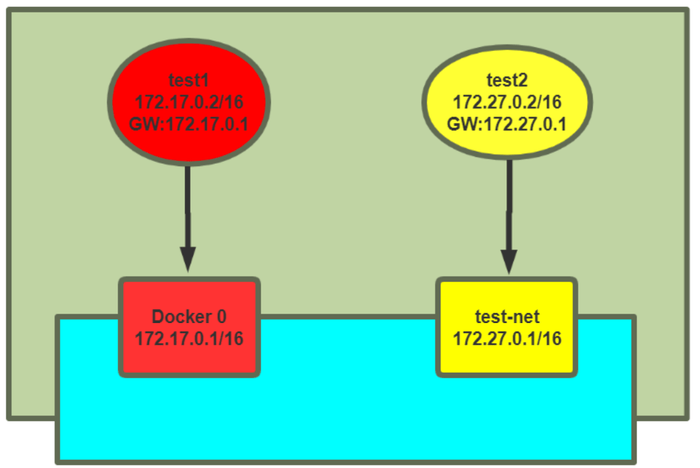
docker run -it --rm --name test1 alpine sh docker run -it --rm --network test-net --name test2 alpine sh
实战案例 1: 修改iptables实现同一宿主机上的不同网络的容器间通信
#确认开启ip_forward [root@ubuntu1804 ~]#cat /proc/sys/net/ipv4/ip_forward 1 #默认网络和自定义网络是两个不同的网桥 [root@ubuntu1804 ~]#brctl show bridge name bridge id STP enabled interfaces br-c90dee3b7937 8000.0242587cf093 no veth984a5b4 docker0 8000.02429b31732b no veth1a20128 [root@ubuntu1804 ~]# [root@ubuntu1804 ~]#iptables-save # Generated by iptables-save v1.6.1 on Sun Feb 2 14:33:19 2020 *filter ... ... -A DOCKER-ISOLATION-STAGE-2 -o br-c90dee3b7937 -j DROP #注意此行规则 -A DOCKER-ISOLATION-STAGE-2 -o docker0 -j DROP #注意此行规则 -A DOCKER-ISOLATION-STAGE-2 -j RETURN -A DOCKER-USER -j RETURN COMMIT # Completed on Sun Feb 2 14:33:19 2020 # Generated by iptables-save v1.6.1 on Sun Feb 2 14:33:19 2020 ... ... COMMIT # Completed on Sun Feb 2 14:33:19 2020 [root@ubuntu1804 ~]#iptables-save > iptables.rule [root@ubuntu1804 ~]#vim iptables.rule #修改下面两行的规则 -A DOCKER-ISOLATION-STAGE-2 -o br-c90dee3b7937 -j ACCEPT -A DOCKER-ISOLATION-STAGE-2 -o docker0 -j ACCEPT #或者执行下面命令 [root@ubuntu1804 ~]#iptables -I DOCKER-ISOLATION-STAGE-2 -j ACCEPT [root@ubuntu1804 ~]#iptables-restore < iptables.rule #再次两个容器之间可以相互通信 / # ping 172.27.0.2 PING 172.27.0.2 (172.27.0.2): 56 data bytes 64 bytes from 172.27.0.2: seq=896 ttl=63 time=0.502 ms 64 bytes from 172.27.0.2: seq=897 ttl=63 time=0.467 ms 64 bytes from 172.27.0.2: seq=898 ttl=63 time=0.227 ms / # ping 172.17.0.2 PING 172.17.0.2 (172.17.0.2): 56 data bytes 64 bytes from 172.17.0.2: seq=0 ttl=63 time=0.163 ms 64 bytes from 172.17.0.2: seq=1 ttl=63 time=0.232 ms
实战案例 2: 通过解决docker network connect 实现同一个宿主机不同网络的容器间通信
#将CONTAINER连入指定的NETWORK中,使此CONTAINER可以与NETWORK中的其它容器进行通信 docker network connect [OPTIONS] NETWORK CONTAINER Connect a container to a network Options: --alias strings Add network-scoped alias for the container --driver-opt strings driver options for the network --ip string IPv4 address (e.g., 172.30.100.104) --ip6 string IPv6 address (e.g., 2001:db8::33) --link list Add link to another container --link-local-ip strings Add a link-local address for the container #将CONTAINER与指定的NETWORK断开连接,使此CONTAINER可以与CONTAINER中的其它容器进行无法通信 docker network disconnect [OPTIONS] NETWORK CONTAINER Disconnect a container from a network Options: -f, --force Force the container to disconnect from a network
1 上面案例中test1和test2的容器间默认无法通信 #每个网络中有属于此网络的容器信息 2 让默认网络中容器test1可以连通自定义网络test-net的容器test2 [root@ubuntu1804 ~]#docker network connect test-net test1 [root@ubuntu1804 ~]#docker network inspect test-net #在test1容器中可以看到新添加了一个网卡,并且分配了test-net网络的IP信息 / # ip a 27: eth0@if28: <BROADCAST,MULTICAST,UP,LOWER_UP,M-DOWN> mtu 1500 qdisc noqueue state UP link/ether 02:42:ac:11:00:02 brd ff:ff:ff:ff:ff:ff inet 172.17.0.2/16 brd 172.17.255.255 scope global eth0 valid_lft forever preferred_lft forever 29: eth1@if30: <BROADCAST,MULTICAST,UP,LOWER_UP,M-DOWN> mtu 1500 qdisc noqueue state UP link/ether 02:42:ac:1b:00:03 brd ff:ff:ff:ff:ff:ff inet 172.27.0.3/16 brd 172.27.255.255 scope global eth1 valid_lft forever preferred_lft forever #test1可以连接test2容器 / # ping -c1 172.27.0.2 PING 172.27.0.2 (172.27.0.2): 56 data bytes 64 bytes from 172.27.0.2: seq=0 ttl=64 time=0.100 ms #在test2容器中没有变化,仍然无法连接test1 / # ip a 1: lo: <LOOPBack 00:00:00:00:00:00 brd 00:00:00:00:00:00 inet 127.0.0.1/8 scope host lo valid_lft forever preferred_lft forever 23: eth0@if24: <BROADCAST,MULTICAST,UP,LOWER_UP,M-DOWN> mtu 1500 qdisc noqueue state UP link/ether 02:42:ac:1b:00:02 brd ff:ff:ff:ff:ff:ff inet 172.27.0.2/16 brd 172.27.255.255 scope global eth0 valid_lft forever preferred_lft forever / # ping -c1 172.17.0.2 PING 172.17.0.2 (172.17.0.2): 56 data bytes ^C --- 172.17.0.2 ping statistics --- 1 packets transmitted, 0 packets received, 100% packet loss 3 让自定义网络中容器test2可以连通默认网络的容器test1 #将自定义网络中的容器test2也加入到默认网络中,使之和默认网络中的容器test1通信 [root@ubuntu1804 ~]#docker network connect bridge test2 [root@ubuntu1804 ~]#docker network inspect bridge #确认自定义网络的容器test2中添加了新网卡,并设置默认网络的IP信息 / # ip a 1: lo: <LOOPBACK,UP,LOWER_UP> mtu 65536 qdisc noqueue state UNKNOWN qlen 1000 link/loopback 00:00:00:00:00:00 brd 00:00:00:00:00:00 inet 127.0.0.1/8 scope host lo valid_lft forever preferred_lft forever 23: eth0@if24: <BROADCAST,MULTICAST,UP,LOWER_UP,M-DOWN> mtu 1500 qdisc noqueue state UP link/ether 02:42:ac:1b:00:02 brd ff:ff:ff:ff:ff:ff inet 172.27.0.2/16 brd 172.27.255.255 scope global eth0 valid_lft forever preferred_lft forever 31: eth1@if32: <BROADCAST,MULTICAST,UP,LOWER_UP,M-DOWN> mtu 1500 qdisc noqueue state UP link/ether 02:42:ac:11:00:03 brd ff:ff:ff:ff:ff:ff inet 172.17.0.3/16 brd 172.17.255.255 scope global eth1 valid_lft forever preferred_lft forever #test2可以连接test1容器 / # ping -c1 172.17.0.2 PING 172.17.0.2 (172.17.0.2): 56 data bytes 64 bytes from 172.17.0.2: seq=0 ttl=64 time=0.128 ms --- 172.17.0.2 ping statistics --- 1 packets transmitted, 1 packets received, 0% packet loss round-trip min/avg/max = 0.128/0.128/0.128 ms #在test1中可以利用test2容器名通信 / # ping -c1 test2 PING test2 (172.27.0.2): 56 data bytes 64 bytes from 172.27.0.2: seq=0 ttl=64 time=0.076 ms #在test2中可以利test1容器名通信 / # ping -c1 test1 PING test1 (172.27.0.3): 56 data bytes 64 bytes from 172.27.0.3: seq=0 ttl=64 time=0.075 ms 4 断开不同网络中容器的通信 #将test1 断开和网络test-net中其它容器的通信 [root@ubuntu1804 ~]#docker network disconnect test-net test1 #在容器test1中无法和test2通信 / # ip a 1: lo: <LOOPBACK,UP,LOWER_UP> mtu 65536 qdisc noqueue state UNKNOWN qlen 1000 link/loopback 00:00:00:00:00:00 brd 00:00:00:00:00:00 inet 127.0.0.1/8 scope host lo valid_lft forever preferred_lft forever 27: eth0@if28: <BROADCAST,MULTICAST,UP,LOWER_UP,M-DOWN> mtu 1500 qdisc noqueue state UP link/ether 02:42:ac:11:00:02 brd ff:ff:ff:ff:ff:ff inet 172.17.0.2/16 brd 172.17.255.255 scope global eth0 valid_lft forever preferred_lft forever / # ping -c1 172.27.0.2 PING 172.27.0.2 (172.27.0.2): 56 data bytes --- 172.27.0.2 ping statistics --- 1 packets transmitted, 0 packets received, 100% packet loss #在容器test2中仍能和test1通信 / # ip a 1: lo: <LOOPBACK,UP,LOWER_UP> mtu 65536 qdisc noqueue state UNKNOWN qlen 1000 link/loopback 00:00:00:00:00:00 brd 00:00:00:00:00:00 inet 127.0.0.1/8 scope host lo valid_lft forever preferred_lft forever 23: eth0@if24: <BROADCAST,MULTICAST,UP,LOWER_UP,M-DOWN> mtu 1500 qdisc noqueue state UP link/ether 02:42:ac:1b:00:02 brd ff:ff:ff:ff:ff:ff inet 172.27.0.2/16 brd 172.27.255.255 scope global eth0 valid_lft forever preferred_lft forever 31: eth1@if32: <BROADCAST,MULTICAST,UP,LOWER_UP,M-DOWN> mtu 1500 qdisc noqueue state UP link/ether 02:42:ac:11:00:03 brd ff:ff:ff:ff:ff:ff inet 172.17.0.3/16 brd 172.17.255.255 scope global eth1 valid_lft forever preferred_lft forever / # ping -c1 172.17.0.2 PING 172.17.0.2 (172.17.0.2): 56 data bytes 64 bytes from 172.17.0.2: seq=0 ttl=64 time=0.085 ms #将test2 断开和默认网络中其它容器的通信 [root@ubuntu1804 ~]#docker network disconnect bridge test2 #在容器test2中无法和test1通信 / # ip a 1: lo: <LOOPBACK,UP,LOWER_UP> mtu 65536 qdisc noqueue state UNKNOWN qlen 1000 link/loopback 00:00:00:00:00:00 brd 00:00:00:00:00:00 inet 127.0.0.1/8 scope host lo valid_lft forever preferred_lft forever 23: eth0@if24: <BROADCAST,MULTICAST,UP,LOWER_UP,M-DOWN> mtu 1500 qdisc noqueue state UP link/ether 02:42:ac:1b:00:02 brd ff:ff:ff:ff:ff:ff inet 172.27.0.2/16 brd 172.27.255.255 scope global eth0 valid_lft forever preferred_lft forever / # ping -c1 172.17.0.2 PING 172.17.0.2 (172.17.0.2): 56 data bytes --- 172.17.0.2 ping statistics ---
实现跨宿主机的容器之间网络互联
同一个宿主机之间的各个容器之间是可以直接通信的，但是如果访问到另外一台宿主机的容器呢？
方式1: 利用桥接实现跨宿主机的容器间互联
#分别将两个宿主机都执行下面操作 [root@ubuntu1804 ~]#apt -y install bridge-utils [root@ubuntu1804 ~]#brctl addif docker0 eth0 #在两个宿主机上各启动一个容器,需要确保IP不同,相互测试访问 #第一个宿主机的容器 [root@ubuntu1804 ~]#docker run -it --name b1 busybox / # hostname -i 172.17.0.2 / # httpd -h /data/html/ -f -v [::ffff:172.17.0.3]:42488:response:200 #第二个宿主机的容器 [root@ubuntu1804 ~]#docker run -it --name b2 busybox / # hostname -i 172.17.0.3 /#wget-q0 - http://172.17.0.2 httpd website in busybox
方式2: 利用NAT实现跨主机的容器间互联
docker跨主机互联实现说明
跨主机互联是说A宿主机的容器可以访问B主机上的容器，但是前提是保证各宿主机之间的网络是可以相互通信的，然后各容器才可以通过宿主机访问到对方的容器
实现原理: 是在宿主机做一个网络路由就可以实现A宿主机的容器访问B主机的容器的目的
注意: 此方式只适合小型网络环境，复杂的网络或者大型的网络可以使用google开源的k8s进行互联
修改各宿主机网段
Docker默认网段是172.17.0.x/24,而且每个宿主机都是一样的，因此要做路由的前提就是各个主机的网络不能一致
#第一个宿主机A上更改网段 [root@ubuntu1804 ~]#vim /etc/docker/daemon.json [root@ubuntu1804 ~]#cat /etc/docker/daemon.json { "bip": "192.168.100.1/24", "registry-mirrors": ["https://si7y70hh.mirror.aliyuncs.com"] } [root@ubuntu1804 ~]# systemctl restart docker [root@ubuntu1804 ~]#route -n #第二个宿主机B更改网段 [root@ubuntu1804 ~]#vim /etc/docker/daemon.json { "bip": "192.168.200.1/24", "registry-mirrors": ["https://si7y70hh.mirror.aliyuncs.com"] } [root@ubuntu1804 ~]#systemctl restart docker [root@ubuntu1804 ~]#route -n
在两个宿主机分别启动一个容器
第一个宿主机启动容器server1
[root@ubuntu1804 ~]#docker run -it --name server1 --rm alpine sh / # ip a 16: eth0@if17: <BROADCAST,MULTICAST,UP,LOWER_UP,M-DOWN> mtu 1500 qdisc noqueue inet 192.168.100.2/24 brd 192.168.100.255 scope global eth0 / # route -n Kernel IP routing table Destination Gateway Genmask Flags Metric Ref Use Iface 0.0.0.0 192.168.100.1 0.0.0.0 UG 0 0 0 eth0 192.168.100.0 0.0.0.0 255.255.255.0 U 0 0 0 eth0
第二个宿主机启动容器server2
[root@ubuntu1804 ~]#docker run -it --name server2 --rm alpine sh / # ip a 8: eth0@if9: <BROADCAST,MULTICAST,UP,LOWER_UP,M-DOWN> mtu 1500 qdisc noqueue inet 192.168.200.2/24 brd 192.168.200.255 scope global eth0 / # route -n Kernel IP routing table Destination Gateway Genmask Flags Metric Ref Use Iface 0.0.0.0 192.168.200.1 0.0.0.0 UG 0 0 0 eth0 192.168.200.0 0.0.0.0 255.255.255.0 U 0 0 0 eth0
从第一个宿主机的容器server1无法和第二个宿主机的server2相互访问
[root@ubuntu1804 ~]#docker run -it --name server1 --rm alpine sh / # ip a 14: eth0@if15: <BROADCAST,MULTICAST,UP,LOWER_UP,M-DOWN> mtu 1500 qdisc noqueue inet 10.100.0.2/16 brd 10.100.255.255 scope global eth0 / # ping -c1 192.168.200.2 PING 192.168.200.2 (192.168.200.2): 56 data bytes --- 192.168.200.2 ping statistics --- 1 packets transmitted, 0 packets received, 100% packet loss
添加静态路由和iptables规则
在各宿主机添加静态路由，网关指向对方宿主机的IP
# 在第一台宿主机添加静态路由和iptables规则 [root@ubuntu1804 ~]#route add -net 192.168.200.0/24 gw 10.0.0.102 [root@ubuntu1804 ~]#iptables -A FORWARD -s 10.0.0.0/24 -j ACCEPT # 在第二台宿主机添加静态路由和iptables规则 [root@ubuntu1804 ~]#route add -net 192.168.100.0/24 gw 10.0.0.101 [root@ubuntu1804 ~]#iptables -A FORWARD -s 10.0.0.0/24 -j ACCEPT
测试跨宿主机之间容器互联
宿主机A的容器server1访问宿主机B容器server2，同时在宿主机B上tcpdump抓包观察
/ # ping -c1 192.168.200.2 PING 192.168.200.2 (192.168.200.2): 56 data bytes 64 bytes from 192.168.200.2: seq=0 ttl=62 time=1.022 ms --- 192.168.200.2 ping statistics --- 1 packets transmitted, 1 packets received, 0% packet loss round-trip min/avg/max = 1.022/1.022/1.022 ms #宿主机B的抓包可以观察到 [root@ubuntu1804 ~]#tcpdump -i eth0 -nn icmp tcpdump: verbose output suppressed, use -v or -vv for full protocol decode listening on eth0, link-type EN10MB (Ethernet), capture size 262144 bytes 16:57:37.912925 IP 10.0.0.101 > 192.168.200.2: ICMP echo request, id 2560, seq 0, length 64 16:57:37.913208 IP 192.168.200.2 > 10.0.0.101: ICMP echo reply, id 2560, seq 0, length 64
宿主机B的容器server2访问宿主机B容器server1，同时在宿主机A上tcpdump抓包观察
/ # ping -c1 192.168.100.2 PING 192.168.100.2 (192.168.100.2): 56 data bytes 64 bytes from 192.168.100.2: seq=0 ttl=62 time=1.041 ms --- 192.168.100.2 ping statistics --- 1 packets transmitted, 1 packets received, 0% packet loss round-trip min/avg/max = 1.041/1.041/1.041 ms #宿主机A的抓包可以观察到 [root@ubuntu1804 ~]#tcpdump -i eth0 -nn icmp tcpdump: verbose output suppressed, use -v or -vv for full protocol decode listening on eth0, link-type EN10MB (Ethernet), capture size 262144 bytes 16:59:11.775784 IP 10.0.0.102 > 192.168.100.2: ICMP echo request, id 2560, seq 0, length 64 16:59:11.776113 IP 192.168.100.2 > 10.0.0.102: ICMP echo reply, id 2560, seq 0, length 64
创建第三个容器测试
#在第二个宿主机B上启动第一个提供web服务的nginx容器server3 #注意无需打开端口映射 [root@ubuntu1804 ~]#docker run -d --name server3 centos7-nginx:1.6.1 [root@ubuntu1804 ~]#docker exec -it server3 bash [root@69fc554fd00e /]# ifconfig #从server1中访问server3的页面可以成功 / # ip a / # wget -qO - http://192.168.200.3/app Test Page in app / # #从server3容器观察访问日志，可以看到来自于第一个宿主机，而非server1容器 [root@69fc554fd00e /]# tail -f /apps/nginx/logs/access.log 10.0.0.101 - - [02/Feb/2020:09:02:00 +0000] "GET /app HTTP/1.1" 301 169 "-" "Wget" #用tcpdump抓包80/tcp的包，可以观察到以下内容 [root@ubuntu1804 ~]#tcpdump -i eth0 -nn port 80 tcpdump: verbose output suppressed, use -v or -vv for full protocol decode listening on eth0, link-type EN10MB (Ethernet), capture size 262144 bytes 17:03:35.885627 IP 10.0.0.101.43578 > 192.168.200.3.80: Flags [S], seq 3672256868, win 29200, options [mss 1460,sackOK,TS val 4161963574 ecr 0,nop,wscale 7], length 0 17:03:35.885768 IP 192.168.200.3.80 > 10.0.0.101.43578: Flags [S.], seq 2298407060, ack 3672256869, win 28960, options [mss 1460,sackOK,TS val 3131173298 ecr 4161963574,nop,wscale 7], length 0 17:03:35.886312 IP 10.0.0.101.43578 > 192.168.200.3.80: Flags [.], ack 1, win 229, options [nop,nop,TS val 4161963575 ecr 3131173298], length 0 17:03:35.886507 IP 10.0.0.101.43578 > 192.168.200.3.80: Flags [P.], seq 1:80, ack 1, win 229, options [nop,nop,TS val 4161963575 ecr 3131173298], length 79: HTTP: GET /app HTTP/1.1 17:03:35.886541 IP 192.168.200.3.80 > 10.0.0.101.43578: Flags [.], ack 80, win 227, options [nop,nop,TS val 3131173299 ecr 4161963575], length 0 17:03:35.887179 IP 192.168.200.3.80 > 10.0.0.101.43578: Flags [P.], seq 1:365, ack 80, win 227, options [nop,nop,TS val 3131173299 ecr 4161963575], length 364: HTTP: HTTP/1.1 301 Moved Permanently 17:03:35.887222 IP 192.168.200.3.80 > 10.0.0.101.43578: Flags [F.], seq 365, ack 80, win 227, options [nop,nop,TS val 3131173299 ecr 4161963575], length 0 17:03:35.890139 IP 10.0.0.101.43580 > 192.168.200.3.80: Flags [.], ack 1660534352, win 229, options [nop,nop,TS val 4161963579 ecr 3131173301], length 0 17:03:35.890297 IP 10.0.0.101.43580 > 192.168.200.3.80: Flags [P.], seq 0:80, ack 1, win 229, options [nop,nop,TS val 4161963579 ecr 3131173301], length 80: HTTP: GET /app/ HTTP/1.1 17:03:35.890327 IP 192.168.200.3.80 > 10.0.0.101.43580: Flags [.], ack 80, win
方式3: 利用Open vSwitch实现跨主机的容器间互联
Open vSwitch介绍
Open vSwitch，即Open Virtual Switch开放虚拟交换机，简称OVS, 是在开源的Apache2.0许可下的产品级质量的多层虚拟交换机。由Nicira Networks开发，主要实现代码为可移植的C代码。它的目的是让大规模网络自动化可以通过编程扩展，同时仍然支持标准的管理接口和协议(例如NetFlow, sFlow,SPAN, RSPAN, CLI, LACP, 802.1ag) ,即Open vSwitch通过软件的方式实现了交换机功能.
跟传统的物理交换机相比，虚拟交换机同样具备众多优点，一是配置更加灵活。一台普通的服务器可以配置出数十台甚至上百台虚拟交换机，且端口数目可以灵活选择。例如，VMware的ESXi一台服务器可以仿真出248台虚拟交换机，且每台交换机预设虚拟端口即可达56个；二是成本更加低廉，通过虚拟交换往往可以获得昂贵的普通交换机才能达到的性能，例如微软的Hyper-V平台，虚拟机与虚拟交换机之间的联机速度轻易可达10Gbps。
官网: http://www.openvswitch.org/
使用Open vSwitch实现跨主机容器连接一原理
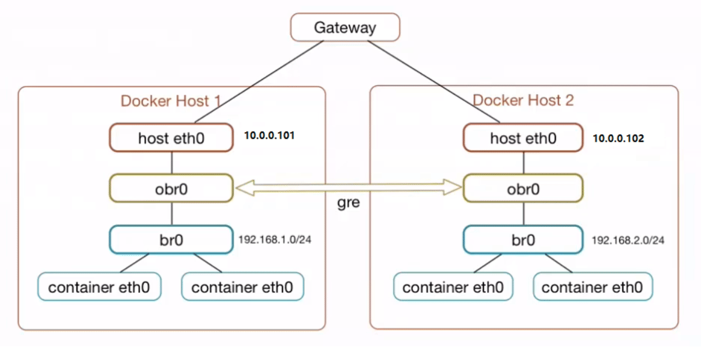
什么是GRE隧道?
GRE:通用路由协议封装
隧道技术(Tunneling) 是一种通过使用互联网络的基础设施在网络之间传递数据的方式。使用隧道传递的数据(或负载)可以是不同协议的数据帧或包。隧道协议将其它协议的数据帧或包重新封装然后通过隧道发送。新的帧头提供路由信息,以便通过互联网传递被封装的负载数据。
利用Open vSwitch实现docker跨主机网络
实现目标: 将两台主机的容器利用Open vSwitch连接起来，实现互联互通
1 环境准备
主机名 操作系统 宿主机IP Docker0 IP 容器 IP
ovs1 ubuntu 18.04 10.0.0.101/24 192.168.1.1/24 192.168.1.0/24
ovs2 ubuntu 18.04 10.0.0.102/24 192.168.2.1/24 192.168.2.0/24
2 修改两台主机的docker0分别使用不同的网段
#配置第一台主机 [root@ovs1 ~]#vim /etc/docker/daemon.json { "bip": "192.168.1.1/24", "registry-mirrors": ["https://si7y70hh.mirror.aliyuncs.com"] } [root@ovs1 ~]#systemctl restart docker [root@ovs1 ~]#ip add show docker0 3: docker0: <NO-CARRIER,BROADCAST,MULTICAST,UP> mtu 1500 qdisc noqueue state DOWN group default inet 192.168.1.1/24 brd 192.168.1.255 scope global docker0 valid_lft forever preferred_lft forever #配置第二台主机 [root@ovs2 ~]#vim /etc/docker/daemon.json { "bip": "192.168.2.1/24", "registry-mirrors": ["https://si7y70hh.mirror.aliyuncs.com"] } [root@ovs2 ~]#systemctl restart docker [root@ovs2 ~]#ip add show docker0 3: docker0: <NO-CARRIER,BROADCAST,MULTICAST,UP> mtu 1500 qdisc noqueue state DOWN group default link/ether 02:42:e2:38:84:83 brd ff:ff:ff:ff:ff:ff inet 192.168.2.1/24 brd 192.168.2.255 scope global docker0 valid_lft forever preferred_lft forever
3 在两个宿主机安装openvswitch-switch和bridge-utils和确认版本
#在第一个主机安装包 [root@ovs1 ~]#apt -y install openvswitch-switch bridge-utils [root@ovs1 ~]#ps -e | grep ovs 6766 ? 00:00:00 ovsdb-server 6826 ? 00:00:00 ovs-vswitchd #查看ovs版本信息和ovs支持的OpenFlow协议的版本 [root@ovs1 ~]#ovs-appctl --version ovs-appctl (Open vSwitch) 2.9.5 [root@ovs1 ~]#ovs-ofctl --version ovs-ofctl (Open vSwitch) 2.9.5 OpenFlow versions 0x1:0x5 #查看网桥 [root@ovs1 ~]#brctl show bridge name bridge id STP enabled interfaces docker0 8000.0242dc29036c no #在第二个主机安装包 [root@ovs2 ~]#apt -y install openvswitch-switch bridge-utils [root@ovs2 ~]#ps -e | grep ovs 6618 ? 00:00:00 ovsdb-server 6680 ? 00:00:00 ovs-vswitchd #查看ovs版本信息和ovs支持的OpenFlow协议的版本 [root@ovs2 ~]#ovs-appctl --version ovs-appctl (Open vSwitch) 2.9.5 [root@ovs2 ~]#ovs-ofctl --version ovs-ofctl (Open vSwitch) 2.9.5 OpenFlow versions 0x1:0x5 [root@ovs2 ~]#brctl show bridge name bridge id STP enabled interfaces docker0 8000.0242e2388483 no
4 在两个宿主机都创建obr0网桥并激活
[root@ovs1 ~]#ovs-vsctl add-br obr0 [root@ovs1 ~]#ip link set dev obr0 up [root@ovs1 ~]#ip a 4: ovs-system: <BROADCAST,MULTICAST> mtu 1500 qdisc noop state DOWN group default qlen 1000 link/ether ce:ff:6f:7f:4b:11 brd ff:ff:ff:ff:ff:ff 5: obr0: <BROADCAST,MULTICAST,UP,LOWER_UP> mtu 1500 qdisc noqueue state UNKNOWN group default qlen 1000 link/ether f2:2b:d7:d8:a1:4d brd ff:ff:ff:ff:ff:ff inet6 fe80::f02b:d7ff:fed8:a14d/64 scope link valid_lft forever preferred_lft forever #第二台主机重复上面 [root@ovs2 ~]#ovs-vsctl add-br obr0 [root@ovs2 ~]#ip link set dev obr0 up [root@ovs2 ~]#ip a 4: ovs-system: <BROADCAST,MULTICAST> mtu 1500 qdisc noop state DOWN group default qlen 1000 5: obr0: <BROADCAST,MULTICAST,UP,LOWER_UP> mtu 1500 qdisc noqueue state UNKNOWN group default qlen 1000 link/ether 82:4f:05:e3:5d:42 brd ff:ff:ff:ff:ff:ff inet6 fe80::804f:5ff:fee3:5d42/64 scope link valid_lft forever preferred_lft forever
5 在两个宿主机创建gre隧道(remote_ip为peer宿主机ip)
注意: 如果有多台docker主机需要构建网络创建多个gre隧道
#一条命令实现,remote_ip指向另一台宿主机的IP [root@ovs1 ~]#ovs-vsctl add-port obr0 gre0 -- set Interface gre0 type=gre options:remote_ip=10.0.0.102 #或者两条命令实现 [root@ovs1 ~]#ovs-vsctl add-port obr0 gre0 [root@ovs1 ~]#ovs-vsctl set Interface gre0 type=gre options:remote_ip=10.0.0.102 [root@ovs1 ~]#ovs-vsctl list-ports obr0 gre0 [root@ovs1 ~]#ovs-vsctl show 84cbdad7-4731-4c2e-b7d7-eecb4a56d27b Bridge "obr0" Port "gre0" Interface "gre0" type: gre options: {remote_ip="10.0.0.102"} Port "obr0" Interface "obr0" type: internal ovs_version: "2.9.5" [root@ovs1 ~]#ip a 4: ovs-system: <BROADCAST,MULTICAST> mtu 1500 qdisc noop state DOWN group default qlen 1000 link/ether ce:ff:6f:7f:4b:11 brd ff:ff:ff:ff:ff:ff 5: obr0: <BROADCAST,MULTICAST,UP,LOWER_UP> mtu 1500 qdisc noqueue state UNKNOWN link/ether f2:2b:d7:d8:a1:4d brd ff:ff:ff:ff:ff:ff inet6 fe80::f02b:d7ff:fed8:a14d/64 scope link valid_lft forever preferred_lft forever 6: gre0@NONE: <NOARP> mtu 1476 qdisc noop state DOWN group default qlen 1000 link/gre 0.0.0.0 brd 0.0.0.0 7: gretap0@NONE: <BROADCAST,MULTICAST> mtu 1462 qdisc noop state DOWN group default qlen 1000 link/ether 00:00:00:00:00:00 brd ff:ff:ff:ff:ff:ff 8: erspan0@NONE: <BROADCAST,MULTICAST> mtu 1450 qdisc noop state DOWN group default qlen 1000 link/ether 00:00:00:00:00:00 brd ff:ff:ff:ff:ff:ff 9: gre_sys@NONE: <BROADCAST,MULTICAST,UP,LOWER_UP> mtu 65000 qdisc fq_codel master ovs-system state UNKNOWN group default qlen 1000 link/ether ce:d2:c1:4e:be:c6 brd ff:ff:ff:ff:ff:ff inet6 fe80::ccd2:c1ff:fe4e:bec6/64 scope link valid_lft forever preferred_lft forever #配置第二个宿主机 [root@ovs2 ~]#ovs-vsctl add-port obr0 gre0 -- set Interface gre0 type=gre options:remote_ip=10.0.0.101 [root@ovs2 ~]#ovs-vsctl list-ports obr0 gre0 [root@ovs2 ~]#ovs-vsctl show e6a3aab3-e224-4834-85fc-2516b33a67e2 Bridge "obr0" Port "gre0" Interface "gre0" type: gre options: {remote_ip="10.0.0.101"} Port "obr0" Interface "obr0" type: internal ovs_version: "2.9.5" [root@ovs2 ~]#ip a 1: lo: <LOOPBACK,UP,LOWER_UP> mtu 65536 qdisc noqueue state UNKNOWN group default qlen 1000 link/loopback 00:00:00:00:00:00 brd 00:00:00:00:00:00 inet 127.0.0.1/8 scope host lo valid_lft forever preferred_lft forever inet6 ::1/128 scope host valid_lft forever preferred_lft forever 2: eth0: <BROADCAST,MULTICAST,UP,LOWER_UP> mtu 1500 qdisc fq_codel state UP group default qlen 1000 link/ether 00:0c:29:01:f3:0c brd ff:ff:ff:ff:ff:ff inet 10.0.0.102/24 brd 10.0.0.255 scope global eth0 valid_lft forever preferred_lft forever inet6 fe80::20c:29ff:fe01:f30c/64 scope link valid_lft forever preferred_lft forever 3: docker0: <NO-CARRIER,BROADCAST,MULTICAST,UP> mtu 1500 qdisc noqueue state DOWN group default link/ether 02:42:e2:38:84:83 brd ff:ff:ff:ff:ff:ff inet 192.168.2.1/24 brd 192.168.2.255 scope global docker0 valid_lft forever preferred_lft forever 4: ovs-system: <BROADCAST,MULTICAST> mtu 1500 qdisc noop state DOWN group default qlen 1000 5: obr0: <BROADCAST,MULTICAST,UP,LOWER_UP> mtu 1500 qdisc noqueue state UNKNOWN group default qlen 1000 link/ether 82:4f:05:e3:5d:42 brd ff:ff:ff:ff:ff:ff inet6 fe80::804f:5ff:fee3:5d42/64 scope link valid_lft forever preferred_lft forever 6: gre0@NONE: <NOARP> mtu 1476 qdisc noop state DOWN group default qlen 1000 link/gre 0.0.0.0 brd 0.0.0.0 7: gretap0@NONE: <BROADCAST,MULTICAST> mtu 1462 qdisc noop state DOWN group default qlen 1000 link/ether 00:00:00:00:00:00 brd ff:ff:ff:ff:ff:ff 8: erspan0@NONE: <BROADCAST,MULTICAST> mtu 1450 qdisc noop state DOWN group default qlen 1000 link/ether 00:00:00:00:00:00 brd ff:ff:ff:ff:ff:ff 10: gre_sys@NONE: <BROADCAST,MULTICAST,UP,LOWER_UP> mtu 65000 qdisc fq_codel master ovs-system state UNKNOWN group default qlen 1000 link/ether 0a:98:48:d9:5f:83 brd ff:ff:ff:ff:ff:ff inet6 fe80::898:48ff:fed9:5f83/64 scope link valid_lft forever preferred_lft forever
6 在两个宿主机将obr0作为接口加入docker0网桥
#第一台宿主机执行 [root@ovs1 ~]#brctl addif docker0 obr0 [root@ovs1 ~]#brctl show bridge name bridge id STP enabled interfaces docker0 8000.0242dc29036c no obr0 #第二台宿主机执行同样操作 [root@ovs2 ~]#brctl addif docker0 obr0 [root@ovs2 ~]#brctl show bridge name bridge id STP enabled interfaces docker0 8000.0242e2388483 no obr0
7 在两个宿主机添加静态路由(网段地址为 peer Docker网段)
#ovs1 添加 peer docker net [root@ovs1 ~]#ip route add 192.168.2.0/24 dev docker0 [root@ovs1 ~]#route -n Kernel IP routing table Destination Gateway Genmask Flags Metric Ref Use Iface 0.0.0.0 10.0.0.2 0.0.0.0 UG 0 0 0 eth0 10.0.0.0 0.0.0.0 255.255.255.0 U 0 0 0 eth0 192.168.1.0 0.0.0.0 255.255.255.0 U 0 0 0 docker0 192.168.2.0 0.0.0.0 255.255.255.0 U 0 0 0 docker0 #ovs2 添加 peer docker net [root@ovs2 ~]#ip route add 192.168.1.0/24 dev docker0 [root@ovs2 ~]#route -n Kernel IP routing table Destination Gateway Genmask Flags Metric Ref Use Iface 0.0.0.0 10.0.0.2 0.0.0.0 UG 0 0 0 eth0 10.0.0.0 0.0.0.0 255.255.255.0 U 0 0 0 eth0 192.168.1.0 0.0.0.0 255.255.255.0 U 0 0 0 docker0 192.168.2.0 0.0.0.0 255.255.255.0 U 0 0 0 docker0
8 在两个宿主机测试跨主机的容器之间的连通性
[root@ovs1 ~]#docker run -it alpine /bin/sh / # ip a 2: gre0@NONE: <NOARP> mtu 1476 qdisc noop state DOWN qlen 1000 link/gre 0.0.0.0 brd 0.0.0.0 3: gretap0@NONE: <BROADCAST,MULTICAST> mtu 1462 qdisc noop state DOWN qlen 1000 link/ether 00:00:00:00:00:00 brd ff:ff:ff:ff:ff:ff 4: erspan0@NONE: <BROADCAST,MULTICAST> mtu 1450 qdisc noop state DOWN qlen 1000 link/ether 00:00:00:00:00:00 brd ff:ff:ff:ff:ff:ff 10: eth0@if11: <BROADCAST,MULTICAST,UP,LOWER_UP,M-DOWN> mtu 1500 qdisc noqueue state UP link/ether 02:42:ac:11:01:02 brd ff:ff:ff:ff:ff:ff inet 192.168.1.2/24 brd 192.168.1.255 scope global eth0 valid_lft forever preferred_lft forever / # ping -c 3 192.168.2.2 PING 192.168.2.2 (192.168.2.2): 56 data bytes 64 bytes from 192.168.2.2: seq=0 ttl=63 time=4.459 ms 64 bytes from 192.168.2.2: seq=1 ttl=63 time=1.279 ms 64 bytes from 192.168.2.2: seq=2 ttl=63 time=0.517 ms --- 192.168.2.2 ping statistics --- 3 packets transmitted, 3 packets received, 0% packet loss round-trip min/avg/max = 0.517/2.085/4.459 ms [root@ovs2 ~]#docker run -it alpine /bin/sh / # ip a 1: lo: <LOOPBACK,UP,LOWER_UP> mtu 65536 qdisc noqueue state UNKNOWN qlen 1000 link/loopback 00:00:00:00:00:00 brd 00:00:00:00:00:00 inet 127.0.0.1/8 scope host lo valid_lft forever preferred_lft forever 2: gre0@NONE: <NOARP> mtu 1476 qdisc noop state DOWN qlen 1000 link/gre 0.0.0.0 brd 0.0.0.0 3: gretap0@NONE: <BROADCAST,MULTICAST> mtu 1462 qdisc noop state DOWN qlen 1000 link/ether 00:00:00:00:00:00 brd ff:ff:ff:ff:ff:ff 4: erspan0@NONE: <BROADCAST,MULTICAST> mtu 1450 qdisc noop state DOWN qlen 1000 link/ether 00:00:00:00:00:00 brd ff:ff:ff:ff:ff:ff 11: eth0@if12: <BROADCAST,MULTICAST,UP,LOWER_UP,M-DOWN> mtu 1500 qdisc noqueue state UP link/ether 02:42:ac:11:02:02 brd ff:ff:ff:ff:ff:ff inet 192.168.2.2/24 brd 192.168.2.255 scope global eth0 valid_lft forever preferred_lft forever / # ping -c 3 192.168.1.2 PING 192.168.1.2 (192.168.1.2): 56 data bytes 64 bytes from 192.168.1.2: seq=0 ttl=63 time=1.553 ms 64 bytes from 192.168.1.2: seq=1 ttl=63 time=1.136 ms 64 bytes from 192.168.1.2: seq=2 ttl=63 time=1.176 ms --- 192.168.1.2 ping statistics --- 3 packets transmitted, 3 packets received, 0% packet loss round-trip min/avg/max = 1.136/1.288/1.553 ms
在第二个主机上再打开一个nginx容器，从第一个主机的容器访问，观察来源的IP
[root@ovs2 ~]#docker pull nginx [root@ovs2 ~]#docker run -d --name nginx nginx d3c26005a7626628f7baf017481217b36e3d69dabfa6cc86fe125f9548e7333c [root@ovs2 ~]#docker exec -it nginx hostname -I 192.168.2.2 [root@ovs2 ~]#docker logs -f nginx 192.168.1.2 - - [27/Feb/2020:09:57:18 +0000] "GET / HTTP/1.1" 200 612 "-" "Wget" "-" #从第一个主机的容器发起请求，可以查看到上面的访问日志输出 [root@ovs1 ~]#docker run -it alpine wget -qO - http://192.168.2.2/ <!DOCTYPE html> <html> <head> <title>Welcome to nginx!</title> <style> body { width: 35em; margin: 0 auto; font-family: Tahoma, Verdana, Arial, sans-serif; } </style> </head> <body> <h1>Welcome to nginx!</h1> <p>If you see this page, the nginx web server is successfully installed and working. Further configuration is required.</p> <p>For online documentation and support please refer to <a href="http://nginx.org/">nginx.org</a>.<br/> Commercial support is available at <a href="http://nginx.com/">nginx.com</a>.</p> <p><em>Thank you for using nginx.</em></p> </body> </html>
9 在两个宿主机用脚本保存配置用于开机启动
#ovs1配置 [root@ovs1 ~]#cat > net.sh <<EOF #!/bin/bash ip link set dev obr0 up brctl addif docker0 obr0 ip route add 192.168.2.0/24 dev docker0 EOF [root@ovs1 ~]#chmod +x net.sh #ovs2配置 [root@ovs2 ~]#cat > net.sh <<EOF #!/bin/bash ip link set dev obr0 up brctl addif docker0 obr0 ip route add 192.168.1.0/24 dev docker0 EOF [root@ovs1 ~]#chmod +x net.sh
方式4: 使用 weave 实现跨主机的容器间互联
weave 介绍
weave 原意编织,意在建立一个虚拟的网络，用于将运行在不同主机的Docker容器连接起来
官网: http://weave.works
github链接: https://github.com/weaveworks/weave#readme
weave实现跨主机容器互联的流程
官方文档: https://www.weave.works/docs/net/latest/install/using-weave/
weave实现跨主机容器互联的流程
- 安装weave
- 启动weave $weave launch
- 连接不同主机
- 通过weave启动容器
实战案例: 通过weave 实现跨主机容器的互联
1 环境准备
主机名 操作系统 宿主机IP Docker0 IP 容器
ubuntu1804 ubuntu 18.04 10.0.0.100/24 172.17.0.1/16 a1
centos7 centos 7.8 10.0.0.200/24 172.17.0.1/16 a2
2 安装weave
[root@ubuntu1804 ~]#wget -O /usr/bin/weave https://raw.githubusercontent.com/zettio/weave/master/weave #在第二个宿主机重复一样的操作 [root@centos7 ~]#wget -O /usr/bin/weave https://raw.githubusercontent.com/zettio/weave/master/weave
3 第一个宿主机启动weave
[root@ubuntu1804 ~]#chmod +x /usr/bin/weave [root@ubuntu1804 ~]#weave launch ... ... Digest: sha256:e666e66bf10c9da5dce52b777e86f9fbb62157169614a80f2dbe324b335c5602 Status: Downloaded newer image for weaveworks/weaveexec:latest 0244d489c1dfe1b403a6e1cf228f260e84cafabea408d8cdabee1b0ca09c7519
4 启动第二宿主机的weave并连接第一个宿主机
#在第二个宿主机启动weave [root@centos7 ~]#chmod +x /usr/bin/weave [root@centos7 ~]#weave launch 10.0.0.100 ... ... ab2ebef1670374ae81c3031c9de96df4136e55749f914eaddcb8e5e5aee60c6c #查看两个宿主机的连接 [root@centos7 ~]#ss -nt State Recv-Q Send-Q LocalAddress:Port Peer Address:Port ESTAB 0 0 10.0.0.200:46521 10.0.0.100:6783
5 通过weave 启动容器
#第一个宿主机初始化环境 [root@ubuntu1804 ~]#eval $(weave env) #第一个宿主机开启动容器 [root@ubuntu1804 ~]#docker run --name a1 -ti weaveworks/ubuntu root@a1:/# hostname -i 10.32.0.1 root@a1:/# ping -c1 a2 PING a2 (10.44.0.0) 56(84) bytes of data. 64 bytes from a2.weave.local (10.44.0.0): icmp_seq=1 ttl=64 time=3.33 ms #第二个宿主机初始化环境 [root@centos7 ~]#eval $(weave env) #第二个宿主机开启动容器 [root@centos7 ~]#docker run --name a2 -ti weaveworks/ubuntu root@a2:/# hostname -i 10.44.0.0 root@a2:/# ping a1 -c1 PING a1 (10.32.0.1) 56(84) bytes of data. 64 bytes from a1.weave.local (10.32.0.1): icmp_seq=1 ttl=64 time=0.474 ms
6 查看宿主机的容器
#自动生成了weave相关的容器 [root@ubuntu1804 ~]#docker ps -a [root@centos7 ~]#docker ps -a
Docker 仓库管理
Docker仓库，类似于yum仓库，是用来保存镜像的仓库。为了方便的管理和使用docker镜像,可以将镜像集中保存至Docker仓库中，将制作好的镜像push到仓库集中保存，在需要镜像时，从仓库中pull镜像即可。
Docker 仓库分为公有云仓库和私有云仓库
公有云仓库: 由互联网公司对外公开的仓库
- 官方
- 阿里云等第三方仓库
私有云仓库: 组织内部搭建的仓库，一般只为组织内部使用，常使用下面软件搭建仓库
- docker registory
- docker harbor
官方 docker 仓库
将自制的镜像上传至docker仓库；https://hub.docker.com/
使用用户仓库管理镜像
每个注册用户都可以上传和管理自已的镜像
1 用户登录
上传镜像前需要执行docker login命令登录，登录后生成~/.docker/config.json文件保存验证信息
格式
docker login [OPTIONS] [SERVER] 选项: -p, --password string Password --password-stdin Take the password from stdin -u, --username string Username
范例:
#登录docker官方仓库方法1 [root@ubuntu1804 ~]#docker login -u xxx -pP@ssw0rd! docker.io #登录docker官方仓库方法2 [root@ubuntu1804 ~]#docker login Username: xxx Password: Login Succeeded #登录成功后,自动生成验证信息,下次会自动登录,而无需手动登录 [root@ubuntu1804 ~]#cat .docker/config.json { "auths": { "https://index.docker.io/v1/": { "auth": "d2FuZ3hpYW9jaHVuOmxidG9vdGgwNjE4" } }, "HttpHeaders": { "User-Agent": "Docker-Client/19.03.5 (linux)" } }
2 给本地镜像打标签
上传本地镜像前必须先给上传的镜像用docker tag 命令打标签
标签格式: docker.io/用户帐号/镜像名:TAG
范例:
[root@ubuntu1804 ~]#docker tag alpine:3.11 docker.io/xxx/alpine:3.11-v1
3 上传本地镜像至官网
#如tag省略,将上传指定REPOSITORY的所有版本,如下示例 #[root@ubuntu1804 ~]#docker push docker.io/xxx/alpine [root@ubuntu1804 ~]#docker push docker.io/xxx/alpine:3.11-v1
docker login 凭证
https://docs.docker.com/engine/reference/commandline/login/
`$HOME/.docker/config.json`
#方法1 echo "1qaz@WSX3edc" | docker login tope365-registry.cn-beijing.cr.aliyuncs.com -u topedocker@tope365 --password-stdin echo "1qaz@WSX3edc" | docker login registry.cn-beijing.aliyuncs.com -u topedocker@tope365 --password-stdin #方法2 (umask 077; mkdir /root/.docker; touch /root/.docker/config.json) dLogin=`echo 'topedocker@tope365:1qaz@WSX3edc'|openssl base64` DOCKER_VERSION=`docker info |grep 'Server Version' |awk -F'[: ]+' '{print $4}'` cat <<EOF > /root/.docker/config.json { "auths": { "registry-vpc.cn-beijing.aliyuncs.com": { "auth": "$dLogin" }, "registry.cn-beijing.aliyuncs.com": { "auth": "$dLogin" }, "tope365-registry-vpc.cn-beijing.cr.aliyuncs.com": { "auth": "$dLogin" }, "tope365-registry.cn-beijing.cr.aliyuncs.com": { "auth": "$dLogin" } }, "HttpHeaders": { "User-Agent": "Docker-Client/$DOCKER_VERSION (linux)" } } EOF 注意还是要login
私有云单机仓库Docker Registry
Docker Registry 介绍
Docker Registry作为Docker的核心组件之一负责单主机的镜像内容的存储与分发，客户端的docker pull以及push命令都将直接与registry进行交互,最初版本的registry 由Python实现，由于设计初期在安
全性，性能以及API的设计上有着诸多的缺陷，该版本在0.9之后停止了开发，由新项目 distribution（新的docker register被称为Distribution）来重新设计并开发下一代registry，新的项目由go语言开发，所有的API，底层存储方式，系统架构都进行了全面的重新设计已解决上一代registry中存在的问题，2016年4月份registry 2.0正式发布，docker 1.6版本开始支持registry 2.0，而八月份随着docker 1.8 发布，docker hub正式启用2.1版本registry全面替代之前版本 registry，新版registry对镜像存储格式进行了重新设计并和旧版不兼容，docker 1.5和之前的版本无法读取2.0的镜像，另外，Registry 2.4版本之后支持了回收站机制，也就是可以删除镜像了，在2.4版本之前是无法支持删除镜像的，所以如果你要使用最好是大于Registry 2.4版本的
官方文档地址: https://docs.docker.com/registry/
官方github 地址: https://github.com/docker/distribution
官方部署文档: https://github.com/docker/docker.github.io/blob/master/registry/deploying.md
以下介绍通过官方提供的docker registry 镜像来简单搭建本地私有仓库环境
环境: 三台主机
- 10.0.0.100: 充当registry仓库服务器
- 10.0.0.101: 上传镜像
- 10.0.0.102: 下载镜像
下载 docker registry 镜像
[root@ubuntu1804 ~]#docker pull registry:2.7.1 [root@ubuntu1804 ~]#docker images REPOSITORY TAG IMAGE ID CREATED SIZE registry 2.7.1 708bc6af7e5e 6 days ago 25.8MB
搭建单机仓库
1 创建授权用户密码使用目录
[root@ubuntu1804 ~]#mkdir -p /etc/docker/auth
2 创建授权的registry用户和密码
创建registry用户，用于上传和下载镜像
[root@ubuntu1804 ~]#apt -y install apache2 [root@ubuntu1804 ~]#htpasswd -Bbn user1 123456 > /etc/docker/auth/registry [root@ubuntu1804 ~]#cat /etc/docker/auth/registry user1:$2y$05$nlRIIYEUBTSLdN2PkzodUue4ry7X/UyscpkkEufTDhEdI8nsyJMR6 #[root@ubuntu1804 ~]#docker run --entrypoint htpasswd registry:2.7.1 -Bbn user1 123456 > /etc/docker/auth/registry
3 启动docker registry 容器
[root@ubuntu1804 ~]# docker run -d -p 5000:5000 --restart=always --name registry -v /etc/docker/auth:/auth -e "REGISTRY_AUTH=htpasswd" -e "REGISTRY_AUTH_HTPASSWD_REALM=Registry Realm" -e REGISTRY_AUTH_HTPASSWD_PATH=/auth/registry registry:2.7.1
4 验证端口和容器
[root@ubuntu1804 ~]#docker ps
CONTAINER ID IMAGE COMMAND CREATED
STATUS PORTS NAMES
998f970dd8ca registry:2.7.1 "/entrypoint.sh /etc…" About a minute
ago Up About a minute 0.0.0.0:5000->5000/tcp registry
[root@ubuntu1804 ~]#ss -ntl
LISTEN 0 128 *:5000 *:*
登录仓库
1 直接登录报错
#docker login 默认使用https登录,而docker registry为http,所以默认登录失败 [root@ubuntu1804 ~]#docker login 10.0.0.100:500 Username: user1 Password: Error response from daemon: Get https://10.0.0.100:500/v2/: dial tcp 10.0.0.100:500: connect: connection refused
2 将registry仓库服务器地址加入service 单元文件
#修改配置让docker login支持http协议 [root@ubuntu1804 ~]#vim /lib/systemd/system/docker.service [root@ubuntu1804 ~]#grep ExecStart /lib/systemd/system/docker.service ExecStart=/usr/bin/dockerd -H fd:// --containerd=/run/containerd/containerd.sock --insecure-registry 10.0.0.100:5000 #或者修改下面文件 [root@ubuntu1804 ~]#vim /etc/docker/daemon.json { "registry-mirrors": ["https://si7y70hh.mirror.aliyuncs.com"], "insecure-registry": ["10.0.0.100:5000"] } [root@ubuntu1804 ~]#systemctl daemon-reload [root@ubuntu1804 ~]#systemctl restart docker
3 再次登录验证成功
[root@ubuntu1804 ~]#docker login 10.0.0.100:5000 Username: user1 Password: Login Succeeded
打标签并上传镜像
在10.0.0.101主机上执行打标签上传
[root@ubuntu1804 ~]#docker tag centos7-base:v1 10.0.0.100:5000/centos7-base:v1 [root@ubuntu1804 ~]#docker push 10.0.0.100:5000/centos7-base:v1
下载镜像并启动容器
在10.0.0.102主机上下载镜像并启动容器
1 先修改docker的service 文件
[root@ubuntu1804 ~]#vim /lib/systemd/system/docker.service
[root@ubuntu1804 ~]#grep ExecStart /lib/systemd/system/docker.service
ExecStart=/usr/bin/dockerd -H fd:// --containerd=/run/containerd/containerd.sock --insecure-registry 10.0.0.100:5000
[root@ubuntu1804 ~]#systemctl daemon-reload
[root@ubuntu1804 ~]#systemctl restart docker
2 登录registry仓库服务器
[root@ubuntu1804 ~]#docker login 10.0.0.100:5000 Username: user1 Password: Login Succeeded
3 下载镜像并启动容器
[root@ubuntu1804 ~]#docker pull 10.0.0.100:5000/centos7-base:v1
Docker 之分布式仓库 Harbor
Harbor 介绍和架构
Harbor 介绍
Harbor是一个用于存储和分发Docker镜像的企业级Registry服务器，由VMware开源，其通过添加一些企业必需的功能特性，例如安全、标识和管理等，扩展了开源 Docker Distribution。作为一个企业级私有Registry服务器，Harbor 提供了更好的性能和安全。提升用户使用Registry构建和运行环境传输镜像的效率。Harbor支持安装在多个Registry节点的镜像资源复制，镜像全部保存在私有 Registry 中，确保数据和知识产权在公司内部网络中管控，另外，Harbor也提供了高级的安全特性，诸如用户管理，访问控制和活动审计等
vmware 官方开源服务: https://vmware.github.io/
harbor 官方github 地址: https://github.com/vmware/harbor
harbor 官方网址: https://goharbor.io/
harbor 官方文档: https://goharbor.io/docs/
github文档: https://github.com/goharbor/harbor/tree/master/docs
Harbor功能官方介绍
- 基于角色的访问控制: 用户与Docker镜像仓库通过“项目”进行组织管理，一个用户可以对多个镜像仓库在同一命名空间（project）里有不同的权限
- 镜像复制: 镜像可在多个Registry实例中复制（同步）。尤其适合于负载均衡，高可用，混合云和多云的场景
- 图形化用户界面: 用户可以通过浏览器来浏览，检索当前Docker镜像仓库，管理项目和命名空间
- AD/LDAP 支: Harbor可以集成企业内部已有的AD/LDAP，用于鉴权认证管理
- 审计管理: 所有针对镜像仓库的操作都可以被记录追溯，用于审计管理
- 国际化: 已拥有英文、中文、德文、日文和俄文的本地化版本。更多的语言将会添加进来
Harbor 组成
RESTful API: 提供给管理员对于Harbor更多的操控, 使得与其它管理软件集成变得更容易
部署简单: 提供在线和离线两种安装工具， 也可以安装到vSphere平台(OVA方式)虚拟设备
- Proxy: 对应启动组件nginx。它是一个nginx反向代理，代理Notary client（镜像认证）、Dockerclient（镜像上传下载等）和浏览器的访问请求（Core Service）给后端的各服务
- UI（Core Service）: 对应启动组件harbor-ui。底层数据存储使用mysql数据库，主要提供了四个子功能:
- UI: 一个web管理页面ui
- API: Harbor暴露的API服务
- Auth: 用户认证服务，decode后的token中的用户信息在这里进行认证；auth后端可以接db、ldap、uaa三种认证实现
- Token服务（上图中未体现）: 负责根据用户在每个project中的role来为每一个dockerpush/pull命令发布一个token，如果从docker client发送给registry的请求没有带token，registry会重定向请求到token服务创建token
- UI: 一个web管理页面ui
- Registry: 对应启动组件registry。负责存储镜像文件，和处理镜像的pull/push命令。Harbor对镜像进行强制的访问控制，Registry会将客户端的每个pull、push请求转发到token服务来获取有效的token
- Admin Service: 对应启动组件harbor-adminserver。是系统的配置管理中心附带检查存储用量，ui和jobserver启动时候需要加载adminserver的配置
- Job Sevice: 对应启动组件harbor-jobservice。负责镜像复制工作的，他和registry通信，从一个registry pull镜像然后push到另一个registry，并记录job_log
- Log Collector: 对应启动组件harbor-log。日志汇总组件，通过docker的log-driver把日志汇总到一起
- DB: 对应启动组件harbor-db，负责存储project、 user、 role、replication、image_scan、access等的metadata数据
安装Harbor
下载地址: https://github.com/vmware/harbor/releases
安装文档: https://github.com/goharbor/harbor/blob/master/docs/install-config/_index.md
环境准备: 共四台主机
- 两台主机harbor服务器，地址: 10.0.0.101|102
- 两台主机harbor客户端上传和下载镜像
安装docker compose
#方法1: 通过pip安装，版本较新docker_compose-1.25.3，推荐使用 [root@ubuntu1804 ~]#apt -y install python-pip [root@ubuntu1804 ~]#pip install docker-compose #方法2: 直接从github下载安装对应版本 #参看说明: https://github.com/docker/compose/releases curl -L https://github.com/docker/compose/releases/download/1.25.3/dockercompose-`uname -s`-`uname -m` -o /usr/bin/docker-compose chmod +x /usr/bin/docker-compose #方法3: 直接安装，版本较旧docker-compose-1.17.1-2，不推荐使用 [root@ubuntu1804 ~]#apt -y install docker-compose
下载Harbor安装包并解压缩
以下使用 harbor 稳定版本1.7.6 安装包
方法1: 下载离线完整安装包,推荐使用
[root@ubuntu1804 ~]#wget https://storage.googleapis.com/harbor-releases/release-1.7.0/harbor-offline-installer-v1.7.6.tgz
方法2: 下载在线安装包 ,比较慢，不是很推荐
[root@ubuntu1804 ~]#wget https://storage.googleapis.com/harbor-releases/release-1.7.0/harbor-online-installer-v1.7.6.tgz
解压缩离线包
[root@ubuntu1804 ~]#mkdir /apps [root@ubuntu1804 ~]#tar xvf harbor-offline-installer-v1.7.6.tgz -C /apps/
编辑配置文件 harbor.cfg
最新文档: https://github.com/goharbor/harbor/blob/master/docs/install-config/configure-yml-file.md
[root@ubuntu1804 ~]#vim /apps/harbor/harbor.cfg #只需要修改下面两行 hostname = 10.0.0.101 #修改此行,指向当前主机IP 或 FQDN harbor_admin_password = 123456 #修改此行指定harbor登录用户admin的密码,默认用户/密码:admin/Harbor12345 #可选项 ui_url_protocol = http #默认即可,如果修改为https,需要指定下面证书路径 ssl_cert = /data/cert/server.crt #默认即可,https时，需指定下面证书文件路径 ss_cert_key = /data/cert/server.key #默认即可,https时，需指定下面私钥文件路径
运行 harbor 安装脚本
#先安装python root@ubuntu1804 ~]#apt -y install python #安装docker harbor root@ubuntu1804 ~]#/apps/harbor/install.sh #安装harbor后会自动开启很多相关容器 [root@ubuntu1804 ~]#docker ps
实现开机自动启动 harbor
方法1: 通过service文件实现
[root@harbor ~]#vim /lib/systemd/system/harbor.service [Unit] Description=Harbor After=docker.service systemd-networkd.service systemd-resolved.service Requires=docker.service Documentation=http://github.com/vmware/harbor [Service] Type=simple Restart=on-failure RestartSec=5 ExecStart=/usr/bin/docker-compose -f /apps/harbor/docker-compose.yml up ExecStop=/usr/bin/docker-compose -f /apps/harbor/docker-compose.yml down [Install] WantedBy=multi-user.target [root@harbor ~]#systemctl daemon-reload [root@harbor ~]#systemctl enable harbor
方法2: 通过 rc.local实现
[root@harbor ~]#cat /etc/rc.local #!/bin/bash cd /apps/harbor /usr/bin/docker-compose up [root@harbor ~]#chmod +x /etc/rc.local
登录 harbor 主机网站
用浏览器访问: http://10.0.0.101/
- 用户名: admin
- 密码: 即前面harbor.cfg中指定的密码
实现 harbor 高可用
Harbor支持基于策略的Docker镜像复制功能，这类似于MySQL的主从同步，其可以实现不同的数据中心、不同的运行环境之间同步镜像，并提供友好的管理界面，大大简化了实际运维中的镜像管理工作，已经有用很多互联网公司使用harbor搭建内网docker仓库的案例，并且还有实现了双向复制功能
单机编排之Docker Compose
Docker Compse介绍
当在宿主机启动较多的容器时候，如果都是手动操作会觉得比较麻烦而且容易出错，此时推荐使用docker 单机编排工具 docker-compose
docker-compose 是 docker 容器的一种单机编排服务，docker-compose 是一个管理多个容器的工具，比如: 可以解决容器之间的依赖关系，就像启动一个nginx 前端服务的时候会调用后端的tomcat，那就得先启动tomcat，但是启动tomcat 容器还需要依赖数据库，那就还得先启动数据库，dockercompose 可以用来解决这样的嵌套依赖关系，并且可以替代docker命令对容器进行创建、启动和停止
等手工的操作
因此，如果说docker命令就像linux的命令，docker compse就像shell脚本，可以自动的执行容器批量操作，从而实现自动化的容器管理，或者说docker命令相当于ansible命令，那么docker compose文件，就相当于ansible-playbook的yaml文件
docker-compose 项目是Docker 官方的开源项目，负责实现对Docker 容器集群的快速编排，dockercompose 将所管理的容器分为三层，分别是工程（project），服务（service）以及容器（container）
github地址: https://github.com/docker/compose
官方地址: https://docs.docker.com/compose/
安装和准备
安装Docker Compose
方法1: 通过pip安装
python-pip 包将安装一个 pip 的命令，pip 命令是一个pyhton 安装包的安装工具，其类似于ubuntu的apt 或者 redhat 的yum，但是pip 只安装 python 相关的安装包，可以在多种操作系统安装和使用pip
此方式当前安装的版本较新，为docker_compose-1.25.3，推荐使用
Ubuntu: # apt update # apt install -y python-pip Centos: # yum install epel-release # yum install -y python-pip # pip install --upgrade pip
范例:
[root@ubuntu1804 ~]#apt -y install python-pip [root@ubuntu1804 ~]#pip install docker-compose [root@ubuntu1804 ~]#docker-compose --version docker-compose version 1.25.3, build unknown #基于python3安装 [root@ubuntu1804 ~]#apt -y install python3-pip [root@ubuntu1804 ~]#pip3 install docker-compose [root@ubuntu1804 ~]#docker-compose --version docker-compose version 1.27.4, build unknown
方法2: 直接从github下载安装对应版本
参看说明: https://github.com/docker/compose/releases
此方法安装版本可方便指定，推荐方法，但网络下载较慢
[root@ubuntu1804 ~]#curl -L https://github.com/docker/compose/releases/download/1.25.3/docker-compose-`uname -s`-`uname -m` -o /usr/local/bin/docker-compose [root@ubuntu1804 ~]#chmod +x /usr/local/bin/docker-compose
方法3: 直接从包仓库安装
此方法安装的版本较旧，不推荐使用
#ubuntu安装 [root@ubuntu1804 ~]#apt -y install docker-compose [root@ubuntu1804 ~]#docker-compose --version docker-compose version 1.17.1, build unknown #CentOS7安装，依赖EPEL源 [root@centos7 ~]#yum -y install docker-compose [root@centos7 ~]#docker-compose --version docker-compose version 1.18.0, buil 8dd22a9
查看命令格式
官方文档: https://docs.docker.com/compose/reference/
docker-compose --help Define and run multi-container applications with Docker. Usage: docker-compose [-f <arg>...] [options] [COMMAND] [ARGS...] docker-compose -h|--help #选项说明: -f，–file FILE #指定Compose 模板文件，默认为docker-compose.yml -p，–project-name NAME #指定项目名称，默认将使用当前所在目录名称作为项目名。 --verbose #显示更多输出信息 --log-level LEVEL #定义日志级别 (DEBUG, INFO, WARNING, ERROR, CRITICAL) --no-ansi #不显示ANSI 控制字符 -v, --version #显示版本 #以下为命令选项，需要在docker-compose.yml|yaml 文件所在在目录里执行 build #构建镜像 bundle #从当前docker compose 文件生成一个以<当前目录>为名称的json格式的Docker Bundle 备 份文件 config -q #查看当前配置，没有错误不输出任何信息 create #创建服务，较少使用 down #停止和删除所有容器、网络、镜像和卷 events #从容器接收实时事件，可以指定json 日志格式，较少使用 exec #进入指定容器进行操作 help #显示帮助细信息 images #显示镜像信息，较少使用 kill #强制终止运行中的容器 logs #查看容器的日志 pause #暂停服务 port #查看端口 ps #列出容器，较少使用 pull #重新拉取镜像，镜像发生变化后，需要重新拉取镜像，较少使用 push #上传镜像 restart #重启服务，较少使用 rm #删除已经停止的服务 run #一次性运行容器 scale #设置指定服务运行的容器个数 start #启动服务 ，较少使用 stop #停止服务，较少使用 top #显示容器运行状态 unpause #取消暂定 up #创建并启动容器 ，较少使用 -d 后台
docker compse 文件格式
官方文档: https://docs.docker.com/compose/compose-file/
docker compose 文件是一个yaml格式的文件，所以注意行首的缩进很严格
默认docker-compose命令会调用当前目录下的docker-compose.yml的文件，因此一般执行dockercompose命令前先进入docker-compose.yml文件所在目录
docker compose文件的格式很不同版本，版本不同，语法和格式有所不同，参看以下列表
3.7 18.06.0+
3.6 18.02.0+
3.5 17.12.0+
3.4 17.09.0+
3.3 17.06.0+
3.2 17.04.0+
3.1 1.13.1+
3.0 1.13.0+
2.4 17.12.0+
2.3 17.06.0+
2.2 1.13.0+
2.1 1.12.0+
2.0 1.10.0+
1.0 1.9.1.+
docker compose版本众多，以下通过具体示例说明docker compose的使用方法
指定同时启动容器的数量
docker-compose up -d –scale service-nginxweb=2
多doker compose文件容器互通
加入对方网络空间就可以了
范例： vm_net与slots-game-net网络空间中容器网络互通
- networks 中
external: true表示使用外部创建好的网络空间solts-game-net - services 中 networks 引用外部网络空间名
networks:
slots-net:
name: slots-game-net
external: true
vm_net:
name: vm_net
driver: bridge
ipam:
config:
- subnet: 172.26.0.0/24
services:
mysqld_exporter:
image: prom/mysqld-exporter:v0.15.1
hostname: mysqld-exporter
container_name: mysqld_exporter
ports:
- 9104
command:
- "--mysqld.username=root:kot2LT4jgJEo2rsnvduF"
# - "--mysqld.address=host.docker.internal:3396"
- "--mysqld.address=mysql-8-slots:3306"
- '--tls.insecure-skip-verify'
restart: always
networks:
- vm_net
- slots-net
# extra_hosts:
# - host.docker.internal:host-gateway
redis_exporter:
image: oliver006/redis_exporter:v1.62.0
container_name: redis_exporter
ports:
- 9121
command:
# - "--redis.addr==redis://host.docker.internal:6389"
- "--redis.addr=redis://redis-stack-slots:6379"
#- "--redis.user=default"
- "--redis.password=OzTKYlJ9KvGZAkYf9B"
- '--debug'
restart: always
networks:
- vm_net
- slots-net
# extra_hosts:
# - host.docker.internal:host-gateway
docker 的资源限制
docker 资源限制
容器资源限制介绍
官方文档: https://docs.docker.com/config/containers/resource_constraints/
默认情况下，容器没有资源的使用限制，可以使用主机内核调度程序允许的尽可能多的资源
Docker 提供了控制容器使用资源的方法,可以限制容器使用多少内存或 CPU等， 在docker run 命令的运行时配置标志实现资源限制功能。
其中许多功能都要求宿主机的内核支持，要检查是否支持这些功能，可以使用docker info 命令 ，如果内核中的某项特性可能会在输出结尾处看到警告， 如下所示:
WARNING: No swap limit support
可通过修改内核参数消除以上警告
范例: 修改内核参数消除以上警告
[root@ubuntu1804 ~]#docker info WARNING: No swap limit support #修改内核参数 [root@ubuntu1804 ~]#vim /etc/default/grub GRUB_CMDLINE_LINUX="cgroup_enable=memory net.ifnames=0 swapaccount=1" [root@ubuntu1804 ~]#update-grub [root@ubuntu1804 ~]#reboot [root@ubuntu1804 ~]#docker info
OOM （Out of Memory Exception）
对于 Linux 主机，如果没有足够的内存来执行其他重要的系统任务，将会抛出OOM (Out of MemoryException,内存溢出、内存泄漏、内存异常 )，随后系统会开始杀死进程以释放内存， 凡是运行在宿主机的进程都有可能被 kill ，包括 Dockerd和其它的应用程序， 如果重要的系统进程被 Kill，会导致和该进程相关的服务全部宕机。通常越消耗内存比较大的应用越容易被kill，比如: MySQL数据库，Java程序等
产生 OOM 异常时， Dockerd尝试通过调整 Docker 守护程序上的 OOM 优先级来减轻这些风险，以便它比系统上的其他进程更不可能被杀死但是容器 的 OOM 优先级未调整， 这使得单个容器被杀死的可能性比 Docker守护程序或其他系统进程被杀死的可能性更大，不推荐通过在守护程序或容器上手动设置– oom -score-adj为极端负数，或通过在容器上设置 – oom-kill-disable来绕过这些安全措施
OOM 优先级机制:
linux会为每个进程算一个分数，最终将分数最高的kill
/proc/PID/oom_score_adj #范围为 -1000 到 1000，值越高容易被宿主机 kill掉，如果将该值设置为 -1000 ，则进程永远不会被宿主机 kernel kill /proc/PID/oom_adj #范围为 -17 到+15 ，取值越高越容易被干掉，如果是 -17 ， 则表示不能被 kill ，该设置参数的存在是为了和旧版本的 Linux 内核兼容。 /proc/PID/oom_score #这个值是系统综合进程的内存消耗量、 CPU 时间 (utime + 、存活时间 (uptime - start time)和 oom_adj 计算出的进程得分 ，消耗内存越多得分越高，容易被宿主机 kernel 强制杀死
范例: 查看OOM相关值
#按内存排序 [root@ubuntu1804 ~]#top [root@ubuntu1804 ~]#cat /proc/19674/oom_adj 0 [root@ubuntu1804 ~]#cat /proc/19674/oom_score 32 [root@ubuntu1804 ~]#cat /proc/19674/oom_score_adj 0 [root@ubuntu1804 ~]#cat /proc/7108/oom_adj 0 [root@ubuntu1804 ~]#cat /proc/7108/oom_score 1 [root@ubuntu1804 ~]#cat /proc/7108/oom_score_adj 0 #docker服务进程的OOM默认值 [root@ubuntu1804 ~]#cat /proc/`pidof dockerd`/oom_adj -8 [root@ubuntu1804 ~]#cat /proc/`pidof dockerd`/oom_score 0 [root@ubuntu1804 ~]#cat /proc/`pidof dockerd`/oom_score_adj -500
容器的内存限制
Docker 可以强制执行硬性内存限制，即只允许容器使用给定的内存大小。
Docker 也可以执行非硬性内存限制，即容器可以使用尽可能多的内存，除非内核检测到主机上的内存不够用了
内存相关选项
官文文档: https://docs.docker.com/config/containers/resource_constraints/
以下设置大部分的选项取正整数，跟着一个后缀 b ， k ， m ， g ，，表示字节，千字节，兆字节或千兆字节
-m ， --memory=： 容器可以使用的最大物理内存量，硬限制，此选项最小允许值为4m （4 MB），此项较常用 --memory-swap : 允许此容器交换到磁盘的内存量,必须先用-m 对内存限制才可以使用,详细说明如下 --memory-swappiness 设置容器使用交换分区的倾向性，值越高表示越倾向于使用swap分区，范围为0-100，0为能不用就不用，100为能用就用 --memoryreservation 允许指定小于 --memory 的软限制 ，当 Docker 检测到主机上的争用或内存不足时会激活该限制，如果使-- memory-reservation，则必须将其设置为低于 --memory 才能使其优先生效。 因为它是软限制，所以不能保证容器不超过限制 --kernel-memory 容器可以使用的最大内核内存量，最小为 4m，由于内核内存与用户空间内存隔离，因此无法与用户空间内存直接交换，因此内核内存不足的容器可能会阻塞宿主机资源，这会对主机和其他容器或者其他服务进程产生影响，因此不建议设置内核内存大小 --oom-kill-disable 默认情况下，如果发生内存不足（OOM）错误，则内核将终止容器中的进程。要更改此行为，请使用该 --oom-kill-disable 选项。仅在设置了该 -m/--memory 选项的容器上禁用OOM。如果 -m 未设置该标志，则主机可能会用完内存，内核可能需要终止主机系统的进程以释放内
范例:
[root@ubuntu1804 ~]#docker run -e MYSQL_ROOT_PASSWORD=123456 -it --rm -m 1g --oom-kill-disable mysql:5.7.29
范例：
[root@ubuntu1804 ~]#sysctl -a |grep swappiness sysctl: reading key "net.ipv6.conf.all.stable_secret" sysctl: reading key "net.ipv6.conf.default.stable_secret" sysctl: reading key "net.ipv6.conf.docker0.stable_secret" sysctl: reading key "net.ipv6.conf.eth0.stable_secret" sysctl: reading key "net.ipv6.conf.lo.stable_secret" vm.swappiness = 60
swap限制
--memory-swap #只有在设置了 --memory 后才会有意义。使用 Swap,可以让容器将超出限制部分的内存置换到磁盘上，WARNING: 经常将内存交换到磁盘的应用程序会降低性能
不同的–memory-swap 设置会产生不同的效果:
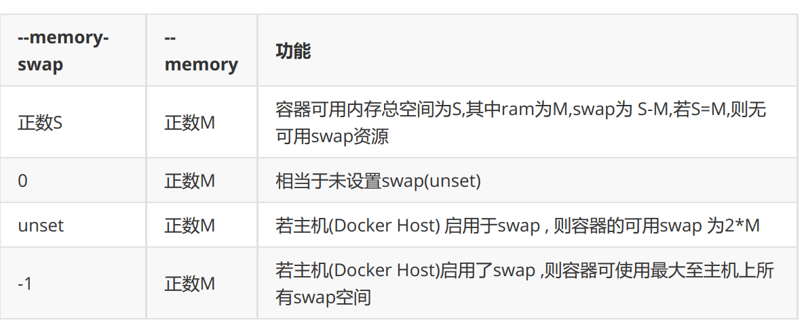
-memory-swap #值为正数， 那么--memory 和--memory-swap 都必须要设置，--memory-swap 表示你能使用的内存和 swap 分区大小的总和，例如: --memory=300m, --memory-swap=1g, 那么该容器能够使用 300m 物理内存和 700m swap，即--memory 是实际物理内存大小值不变，而 swap 的实际大小计算方式为(--memory-swap)-(--memory)=容器可用 swap --memory-swap #如果设置为 0，则忽略该设置，并将该值视为未设置，即未设置交换分区 --memory-swap #如果等于--memory 的值，并且--memory 设置为正整数，容器无权访问 swap -memory-swap #如果未设置，如果宿主机开启了 swap，则实际容器的swap 值最大为 2x( --memory)，即两倍于物理内存大小，例如，如果--memory="300m"与--memory-swap没有设置，该容器可以使用300m总的内存和600m交撒空间,但是并不准确(在容器中使用free 命令所看到的 swap 空间并不精确，毕竟每个容器都可以看到具体大小，宿主机的 swap 是有上限的，而且不是所有容器看到的累计大小) --memory-swap #如果设置为-1，如果宿主机开启了 swap，则容器可以使用主机上 swap 的最大空间
注意: 在容器中执行free命令看到的是宿主机的内存和swap使用，而非容器自身的swap使用情况
范例: 在容器中查看内存
[root@ubuntu1804 ~]#free total used free shared buff/cache available Mem: 3049484 278484 1352932 10384 1418068 2598932 Swap: 1951740 0 1951740 [root@ubuntu1804 ~]#docker run -it --rm -m 2G centos:centos7.7.1908 bash [root@f5d387b5022f /]# free total used free shared buff/cache available Mem: 3049484 310312 1320884 10544 1418288 2566872 Swap: 1951740 0 1951740 [root@f5d387b5022f /]#
stress-ng 压力测试工具
stress-ng是一个压力测试工具，可以通过软件仓库进行安装，也提供了docker版本的容器
范例: 软件包方式安装
[root@centos7 ~]#yum -y install stress-ng [root@ubuntu1804 ~]#apt -y install stress-ng
假如一个容器未做内存使用限制，则该容器可以利用到系统内存最大空间，默认创建的容器没有做内存资源限制。
范例: 默认一个workers 分配256M内存，2个即占512M内存
[root@ubuntu1804 ~]#docker run --name c1 -it --rm lorel/docker-stress-ng --vm 2 #因上一个命令是前台执行，下面在另一个终端窗口中执行，可以看到占用512M左右内存 [root@ubuntu1804 ~]#docker stats CONTAINER ID NAME CPU % MEM USAGE / LIMIT MEM % NET I/O BLOCK I/O PIDS fd184869ff7e c1 91.00% 524.3MiB / 962MiB 54.50% 766B / 0B 860kB / 0B 5
范例: 指定内存最大值
[root@ubuntu1804 ~]#docker run --name c1 -it --rm -m 300m lorel/docker-stress-ng--vm 2 [root@ubuntu1804 ~]#vim /etc/default/grub GRUB_CMDLINE_LINUX="cgroup_enable=memory swapaccount=1 net.ifnames=0" [root@ubuntu1804 ~]#update-grub [root@ubuntu1804 ~]#reboot [root@ubuntu1804 ~]#docker run --name c1 -it --rm -m 300m lorel/docker-stress-ng--vm 2 #在另一个终端窗口执行 [root@ubuntu1804 ~]#docker stats --no-stream CONTAINER ID NAME CPU % MEM USAGE / LIMIT MEM % NET I/O BLOCK I/O PIDS 6a93f6b22034 c1 27.06% 297.2MiB / 300MiB 99.07% 1.45kB / 0B 4.98GB / 5.44GB 5
范例:
[root@ubuntu1804 ~]#docker run --name c2 -it --rm lorel/docker-stress-ng --vm 4 #一次性查看资源使用情况 [root@ubuntu1804 ~]#docker stats --no-stream CONTAINER ID NAME CPU % MEM USAGE / LIMIT MEM % NET I/O BLOCK I/O PIDS fd5fff3c04f7 c2 21.20% 591.1MiB / 962MiB 61.45% 1.31kB / 0B 1.07GB / 46.6MB 9
范例: 容器占用内存造成OOM
[root@ubuntu1804 ~]#docker run -it --rm lorel/docker-stress-ng --vm 6 #另一个终端窗中同时执行下面命令 [root@ubuntu1804 ~]#docker run -it --rm lorel/docker-stress-ng --vm 6 [root@ubuntu1804 ~]#docker stats CONTAINER ID NAME CPU % MEM USAGE / LIMIT MEM % NET I/O BLOCK I/O PIDS f33cebf5b55d c2 -- -- / -- -- -- -- -- b14b597c5a4f cool_banach -- -- / -- -- -- -- -- #观察日志出现OOM现象 [root@ubuntu1804 ~]#tail /var/log/syslog
范例: 查看内存限制
#启动两个工作进程，每个工作进程最大允许使用内存 256M，且宿主机不限制当前容器最大内存 [root@ubuntu1804 ~]#docker run -it --rm lorel/docker-stress-ng --vm 2 [root@ubuntu1804 ~]#ls /sys/fs/cgroup/memory/docker/ [root@ubuntu1804 ~]#cat /sys/fs/cgroup/memory/docker/13e46172e1ae8593569f05a3bebc7b41b7839da44369d43b29102661364ac2cd/memory.limit_in_bytes 9223372036854771712 [root@ubuntu1804 ~]#echo 2^63|bc 9223372036854775808
范例: 内存限制200m
#宿主机限制容器最大内存使用: [root@ubuntu1804 ~]#docker run -it --rm -m 200M lorel/docker-stress-ng --vm 2 --vm-bytes 256M [root@ubuntu1804 ~]#docker stats --no-stream CONTAINER ID NAME CPU % MEM USAGE / LIMIT MEM % NET I/O BLOCK I/O PIDS f69729b2acc1 sleepy_haibt 85.71% 198MiB / 200MiB 98.98% 1.05kB / 0B 697MB / 60.4GB 5 #查看宿主机基于 cgroup 对容器进行内存资源的大小限制 [root@ubuntu1804 ~]#cat /sys/fs/cgroup/memory/docker/f69729b2acc16e032658a4efdab64d21ff97dcb6746d1cef451ed82d5c98a81f/memory.limit_in_bytes 209715200 [root@ubuntu1804 ~]#echo 209715200/1024/1024|bc 200 #动态修改内存限制 [root@ubuntu1804 ~]#echo 300*1024*1024|bc 314572800 [root@ubuntu1804 ~]#echo 314572800 >/sys/fs/cgroup/memory/docker/f69729b2acc16e032658a4efdab64d21ff97dcb6746d1cef451ed82d5c98a81f/memory.limit_in_bytes [root@ubuntu1804 ~]#cat /sys/fs/cgroup/memory/docker/f69729b2acc16e032658a4efdab64d21ff97dcb6746d1cef451ed82d5c98a81f/memory.limit_in_bytes 314572800
范例: 内存大小软限制
[root@ubuntu1804 ~]#docker run -it --rm -m 256m --memory-reservation 128m --name xxx-c1 lorel/docker-stress-ng --vm 2 --vm-bytes 256M [root@ubuntu1804 ~]#docker stats --no-stream CONTAINER ID NAME CPU % MEM USAGE / LIMIT MEM % NET I/O BLOCK I/O PIDS aeb38acde581 xxx-c1 72.45% 253.9MiB / 256MiB 99.20% 976B / 0B 9.47GB / 39.4GB 5 #查看硬限制 [root@ubuntu1804 ~]#cat /sys/fs/cgroup/memory/docker/aeb38acde58155d421f998a54e9a99ab60635fe00c9070da050cc49a2f62d274/memory.limit_in_bytes 268435456 #查看软限制 [root@ubuntu1804 ~]#cat /sys/fs/cgroup/memory/docker/aeb38acde58155d421f998a54e9a99ab60635fe00c9070da050cc49a2f62d274/memory.soft_limit_in_bytes 134217728 #软限制不能高于硬限制 [root@ubuntu1804 ~]#docker run -it --rm -m 256m --memory-reservation 257m --name xxx-c1 lorel/docker-stress-ng --vm 2 --vm-bytes 256M
关闭OOM 机制:
# docker run -it --rm -m 256m --oom-kill-disable --name xxx-c1 lorel/docker-stress-ng --vm 2 --vm-bytes 256M # cat /sys/fs/cgroup/memory/docker/容器 ID/memory.oom_control oom_kill_disable 1 under_oom 1 oom_kill 0
范例: 关闭OOM机制
#查看docker OOM机制默认值 [root@ubuntu1804 ~]#cat /sys/fs/cgroup/memory/docker/memory.oom_control oom_kill_disable 0 under_oom 0 oom_kill 0 #启动容器时关闭OOM机制 [root@ubuntu1804 ~]#docker run -it --rm -m 200m --oom-kill-disable lorel/docker-stress-ng --vm 2 --vm-bytes 256M [root@ubuntu1804 ~]#docker stats --no-stream CONTAINER ID NAME CPU % MEM USAGE / LIMIT MEM % NET I/O BLOCK I/O PIDS b655d88228c0 silly_borg 0.00% 197.2MiB / 200MiB 98.58% 1.31kB / 0B 1.84MB / 484MB 5 [root@ubuntu1804 ~]#cat /sys/fs/cgroup/memory/docker/b655d88228c04d7db6a6ad833ed3d05d4cd596ef09834382e17942db0295dc0c/memory.oom_control oom_kill_disable 1 under_oom 1 oom_kill 0 [root@ubuntu1804 ~]#
交换分区限制:
# docker run -it --rm -m 256m --memory-swap 512m --name xxx-c1 centos bash # cat /sys/fs/cgroup/memory/docker/容器 ID/memory.memsw.limit_in_bytes 536870912 #返回值
7.3 容器的CPU限制
7.3.1 容器的CPU限制介绍
官方文档说明: https://docs.docker.com/config/containers/resource_constraints/
一个宿主机，有几十个核心的CPU，但是宿主机上可以同时运行成百上千个不同的进程用以处理不同的任务，多进程共用一个 CPU 的核心为可压缩资源，即一个核心的 CPU 可以通过调度而运行多个进程，但是同一个单位时间内只能有一个进程在 CPU 上运行，那么这么多的进程怎么在 CPU 上执行和调度的呢？
Linux kernel 进程的调度基于CFS(Completely Fair Scheduler)，完全公平调度
服务器资源密集型
- CPU 密集型的场景: 优先级越低越好，计算密集型任务的特点是要进行大量的计算，消耗CPU 资源，比如计算圆周率、数据处理、对视频进行高清解码等等，全靠CPU 的运算能力。
- IO 密集型的场景: 优先级值高点，涉及到网络、磁盘IO 的任务都是IO 密集型任务，这类任务的特点是 CPU 消耗很少，任务的大部分时间都在等待 IO 操作完成（因为 IO 的速度远远低于 CPU 和内存的速度），比如 Web 应用，高并发，数据量大的动态网站来说，数据库应该为IO 密集型
CFS原理
cfs定义了进程调度的新模型，它给cfs_rq（cfs的run queue）中的每一个进程安排一个虚拟时钟vruntime。如果一个进程得以执行，随着时间的增长，其vruntime将不断增大。没有得到执行的进程vruntime不变, 而调度器总是选择vruntime跑得最慢的那个进程来执行。这就是所谓的“完全公平”。为了区别不同优先级的进程，优先级高的进程vruntime增长得慢，以至于它可能得到更多的运行机会。CFS的意义在于， 在一个混杂着大量计算型进程和IO交互进程的系统中，CFS调度器相对其它调度器在对待IO交互进程要更加友善和公平。
配置默认的CFS调度程序
默认情况下，每个容器对主机的CPU周期的访问都是不受限制的。可以设置各种约束，以限制给定容器对主机CPU周期的访问。大多数用户使用并配置 默认的CFS调度程序。在Docker 1.13及更高版本中，还可以配置 realtime scheduler。
CFS是用于常规Linux进程的Linux内核CPU调度程序。通过几个运行时标志,可以配置对容器拥有的CPU资源的访问量。使用这些设置时，Docker会在主机上修改容器cgroup的设置。
选项 描述
–cpus=
指定一个容器可以使用多少个可用的CPU核心资源。例如，如果主机有两个CPU，如果设置了 –cpus="1.5" ，则可以保证容器最多使用1.5个的CPU(如果是4核CPU，那么还可以是4核心上每核用一点，但是总计是1.5核心的CPU)。这相当于设置 –cpu-period="100000" 和 –cpu-quota="150000" 。此设置可在Docker 1.13及更高版本中可用，目的是替代–cpu-period和–cpu-quota两个参数，从而使配置更简单，但是最大不能超出宿主机的CPU总核心数(在操作系统看到的CPU超线程后的数值)，此项较常用
–cpuperiod=
过时选项,指定CPU CFS调度程序周期，必须与 –cpu-quota 一起使用 。默认为100微秒。大多数用户不会更改默认设置。如果使用Docker 1.13或更高版本，请改用 –cpus
–cpu-quota=
过时选项,在容器上添加 CPU CFS 配额，计算方式为 cpu-quota / cpu-period的结果值，docker1.13 及以上版本通常使用–cpus 设置此值
–cpusetcpus
用于指定容器运行的 CPU 编号，也就是所谓的CPU绑定。如果一个或多个CPU，则容器可以使用逗号分隔的列表或用连字符分隔的CPU范围。第一个CPU的编号为0。有效值可能是 0-3 （使用第一，第二，第三和第四CPU）或1,3 （使用第二和第四CPU）
–cpu-shares
用于设置 cfs 中调度的相对最大比例权重,cpu-share 的值越高的容器，将会分得更多的时间片(宿主机多核 CPU 总数为 100%，假如容器 A 为1024，容器 B为 2048，那么容器 B 将最大是容器 A 的可用 CPU 的两倍 )，默认的时间片1024，最大 262144。这是一个软限制。
使用stress-ng测试cpu配置
[root@ubuntu1804 ~]#docker run -it --rm --name xxx-c1 lorel/docker-stressng |grep cpu
-c N, --cpu N start N workers spinning on sqrt(rand())
--cpu-ops N stop when N cpu bogo operations completed
-l P, --cpu-load P load CPU by P %%, 0=sleep, 100=full load (see -c)
--cpu-method m specify stress cpu method m, default is all
Example: stress-ng --cpu 8 --io 4 --vm 2 --vm-bytes 128M --fork 4 --timeout 10s
范例：不限制容器CPU
[root@ubuntu1804 ~]#lscpu |grep CPU CPU op-mode(s): 32-bit, 64-bit CPU(s): 6 On-line CPU(s) list: 0-5 CPU family: 6 Model name: Intel(R) Core(TM) i7-4710HQ CPU @ 2.50GHz CPU MHz: 2494.236 NUMA node0 CPU(s): 0-5 #占用4个CPU资源.但只是平均的使用CPU资源 [root@ubuntu1804 ~]#docker run -it --rm lorel/docker-stress-ng --cpu 4 [root@ubuntu1804 ~]#docker stats --no-stream CONTAINER ID NAME CPU % MEM USAGE / LIMIT MEM % NET I/O BLOCK I/O PIDS 818a85e1da2f frosty_taussig 595.57% 1.037GiB / 2.908GiB 35.64% 1.12kB / 0B 0B / 0B 13 [root@ubuntu1804 ~]#cat /sys/fs/cgroup/cpuset/docker/818a85e1da2f9a4ef297178a9dc09b338b2308108195ad8d4197a1c47febcbff/cpuset.cpus 0-5 [root@ubuntu1804 ~]#top
范例: 查看 stress-n 关于cpu的帮助范例:
范例: 限制使用CPU
[root@ubuntu1804 ~]#docker run -it --rm --cpus 1.5 lorel/docker-stress-ng --cpu 4 [root@ubuntu1804 ~]#docker stats --no-stream CONTAINER ID NAME CPU % MEM USAGE / LIMIT MEM % NET I/O BLOCK I/O PIDS 9f8b2e693113 busy_hodgkin 147.71% 786.8MiB / 2.908GiB 26.42% 836B / 0B 0B / 0B 13 [root@ubuntu1804 ~]#top
范例: 限制CPU
[root@ubuntu1804 ~]#docker run -it --rm --cpu-quota 2000 --cpu-period 1000 lorel/docker-stress-ng --cpu 4 [root@ubuntu1804 ~]#docker stats --no-stream CONTAINER ID NAME CPU % MEM USAGE / LIMIT MEM % NET I/O BLOCK I/O PIDS bd949bb6698e affectionate_chebyshev 185.03% 1.037GiB / 2.908GiB 35.64% 836B / 0B 0B / 0B 13 [root@ubuntu1804 ~]#
范例: 绑定CPU
#一般不建议绑在0号CPU上，因0号CPU一般会较忙 [root@ubuntu1804 ~]#docker run -it --rm --cpus 1.5 --cpuset-cpus 2,4-5 lorel/docker-stress-ng --cpu 4 [root@ubuntu1804 ~]#docker stats --no-stream CONTAINER ID NAME CPU % MEM USAGE / LIMIT MEM % NET I/O BLOCK I/O PIDS 585879094e73 hungry_albattani 154.35% 1.099GiB / 2.908GiB 37.79% 906B / 0B 0B / 0B 13 [root@ubuntu1804 ~]#cat /sys/fs/cgroup/cpuset/docker/585879094e7382d2ef700947b4454426eee7f943f8d1438fe42ce34df789227b/cpuset.cpus 2,4-5 [root@ubuntu1804 ~]#top
范例: 多个容器的CPU利用率比例
#同时开两个容器 [root@ubuntu1804 ~]#docker run -it --rm --name c1 --cpu-shares 1000 lorel/docker-stress-ng --cpu 4 [root@ubuntu1804 ~]#docker run -it --rm --name c2 --cpu-shares 500 lorel/docker-stress-ng --cpu 4 [root@ubuntu1804 ~]#docker stats --no-stream CONTAINER ID NAME CPU % MEM USAGE / LIMIT MEM % NET I/O BLOCK I/O PIDS a1d4c6e6802d c2 195.88% 925.3MiB / 2.908GiB 31.07% 726B / 0B 0B / 0B 13 d5944104aff4 c1 398.20% 1.036GiB / 2.908GiB 35.64% 906B / 0B 0B / 0B 13 [root@ubuntu1804 ~]# #查看c1容器的cpu利用比例 [root@ubuntu1804 ~]#cat /sys/fs/cgroup/cpu,cpuacct/docker/d5944104aff40b7b76f536c45a68cd4b98ce466a73416b68819b9643e3f49da7/cpu.shares 1000 #查看c2容器的cpu利用比例 [root@ubuntu1804 ~]#cat /sys/fs/cgroup/cpu,cpuacct/docker/a1d4c6e6802d1b846b33075f3c1e1696376009e85d9ff8756f9a8d93d3da3ca6/cpu.shares 500 #再打开新的容器，cpu分配比例会动态调整 [root@ubuntu1804 ~]#docker run -it --rm --name c3 --cpu-shares 2000 lorel/docker-stress-ng --cpu 4 [root@ubuntu1804 ~]#docker stats --no-stream CONTAINER ID NAME CPU % MEM USAGE / LIMIT MEM % NET I/O BLOCK I/O PIDS c2d54818e1fe c3 360.15% 664.5MiB / 2.908GiB 22.31% 726B / 0B 1.64GB / 150MB 13 a1d4c6e6802d c2 82.94% 845.2MiB / 2.908GiB 28.38% 936B / 0B 103MB / 4.54MB 13 d5944104aff4 c1 181.18% 930.1MiB / 2.908GiB 31.23% 1.12kB / 0B 303MB / 19.8MB 13
范例: 动态调整cpu shares值
[root@ubuntu1804 ~]#echo 2000 >/sys/fs/cgroup/cpu,cpuacct/docker/a1d4c6e6802d1b846b33075f3c1e1696376009e85d9ff8756f9a8d93d3da3ca6/cpu.shares [root@ubuntu1804 ~]#docker stats --no-stream CONTAINER ID NAME CPU % MEM USAGE / LIMIT MEM % NET I/O BLOCK I/O PIDS a1d4c6e6802d c2 389.31% 1.037GiB / 2.908GiB 35.64% 1.01kB / 0B 1.16GB / 14MB 13 d5944104aff4 c1 200.28% 1.036GiB / 2.908GiB 35.63% 1.19kB / 0B 2.66GB / 26.7MB 13 [root@ubuntu1804 ~]#
可视化图形工具Portainer
Portainer介绍
Portainer是一个可视化的容器镜像的图形管理工具，利用Portainer可以轻松构建，管理和维护Docker环境。 而且完全免费，基于容器化的安装方式，方便高效部署。
安装 Portainer
官方安装说明: https://www.portainer.io/installation/
[root@ubuntu1804 ~]#docker search portainer |head -n 3 #portainer项目废弃 [root@ubuntu1804 ~]#docker pull portainer/portainer #portainer-ce项目代替portainer [root@ubuntu1804 ~]#docker pull portainer/portainer-ce [root@ubuntu1804 ~]#docker volume create portainer_data [root@ubuntu1804 ~]#docker run -d -p 8000:8000 -p 9000:9000 --name=portainer --restart=always -v /var/run/docker.sock:/var/run/docker.sock -vportainer_data:/data portainer/portainer-ce
登录和使用Portainer
用浏览器访问: http://localhost:9000 可以看到以下界面
设置admin用户密码，需要输入两次超过8个字符的相同的密码
docker 命令总结
attach # 当前shell下attach连接指定运行镜像 build # 通过dockerfile定制镜像 commit # 提交当前容器为新的镜像 cp # 从容器中拷贝指定文件或者目录到宿主机中 create # 创建一个新的容器，同run 但不启动容器 diff # 查看docker 容器变化 events # 从docker 服务获取容器实时事件 exec # 在已存在的容器上运行命令 export # 导出容器的内容作为一个 tar 归档文件[对应import] history # 展示一个镜像形成历史 images # 列出系统当前镜像 import # 从tar包中的内容创建一个新的文件系统映像[对应export] info # 显示系统相关信息 inspect # 查看容器详细信息 kill # kill 指定容器load # 从一个tar 包中加载一个镜像[对应save] login # 注册或者登陆一个docker源服务器 logout # 从当前docker registry退出 logs # 输出当前容器日志信息 port # 查看映射端口对应的容器内部源端口 pause # 暂停容器 ps # 列出容器列表 pull # 从docker镜像源服务器拉取指定镜像或者库镜像 push # 推送指定镜像或者库镜像至docker源服务器 restart # 重启运行的容器 rm # 移除一个或者多个容器 rmi # 移除一个或多个镜像[无容器使用该镜像才可删除，否则需要删除相关容器才可继续或 -f 强制删除] run # 创建一个新的容器并运行一个命令 save # 保存一个镜像为一个tar包[对应load] search # 在docker hub 中搜索镜像 start # 启动容器 stop # 停止容器 tag # 给源中镜像打标签 top # 查看容器中运行的进程信息 unpause # 取消暂停容器 version # 查看docker版本号 wait # 截取容器停止时的退出状态值
拓展
多平台构建
https://docs.docker.com/build/concepts/overview/
Linux 发行版通过 deb 或者 rpm 包所安装的 docker 内置了 buildx，不需要另行安装。
如果你的 docker 没有 buildx 命令，可以下载二进制包进行安装：
- 首先从 Docker buildx 项目的 release 页面找到适合自己平台的二进制文件。
- 下载二进制文件到本地并重命名为 docker-buildx，移动到 docker 的插件目录 ~/.docker/cli-plugins。
- 向二进制文件授予可执行权限。
如果本地的 docker 版本高于 19.03，可以通过以下命令直接在本地构建并安装，这种方式更为方便：
DOCKER_BUILDKIT=1 docker build --platform=local -o . "https://github.com/docker/buildx.git" mkdir -p ~/.docker/cli-plugins mv buildx ~/.docker/cli-plugins/docker-buildx
启用binfmt_misc
CentOS用户建议Linux内核升级到4.x以上。
docker run --privileged --rm tonistiigi/binfmt --install all # 验证binfmt_misc是否开启 ls -al /proc/sys/fs/binfmt_misc/ # 验证是否启用了相应的处理器 cat /proc/sys/fs/binfmt_misc/qemu-aarch64
从默认的构建器切换到多平台构建器
# Switch to the new builder: docker buildx create --use --name mybuild # 启动构建器 docker buildx inspect mybuild --bootstrap # 查看当前使用的构建器及构建器支持的 CPU 架构，可以看到支持很多 CPU 架构 docker buildx ls
禁用默认的 Attestations 功能,避免在合并镜像清单时出现错误
cat <<\EOF>> ~/.bash_profile
#docker buildx https://docs.docker.com/build/building/variables/#buildx_no_default_attestations
export BUILDX_NO_DEFAULT_ATTESTATIONS=1
EOF
构建多平台镜像
# 创建一个 Dockerfile FROM amazoncorretto:8u352 # openjdk:8-jre-slim LABEL maintainer jasper.xu@xxx.com ENV PFGC_SERVICE_NAME=rocketmq-exporter \ PFGC_SERVICE_PATH=/opt/rocketmq-exporter \ PFGC_SERVICE_VERSION=0.0.2 RUN ln -sf /usr/share/zoneinfo/Asia/Kolkata /etc/localtime \ && echo 'Asia/Kolkata' > /etc/timezone \ && mkdir -p ${PFGC_SERVICE_PATH}/ COPY ${PFGC_SERVICE_NAME}-${PFGC_SERVICE_VERSION}-SNAPSHOT.jar ${PFGC_SERVICE_PATH} EXPOSE 5557 WORKDIR ${PFGC_SERVICE_PATH}
使用 buildx 构建多架构的 Docker 镜像
利用缓存构建
#为了提升构建效率，可以利用 Docker Buildx 的缓存机制。这将避免重复下载和构建相同的依赖项，从而节省时间 #配置缓存，并推送 docker buildx build --platform linux/amd64,linux/arm64 -t user/app:latest --build-arg BUILDKIT_INLINE_CACHE=1 --cache-from=user/app:cache --push . #推送带缓存的镜像 docker push user/app:cache
构建支持 arm64 和 amd64的镜像
#Docker Buildx 支持同时构建多个架构的镜像，并且可以将它们打包到一个多架构镜像中进行推送 docker buildx build --platform linux/amd64,linux/arm64 -t user/app:latest --push . # 需要提前通过 docker login 命令登录认证 # buildx 会通过 QEMU 和 binfmt_misc 分别为 3 个不同的 CPU 架构（arm，arm64 和 amd64）构建 3 个不同的镜像。构建完成后，就会创建一个 manifest list，其中包含了指向这 3 个镜像的指针。 # 现在就可以通过 docker pull 拉取刚刚创建的镜像了，Docker 将会根据你的 CPU 架构拉取匹配的镜像
创建 Manifest 并推送
#在某些情况下，你可能需要手动创建和推送 Docker Manifest，这可以结合多个单架构镜像到一个多架构镜像中。 #1.创建多架构清单 docker manifest create user/app:latest user/app:amd64 user/app:arm64 #2.注解每个架构的属性 docker manifest annotate user/app:latest user/app:arm64 --arch arm64 docker manifest annotate user/app:latest user/app:amd64 --arch amd64 #3.推送多架构镜像 docker manifest push user/app:latest
保存到本地并推送到私有仓库
# 如果想将构建好的镜像保存在本地，可以将 type 指定为 docker，但必须分别为不同的 CPU 架构构建不同的镜像，不能合并成一个镜像，即： docker buildx build -t giaogiao/hello-arch --platform=linux/arm -o type=docker . docker buildx build -t giaogiao/hello-arch --platform=linux/arm64 -o type=docker . docker buildx build -t giaogiao/hello-arch --platform=linux/amd64 -o type=docker .
查看镜像支持的CPU架构
docker inspect public.ecr.aws/ubuntu/mysql:8.0-22.04_edge
platform段对应支持平台
[root@proxy ~]# docker manifest inspect public.ecr.aws/ubuntu/mysql:8.0-22.04_edge
{
"schemaVersion": 2,
"mediaType": "application/vnd.docker.distribution.manifest.list.v2+json",
"manifests": [
{
"mediaType": "application/vnd.docker.distribution.manifest.v2+json",
"size": 1620,
"digest": "sha256:eae0acedcab5d0b39ef9be92ed2e1e17e41ea894d586dade0b5a90d254a4f283",
"platform": {
"architecture": "amd64",
"os": "linux"
}
},
{
"mediaType": "application/vnd.docker.distribution.manifest.v2+json",
"size": 1620,
"digest": "sha256:094e0938c81ae79e59c90ab3b0ffb85043f6dae9e7d3e5553fe2b0b00fb393d5",
"platform": {
"architecture": "s390x",
"os": "linux"
}
},
{
"mediaType": "application/vnd.docker.distribution.manifest.v2+json",
"size": 1620,
"digest": "sha256:49502011e2665acec7ab85899ebc4d5042cfe182a04f919f5249b05ab96a0485",
"platform": {
"architecture": "ppc64le",
"os": "linux"
}
},
{
"mediaType": "application/vnd.docker.distribution.manifest.v2+json",
"size": 1620,
"digest": "sha256:1a3d86e082d613da0beecfe24a4545813d2501b81e417eab6be0bda86f776535",
"platform": {
"architecture": "arm64",
"os": "linux",
"variant": "v8"
}
}
]
}
构建基础镜像
多级构建能够有效减少镜像的层数和大小，同时将开发环境与生产环境分离。
FROM --platform=$BUILDPLATFORM node:16 AS builder WORKDIR /app COPY package.json ./ RUN npm install COPY . . FROM --platform=$TARGETPLATFORM node:16-alpine WORKDIR /app COPY --from=builder /app . CMD ["node", "app.js"]
jdk amd 与 arm 平台
基于ubuntu
[root@ip-172-31-5-34 .jasper]# ll -rw-r--r--. 1 root root 75425137 Nov 19 18:05 jdk-8u431-linux-aarch64.tar.gz -rw-r--r--. 1 root root 148362647 Dec 2 18:44 jdk-8u431-linux-x64.tar.gz cat <<\EOF> Dockerfile FROM ubuntu:25.04 AS builder ENV LANG=en_US.UTF-8 JAVA_VERSION=1.8.0_431 JAVA_HOME=/usr/local/jdk1.8 ADD jdk-8u431-linux-x64.tar.gz /usr/local/amd ADD jdk-8u431-linux-aarch64.tar.gz /usr/local/arm RUN set -eux; \ arch_tmp="$(arch)"; \ case "$arch_tmp" in \ 'x86_64') \ mv /usr/local/amd/jdk1.8.0_431 /usr/local/jdk1.8;; \ 'aarch64') \ mv /usr/local/arm/jdk1.8.0_431 /usr/local/jdk1.8;; \ esac FROM ubuntu:25.04 ENV LANG=en_US.UTF-8 JAVA_VERSION=1.8.0_431 JAVA_HOME=/usr/local/jdk1.8 COPY --from=builder ${JAVA_HOME} /usr/local/jdk1.8 RUN set -x && rm -rf ${JAVA_HOME}/*src.zip /tmp/* RUN apt update && apt install -y net-tools iproute2 iputils-ping less telnet file curl && cd /opt && curl -O https://alibaba.github.io/arthas/arthas-boot.jar ENV PATH=/usr/local/jdk1.8/bin:/usr/local/sbin:/usr/local/bin:/usr/sbin:/usr/bin:/sbin:/bin EOF #登录ECR并创建仓库 aws ecr get-login-password --region ap-south-1 | docker login --username AWS --password-stdin xxxxx.dkr.ecr.ap-south-1.amazonaws.com aws ecr create-repository --repository-name devops/jdk #构建并推送 docker buildx build -t xxxx.dkr.ecr.ap-south-1.amazonaws.com/devops/jdk:1.8 --platform=linux/arm64,linux/amd64 --push . #检查Docker 清单列表 aws ecr batch-get-image --repository-name devops/jdk --image-ids imageTag=1.8 --query 'images[].imageManifest' --output text
基于centos
~]# ll
-rw-r--r-- 1 root root 951 Apr 19 10:33 Dockerfile
-rw-r--r-- 1 root root 74554190 Apr 18 14:16 jdk-8u361-linux-aarch64.tar.gz
-rw-r--r-- 1 root root 138762230 Apr 18 14:16 jdk-8u361-linux-x64.tar.gz
cat <<\EOF> Dockerfile
FROM centos:centos7.9.2009 as builder
ENV LANG=en_US.UTF-8 JAVA_VERSION=1.8.0_361 JAVA_HOME=/usr/local/jdk1.8
ADD jdk-8u361-linux-x64.tar.gz /usr/local/amd
ADD jdk-8u361-linux-aarch64.tar.gz /usr/local/arm
RUN set -eux; \
arch_tmp="$(arch)"; \
case "$arch_tmp" in \
'x86_64') \
mv /usr/local/amd/jdk1.8.0_361 /usr/local/jdk1.8;; \
'aarch64') \
mv /usr/local/arm/jdk1.8.0_361 /usr/local/jdk1.8;; \
esac
FROM centos:centos7.9.2009
ENV LANG=en_US.UTF-8 JAVA_VERSION=1.8.0_361 JAVA_HOME=/usr/local/jdk1.8
COPY --from=builder ${JAVA_HOME} /usr/local/jdk1.8
RUN set -x && rm -rf ${JAVA_HOME}/*src.zip /tmp/*
RUN yum install net-tools iproute iputils less telnet -y && yum install less which file -y && yum clean all && cd /opt && curl -O https://alibaba.github.io/arthas/arthas-boot.jar
ENV PATH=/usr/local/sbin:/usr/local/bin:/usr/sbin:/usr/bin:/sbin:/bin:/usr/local/jdk1.8/bin
EOF
docker buildx build -t harbor.xxx.com/devops/serverjdk:20221205_1.8 --platform=linux/arm64,linux/amd64 --push .
容器多进程管理
- s6-svscan
- supervisord
资源清理
Docker 18.09 引入了 BuildKit ，提升了构建过程的性能、安全、存储管理等能力。
#查看磁盘使用情况 docker system df #查看所有情况 docker system df -v 展示以下部分 Images space usage: Containers space usage: Local Volumes space usage: Build cache usage:
清理
# 清理关闭的容器、无用的数据卷和网络等 docker system prune #连同没有容器使用的镜像一起清除 docker system prune -a
构建缓存清理
#清理所有构建缓存 docker builder prune #清理10天之前的缓存 docker builder prune --filter 'until=240h' #系统crontab 定时清理 0 0 * * * echo 'y'| docker builder prune
容器排查
查看进程是否属于docker
ps -f --ppid 1580
--------------
[root@mesos24 /usr/local/nginx/conf/vhosts]# ps -f --ppid 1580
UID PID PPID C STIME TTY TIME CMD
root 3861 1580 0 Apr22 ? 05:00:54 docker-proxy -proto tcp -host-ip 0.0.0.0 -host-port 5001 -container-ip 172.17.0.3 -container-port 5000
root 3909 1580 0 Apr22 ? 00:03:15 /bin/s6-svscan /service
root 3973 1580 0 Apr22 ? 04:56:02 docker-proxy -proto tcp -host-ip 0.0.0.0 -host-port 80 -container-ip 172.17.0.4 -container-port 5001
root 4012 1580 0 Apr22 ? 06:16:01 docker-proxy -proto tcp -host-ip 0.0.0.0 -host-port 443 -container-ip 172.17.0.4 -container-port 5000
root 4051 1580 0 Apr22 ? 04:56:08 docker-proxy -proto tcp -host-ip 0.0.0.0 -host-port 5000 -container-ip 172.17.0.4 -container-port 5000
root 4088 1580 0 Apr22 ? 00:00:00 nginx: master process nginx -g daemon off;
root 48577 1580 0 May17 ? 03:27:59 docker-proxy -proto tcp -host-ip 0.0.0.0 -host-port 32769 -container-ip 172.17.0.2 -container-port 5000
root 48602 1580 0 May17 ? 09:02:11 registry serve /etc/docker/registry/config.yml
You have new mail in /var/spool/mail/root
[root@mesos24 /usr/local/nginx/conf/vhosts]# ps -ef|grep nginx
root 4088 1580 0 Apr22 ? 00:00:00 nginx: master process nginx -g daemon off;
101 4121 4088 0 Apr22 ? 02:53:27 nginx: worker process
root 55752 1 1 11:06 ? 00:00:31 nginx: master process /usr/local/nginx-1.12.2/sbin/nginx
root 60243 55752 0 11:48 ? 00:00:00 nginx: worker process
root 60244 55752 0 11:48 ? 00:00:00 nginx: worker process
root 60245 55752 0 11:48 ? 00:00:00 nginx: worker process
root 60246 55752 0 11:48 ? 00:00:00 nginx: worker process
root 60267 55556 0 11:48 pts/2 00:00:00 grep --color=auto nginx
[root@mesos24 /usr/local/nginx/conf/vhosts]# ps -f --ppid 4088
UID PID PPID C STIME TTY TIME CMD
101 4121 4088 0 Apr22 ? 02:53:27 nginx: worker process
pstree或pgrep吧，就是pstree写脚本有点麻烦
[root@mesos24 /usr/local/nginx/conf/vhosts]# ll /proc/1580 |grep exe
lrwxrwxrwx 1 root root 0 Apr 22 09:23 exe -> /usr/bin/docker-current
[root@mesos24 /usr/local/nginx/conf/vhosts]# pstree -p $(pgrep -f "/usr/bin/docker-current")|grep nginx
|-nginx(4088)---nginx(4121)
找到本机docker进程
有这样的情况，我们用ps命令发现的进程不一定是本机进程，可能是docker容器里的进程。那么有什么方法来确定是不是docker进程呢？
方法1
ps -efH 命令
方法2
systemd-cgls 命令展示所有的cgroups和在运行的进程。
[root@sw-edge ~]# systemd-cgls ├─1 /usr/lib/systemd/systemd --switched-root --system --deserialize 21 ├─docker │ └─8bc37aa7fec9708d514b37a097dd710ae77f8ea17962a1cae6ef030f2a0f4b24 │ ├─763 s6-svscan /etc/s6/ -t 5 │ ├─780 s6-supervise 02-sw-edge-task01
也可以用systemd-cgtop命令
示例
# top -p 2910 -b1 PID USER PR NI VIRT RES SHR S %CPU %MEM TIME+ COMMAND 2910 root 20 0 48.1g 47.8g 9704 S 0.0 78.7 38000:19 agent [root@iz2zebtgnlb4lk5d6s0lagz ~] eth0 = 10.16.30.8 # systemd-cgls |grep -C3 2910 │ ├─kubepods-besteffort.slice │ │ ├─kubepods-besteffort-podc26d0a17_60be_4ae1_860e_35261a108ba8.slice │ │ │ ├─docker-2c12d284f60e211e74c0ec6585e0dd358a8cf3819973ac49a19ab0bb095fe1b0.scope │ │ │ │ └─2910 agent │ │ │ └─docker-ee47a832ee8313c211afee65f5aff04b43813ead87f381520195e1622216a767.scope [root@iz2zebtgnlb4lk5d6s0lagz ~] eth0 = 10.16.30.8 # docker ps |grep 2c12d2 2c12d284f60e e2fedec23950 "run.sh" 7 weeks ago Up 7 weeks k8s_cluster-register_cattle-cluster-agent-57d964bc59-zd45n_cattle-system_c26d0a17-60be-4ae1-860e-35261a108ba8_0
方法3
the process run in a docker container is a child of a process named containerd-shim (in Docker v18.09.4)
First figure out the process IDs of the containerd-shim processes.
For each of them, find their child process.
pgrep containerd-shim 7105 7141 7248
To find the child process of parent process 7105:
pgrep -P 7105 7127
In the end you could get the list with:
for i in $(pgrep containerd-shim); do pgrep -P $i; done 7127 7166 7275
ps -axfo pid,ppid,uname,cmd
方法4
docker ps
方法5
找到容器运行的进程
DID=$(docker inspect -f '{{.State.Pid}}' <Container ID>);ps --ppid $DID -o pid,ppid,cmd [root@sw-edge ~]# docker ps -q 8bc37aa7fec9 [root@sw-edge ~]# DID=$(docker inspect -f '{{.State.Pid}}' 8bc37aa7fec9);ps --ppid $DID -o pid,ppid,cmd PID PPID CMD 780 763 s6-supervise 02-sw-edge-task01 781 763 s6-supervise 03-sw-edge-cron01 782 763 s6-supervise 01-sw-edge-app01
通过docker overlay2 目录名查找对应容器名
cd /var/lib/docker/overlay2/
du -s ./* | sort -rn | more
oid="40235d8989bfbc6b95cdb5c28c1224728138ce746f0c81ca68a9ef1782f33541"
docker ps -q | xargs docker inspect --format '{{.State.Pid}}, {{.Id}}, {{.Name}}, {{.GraphDriver.Data.WorkDir}}' | grep $oid
docker image ls -q | xargs docker inspect --format '{{.Id}}, {{.RepoTags}}, {{.GraphDriver.Data.LowerDir}}, {{.GraphDriver.Data.UpperDir}}'|grep $oid
# 输出依次为，进程pid、容器ID、容器名、存储work路径，即可确定是哪个容器。
# diff 对应 容器
[root@ip-172-21-39-111 root]# pwd
/var/lib/docker/overlay2/40235d8989bfbc6b95cdb5c28c1224728138ce746f0c81ca68a9ef1782f33541/diff/root
[root@ip-172-21-39-111 root]# du -sh *
1.9G logs
24K nacos
# 对应容器中
bash-4.2# cd /root/
bash-4.2# du -sh *
1.9G logs
24K nacos
镜像加速
临时使用：
docker pull dockerpull.com/ikubernetes/demoapp:v2.1
永久配置：
sudo mkdir -p /etc/docker sudo tee /etc/docker/daemon.json <<-'EOF' { "registry-mirrors": [ "https://docker.1ms.run", "https://docker.xuanyuan.me", "https://doublezonline.cloud", "https://dockerpull.com", "https://docker.anyhub.us.kg", "https://dockerhub.jobcher.com", "https://dockerhub.icu", "https://docker.awsl9527.cn" ] } EOF sudo systemctl daemon-reload && sudo systemctl restart docker
Docker 镜像加速列表
doublezonline.cloud dockerproxy.com
使用Github Action来拉取docker镜像
项目 https://github.com/wukongdaily/DockerTarBuilder
步骤
- fork项目DockerTarBuilder到自己的仓库
- GitHub Action 来拉取和打包镜像
- 点击 I understand my workflows, go ahead and enable them
- 然后选择对应的平台，填入镜像名，多个镜像用逗号隔开
- 点击 I understand my workflows, go ahead and enable them
- 从 github 上下载压缩包
- 上传到自己的服务器上
- 解压加载镜像到自己的服务器上
# 解压 unzip docker-images-tar.zip # 再解压 tar -zxvf x86-64-images.tar.gz # 导入 docker load -i alpine:latest-amd64.tar # 查看 docker images ls
利用cloudflare代理DockerHub
项目：https://github.com/cmliu/CF-Workers-docker.io
步骤
- fork项目到自己的仓库
- 部署方式
- Pages 方式部署
- Workers 方式部署
- Pages 方式部署
Pages 方式部署
- 打开cloudflare页面
- 点击 Worker和Pages –> 概述，点击新建
- 选择 Pages 点击 连接到git
- 选择之前fork到自己仓库的仓库，然后点击 开始设置
- 保存并部署。
- 点击 继续处理项目
- 选择 自定义域 点击 设置自定义域 hub.aa.com，激活域，等待生效
- 选择 Pages 点击 连接到git
- 访问域名，会直接被代理到docker hub的主页。
- 修改docker的加速地址
sudo mkdir -p /etc/docker sudo tee /etc/docker/daemon.json <<-'EOF' { "registry-mirrors": ["https://hub.aa.com"] # 请替换为您自己的Worker自定义域名 } EOF sudo systemctl daemon-reload sudo systemctl restart docker
为了防止被封，可以设置变量
| 变量名 | 示例 | 必填 | 备注 |
|---|---|---|---|
| URL302 | https://t.me/CMLiussss | ❌ | 主页302跳转 |
| URL | https://www.baidu.com/ | ❌ | 主页伪装(设为nginx则伪装为nginx默认页面) |
| UA | netcraft | ❌ | 支持多元素, 元素之间使用空格或换行作间隔 |
如设置URL
- 点击 Worker和Pages的中项目，打开设置–>环境变量
- 添加变量。URL = nginx 保存
- 点击部署，重新部署。
- 再访问你的域名，就会变成nginx的默认页面。但不影响镜像拉取。
Workers 方式部署
- 打开cloudflare页面
- 点击 Worker和Pages –> 概述，点击wokers
- 点击 创建 Worker
- 设置自己的项目名称。如docker
- 点击 编辑代码
- 直接把 _worker.js 复制到部署的代码中
- 点击设置–>触发器，添加自定义域 hub.aa.com
- 点击设置–>变量，URL = nginx
- 点击 创建 Worker
- 访问你的域名，就会变成nginx的默认页面。但不影响镜像拉取。
nginx反向代理加速docker镜像
海外服务器nginx配置
server {
#同时监听80和443端口
listen 80;
listen 443 ssl;
server_name docker.aa.com;# 需要修改成自己的域名
charset utf-8;
if ( $scheme = 'http' ) {
return 302 https://docker.aa.com/;# 需要修改成自己的域名
}
#设置证书部分
ssl_certificate ssl/fullchain.pem;
ssl_certificate_key ssl/privkey.pem;
ssl_ciphers "EECDH+ECDSA+AESGCM EECDH+aRSA+AESGCM EECDH+ECDSA+SHA384 EECDH+ECDSA+SHA256 EECDH+aRSA+SHA384 EECDH+aRSA+SHA256 EECDH+aRSA+RC4 EECDH EDH+aRSA !aNULL !eNULL !LOW !3DES !MD5 !EXP !PSK !SRP !DSS !RC4";
location / {
# Docker hub 的官方镜像仓库
proxy_pass https://registry-1.docker.io;
proxy_set_header Host registry-1.docker.io;
proxy_set_header X-Real-IP $remote_addr;
proxy_set_header X-Forwarded-For $proxy_add_x_forwarded_for;
proxy_set_header X-Forwarded-Proto $scheme;
# 关闭缓存
proxy_buffering off;
# 转发认证相关
proxy_set_header Authorization $http_authorization;
proxy_pass_header Authorization;
# 对 upstream 状态码检查，实现 error_page 错误重定向
proxy_intercept_errors on;
recursive_error_pages on;
# 根据状态码执行对应操作，以下为381、302、387状态码都会触发
error_page 301 302 307 = @handle_redirect;
}
location @handle_redirect {
resolver 8.8.8.8;
set $saved_redirect_location '$upstream_http_location';
proxy_pass $saved_redirect_location;
}
}
#通过代理拉取 docker pull docker.abc.com/library/busybox:latest #正常拉取 sudo mkdir -p /etc/docker sudo tee /etc/docker/daemon.json <<-'EOF' { "registry-mirrors": ["https://docker.aa.com"] # 请替换为您自己的Worker自定义域名 } EOF sudo systemctl daemon-reload sudo systemctl restart docker
HTTP代理加速docker镜像
海外服务器，安装ss服务和privoxy代理
#1 安装ss服务 yum install python-setuptools && easy_install pip pip install shadowsocks #后台运行即可，监听443端口 sudo ssserver -p 443 -k password -m rc4-md5 --user nobody -d start #2 安装Privoxy 将socket 代理为http yum install privoxy #修改文件/etc/privoxy/config listen-address :8118 enable-remote-toggle 1 然后在文件末尾添加： 注意forward-socks5t那一行最后的一个点不要删除了 forward-socks5 / :443 listen-address 127.0.0.1:8118 forward-socks5t / 127.0.0.1:1080 . #--- service privoxy restart
本地机器，配置docker
在Linux中，要http/https/ftp的代理配置方式很简单，直接配置它们的环境变量就可以。
export http_proxy=http://127.0.0.1:8118 export https_proxy=http://127.0.0.1:8118 export ftp_proxy=http://127.0.0.1:8118 #如果某些地址不想要使用代理，可以配置在no_proxy变量上。 export no_proxy='a.test.com,127.0.0.1,2.2.2.2'
配置docker
vi /etc/sysctl.conf net.bridge.bridge-nf-call-ip6tables = 1 net.bridge.bridge-nf-call-iptables = 1 sysctl -p vim /usr/lib/systemd/system/docker.service Environment="HTTPS_PROXY=http://docker.xxx.com:8118" Environment="NO_PROXY=127.0.0.0/8,172.20.0.0/16" systemctl daemon-reload systemctl restart docker #拉取测试 docker pull quay.io/calico/cni:v3.2.0